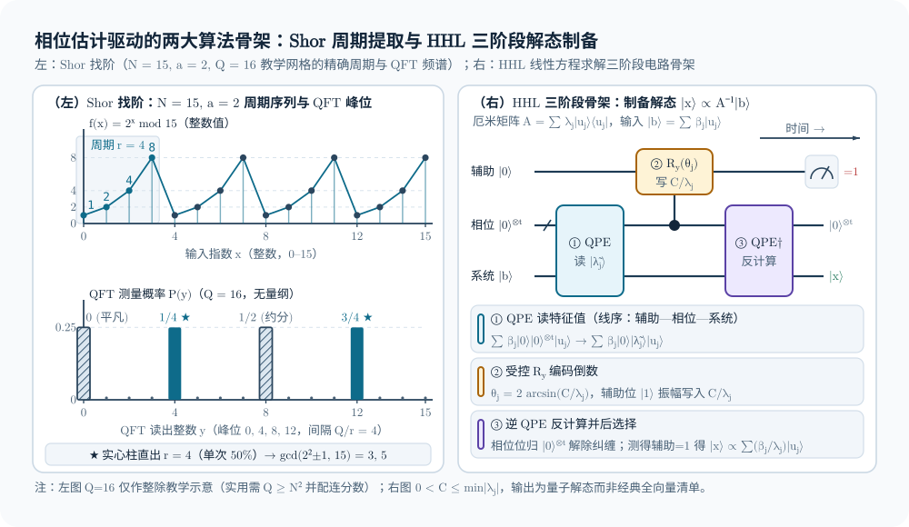
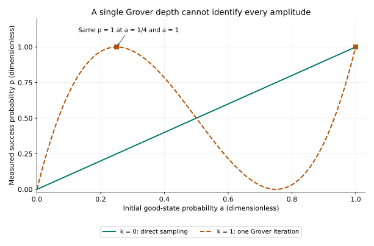
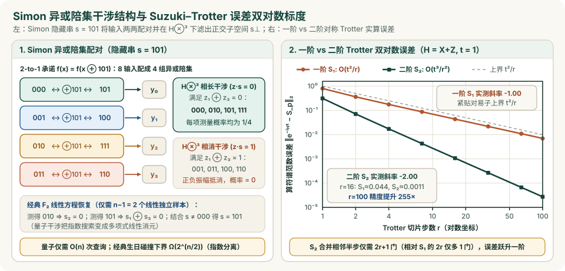

07｜代表性量子算法：从隐藏周期到量子模拟
先熟悉第 06 章 的可逆预言机、相位回踢、振幅放大与固定点滤波、量子傅里叶变换（QFT）、量子相位估计（QPE）、量子计数、分片时间演化，以及 Hadamard/SWAP 测试与 QRAM 瓶颈。下面把这些原语用到三类代表性任务中——隐藏周期与傅里叶采样（Simon 算法 → Shor 分解与椭圆曲线离散对数） 、振幅放大与统计精度加速（Grover 搜索 → 量子幅度估计 QAE） ，以及物理模拟与线性代数（哈密顿量模拟 → HHL 线性方程求解） ，最后把它们一起放进量子复杂度类的地图里，看清量子计算机究竟能加速什么、又卡在什么边界之外。
读这一章时，可以按自己的数学底子分两遍推进：
首遍主干（★ 必读） ：第 1 节 Simon 两/三比特手算、第 2.1–2.4 节 Shor 分解 15 与 35、第 3 节 Grover 搜索、第 4.1 节标准 QAE、第 5.1–5.3 / 5.5 节 Trotter 与 qDRIFT、第 6.1–6.2 / 6.5 节 HHL 二维对角与四重细则、第 7 节复杂度地图。进阶选读（☆ 首遍可跳过） ：标有 进阶选读： 的第 2.5 / 2.7 节（模幂电路与 ECDLP）、第 4.2 节（MLAE 混叠）、第 5.4 节（多体泡利分解与 THC 分水岭）、第 6.4 节（负谱非网格 HHL）与第 6.6 节（量子微分方程 LCHS / Schrödingerization / Carleman）。
全章沿用符号表 统一约定与第 06 章第 0 节 的三笔成本划分（查询次数、门复杂度、端到端总时间）；本章局部专记 Grover 迭代算符 Q \mathcal{Q} Q M M M Q = 2 t Q = 2^t Q = 2 t H H H H H H
1. Simon 算法：从隐藏异或周期到指数查询分离
1.1 问题、承诺与两个版本
想象有人给你一只黑盒，能计算函数
f : { 0 , 1 } n → { 0 , 1 } n ,
f:\{0,1\}^n \to \{0,1\}^n,
f : { 0 , 1 } n → { 0 , 1 } n , 并且事先立下一条承诺：存在某个隐藏的 n n n s ∈ { 0 , 1 } n s \in \{0,1\}^n s ∈ { 0 , 1 } n s s s
f ( x ) = f ( y ) ⟺ x ⊕ y ∈ { 0 n , s } ,
f(x) = f(y) \quad\Longleftrightarrow\quad x \oplus y \in \{0^n,\, s\},
f ( x ) = f ( y ) ⟺ x ⊕ y ∈ { 0 n , s } , 也就是 y = x y = x y = x y = x ⊕ s y = x \oplus s y = x ⊕ s ⊕ \oplus ⊕ 0 0 0 1 1 1 001 ⊕ 110 = 111 001 \oplus 110 = 111 001 ⊕ 110 = 111
如果只允许像普通程序那样逐个试探输入，想找出 s s s 2 n 2^n 2 n f ( x ) = f ( y ) f(x) = f(y) f ( x ) = f ( y ) x ≠ y x \neq y x = y s = x ⊕ y s = x \oplus y s = x ⊕ y Θ ( 2 n / 2 ) \Theta(2^{n/2}) Θ ( 2 n /2 ) f f f O ( n ) O(n) O ( n ) s s s 指数查询分离 的原型算法。
正式推导前，先区分文献中常见的两个版本，尤其是判定版容易漏掉的满秩分支：
搜索版（本章主线） ：题目额外承诺 s ≠ 0 n s \neq 0^n s = 0 n f f f { x , x ⊕ s } \{x, x\oplus s\} { x , x ⊕ s } s s s 判定版 ：允许 s = 0 n s = 0^n s = 0 n f f f f f f s s s f f f s = 0 n s = 0^n s = 0 n z z z F 2 n \mathbb{F}_2^n F 2 n n n n k ≥ n k \ge n k ≥ n k = ( n − 1 ) + ⌈ log 2 ( 1 / δ ) ⌉ ≥ n k = (n - 1) + \lceil\log_2(1/\delta)\rceil \ge n k = ( n − 1 ) + ⌈ log 2 ( 1/ δ )⌉ ≥ n F 2 \mathbb{F}_2 F 2 r r r 三个分支 ：
若 r = n r = n r = n ：由于任意非零 s s s n − 1 n - 1 n − 1 s ⊥ s^\perp s ⊥ n n n s = 0 n s = 0^n s = 0 n 若 r = n − 1 r = n - 1 r = n − 1 s s s ：再做一次经典碰撞检验 f ( 0 n ) = ? f ( s ) f(0^n) \stackrel{?}{=} f(s) f ( 0 n ) = ? f ( s ) s s s s = 0 n s = 0^n s = 0 n 若 r < n − 1 r < n - 1 r < n − 1 ：补采样本直至秩达到 n − 1 n - 1 n − 1 n n n
后面测量出的比特串 z ∈ { 0 , 1 } n z \in \{0,1\}^n z ∈ { 0 , 1 } n s s s
x ⋅ z : = x 1 z 1 ⊕ x 2 z 2 ⊕ ⋯ ⊕ x n z n ∈ { 0 , 1 } .
x \cdot z := x_1 z_1 \oplus x_2 z_2 \oplus \cdots \oplus x_n z_n \in \{0,1\}.
x ⋅ z := x 1 z 1 ⊕ x 2 z 2 ⊕ ⋯ ⊕ x n z n ∈ { 0 , 1 } . 举两个小例子热身：110 ⋅ 001 = ( 1 ⋅ 0 ) ⊕ ( 1 ⋅ 0 ) ⊕ ( 0 ⋅ 1 ) = 0 110 \cdot 001 = (1\cdot 0)\oplus(1\cdot 0)\oplus(0\cdot 1) = 0 110 ⋅ 001 = ( 1 ⋅ 0 ) ⊕ ( 1 ⋅ 0 ) ⊕ ( 0 ⋅ 1 ) = 0 110 ⋅ 100 = ( 1 ⋅ 1 ) ⊕ ( 1 ⋅ 0 ) ⊕ ( 0 ⋅ 0 ) = 1 110 \cdot 100 = (1\cdot 1)\oplus(1\cdot 0)\oplus(0\cdot 0) = 1 110 ⋅ 100 = ( 1 ⋅ 1 ) ⊕ ( 1 ⋅ 0 ) ⊕ ( 0 ⋅ 0 ) = 1 单次量子运行并不会直接吐出 s s s z ⋅ s = 0 ( m o d 2 ) z \cdot s = 0 \pmod 2 z ⋅ s = 0 ( mod 2 )
1.2 一次量子采样怎样产生一条方程
准备两个各含 n n n ∣ 0 n ⟩ ∣ 0 n ⟩ |0^n\rangle|0^n\rangle ∣ 0 n ⟩ ∣ 0 n ⟩ U f ∣ x ⟩ ∣ y ⟩ = ∣ x ⟩ ∣ y ⊕ f ( x ) ⟩ U_f|x\rangle|y\rangle = |x\rangle|y\oplus f(x)\rangle U f ∣ x ⟩ ∣ y ⟩ = ∣ x ⟩ ∣ y ⊕ f ( x )⟩ H H H
制备全输入均匀叠加 ：对第一寄存器施加 H ⊗ n H^{\otimes n} H ⊗ n
∣ 0 n ⟩ ∣ 0 n ⟩ → H ⊗ n ⊗ I 1 2 n ∑ x ∈ { 0 , 1 } n ∣ x ⟩ ∣ 0 n ⟩ .
|0^n\rangle|0^n\rangle
\xrightarrow{H^{\otimes n}\otimes I}
\frac{1}{\sqrt{2^n}} \sum_{x \in \{0,1\}^n} |x\rangle|0^n\rangle.
∣ 0 n ⟩ ∣ 0 n ⟩ H ⊗ n ⊗ I 2 n 1 x ∈ { 0 , 1 } n ∑ ∣ x ⟩ ∣ 0 n ⟩ . 一次查询写入函数值 ：调用一次 U f U_f U f
1 2 n ∑ x ∈ { 0 , 1 } n ∣ x ⟩ ∣ f ( x ) ⟩ .
\frac{1}{\sqrt{2^n}} \sum_{x \in \{0,1\}^n} |x\rangle|f(x)\rangle.
2 n 1 x ∈ { 0 , 1 } n ∑ ∣ x ⟩ ∣ f ( x )⟩ . 按函数值坍缩成陪集态 ：设想先测量第二寄存器，随机测得某个函数值 f ( x 0 ) f(x_0) f ( x 0 ) f f f s ≠ 0 n s \neq 0^n s = 0 n x 0 x_0 x 0 x 0 ⊕ s x_0 \oplus s x 0 ⊕ s
∣ ψ c o s e t ⟩ = ∣ x 0 ⟩ + ∣ x 0 ⊕ s ⟩ 2 .
|\psi_{\mathrm{coset}}\rangle = \frac{|x_0\rangle + |x_0 \oplus s\rangle}{\sqrt{2}}.
∣ ψ coset ⟩ = 2 ∣ x 0 ⟩ + ∣ x 0 ⊕ s ⟩ . （顺带一提，根据第 04 章 的延迟测量原理，实际线路里完全可以不测第二寄存器，直接把第二寄存器丢在一旁——第一寄存器得到的 z z z
末层 Hadamard 制造干涉筛选 ：把恒等式 H ⊗ n ∣ x ⟩ = 1 2 n ∑ z ∈ { 0 , 1 } n ( − 1 ) x ⋅ z ∣ z ⟩ H^{\otimes n}|x\rangle = \frac{1}{\sqrt{2^n}}\sum_{z \in \{0,1\}^n} (-1)^{x\cdot z}|z\rangle H ⊗ n ∣ x ⟩ = 2 n 1 ∑ z ∈ { 0 , 1 } n ( − 1 ) x ⋅ z ∣ z ⟩
H ⊗ n ( ∣ x 0 ⟩ + ∣ x 0 ⊕ s ⟩ 2 ) = 1 2 n + 1 ∑ z ∈ { 0 , 1 } n [ ( − 1 ) x 0 ⋅ z + ( − 1 ) ( x 0 ⊕ s ) ⋅ z ] ∣ z ⟩ .
H^{\otimes n}\left(\frac{|x_0\rangle + |x_0 \oplus s\rangle}{\sqrt{2}}\right)
= \frac{1}{\sqrt{2^{n+1}}} \sum_{z \in \{0,1\}^n} \left[(-1)^{x_0 \cdot z} + (-1)^{(x_0 \oplus s) \cdot z}\right] |z\rangle.
H ⊗ n ( 2 ∣ x 0 ⟩ + ∣ x 0 ⊕ s ⟩ ) = 2 n + 1 1 z ∈ { 0 , 1 } n ∑ [ ( − 1 ) x 0 ⋅ z + ( − 1 ) ( x 0 ⊕ s ) ⋅ z ] ∣ z ⟩ . 利用二进制内积对异或的分配律 ( x 0 ⊕ s ) ⋅ z = x 0 ⋅ z ⊕ s ⋅ z ( m o d 2 ) (x_0 \oplus s)\cdot z = x_0 \cdot z \oplus s \cdot z \pmod 2 ( x 0 ⊕ s ) ⋅ z = x 0 ⋅ z ⊕ s ⋅ z ( mod 2 ) ( − 1 ) x 0 ⋅ z (-1)^{x_0 \cdot z} ( − 1 ) x 0 ⋅ z
H ⊗ n ∣ ψ c o s e t ⟩ = 1 2 n + 1 ∑ z ∈ { 0 , 1 } n ( − 1 ) x 0 ⋅ z [ 1 + ( − 1 ) s ⋅ z ] ∣ z ⟩ .
H^{\otimes n}|\psi_{\mathrm{coset}}\rangle
= \frac{1}{\sqrt{2^{n+1}}} \sum_{z \in \{0,1\}^n} (-1)^{x_0 \cdot z}\left[1 + (-1)^{s \cdot z}\right] |z\rangle.
H ⊗ n ∣ ψ coset ⟩ = 2 n + 1 1 z ∈ { 0 , 1 } n ∑ ( − 1 ) x 0 ⋅ z [ 1 + ( − 1 ) s ⋅ z ] ∣ z ⟩ .
现在逐个盯住括号里的 1 + ( − 1 ) s ⋅ z 1 + (-1)^{s\cdot z} 1 + ( − 1 ) s ⋅ z
若 s ⋅ z = 1 ( m o d 2 ) s \cdot z = 1 \pmod 2 s ⋅ z = 1 ( mod 2 ) 1 + ( − 1 ) 1 = 0 1 + (-1)^1 = 0 1 + ( − 1 ) 1 = 0 z z z 0 0 0
若 s ⋅ z = 0 ( m o d 2 ) s \cdot z = 0 \pmod 2 s ⋅ z = 0 ( mod 2 ) 1 + ( − 1 ) 0 = 2 1 + (-1)^0 = 2 1 + ( − 1 ) 0 = 2 ( − 1 ) x 0 ⋅ z 2 2 n + 1 = ( − 1 ) x 0 ⋅ z 1 2 n − 1 (-1)^{x_0 \cdot z}\frac{2}{\sqrt{2^{n+1}}} = (-1)^{x_0 \cdot z}\frac{1}{\sqrt{2^{n-1}}} ( − 1 ) x 0 ⋅ z 2 n + 1 2 = ( − 1 ) x 0 ⋅ z 2 n − 1 1
p ( z ) = ∣ ( − 1 ) x 0 ⋅ z 1 2 n − 1 ∣ 2 = 1 2 n − 1 .
p(z) = \left|(-1)^{x_0 \cdot z}\frac{1}{\sqrt{2^{n-1}}}\right|^2 = \frac{1}{2^{n-1}}.
p ( z ) = ( − 1 ) x 0 ⋅ z 2 n − 1 1 2 = 2 n − 1 1 .
由于 s ≠ 0 n s \neq 0^n s = 0 n z ⋅ s = 0 z \cdot s = 0 z ⋅ s = 0 n n n F 2 n \mathbb{F}_2^n F 2 n d = n − 1 d = n - 1 d = n − 1 s ⊥ s^\perp s ⊥ 2 n − 1 2^{n-1} 2 n − 1 2 n − 1 × 1 2 n − 1 = 1 2^{n-1} \times \frac{1}{2^{n-1}} = 1 2 n − 1 × 2 n − 1 1 = 1 x 0 x_0 x 0 ( − 1 ) x 0 ⋅ z (-1)^{x_0 \cdot z} ( − 1 ) x 0 ⋅ z z z z s ⊥ s^\perp s ⊥ 严格等概率均匀分布 ！
1.3 两比特与三比特分步手算
热身算例：n = 2 , s = 11 n = 2,\, s = 11 n = 2 , s = 11
构造具体函数 f ( 00 ) = f ( 11 ) = 00 f(00) = f(11) = 00 f ( 00 ) = f ( 11 ) = 00 f ( 01 ) = f ( 10 ) = 01 f(01) = f(10) = 01 f ( 01 ) = f ( 10 ) = 01 11 11 11
初态经 H ⊗ 2 ⊗ I H^{\otimes 2}\otimes I H ⊗ 2 ⊗ I U f U_f U f
1 2 ( ∣ 00 ⟩ ∣ 00 ⟩ + ∣ 01 ⟩ ∣ 01 ⟩ + ∣ 10 ⟩ ∣ 01 ⟩ + ∣ 11 ⟩ ∣ 00 ⟩ ) .
\frac{1}{2}\bigl(|00\rangle|00\rangle + |01\rangle|01\rangle + |10\rangle|01\rangle + |11\rangle|00\rangle\bigr).
2 1 ( ∣00 ⟩ ∣00 ⟩ + ∣01 ⟩ ∣01 ⟩ + ∣10 ⟩ ∣01 ⟩ + ∣11 ⟩ ∣00 ⟩ ) . 假设第二寄存器测得 00，第一寄存器坍缩到 ∣ 00 ⟩ + ∣ 11 ⟩ 2 \frac{|00\rangle + |11\rangle}{\sqrt{2}} 2 ∣00 ⟩ + ∣11 ⟩
施加 H ⊗ H H \otimes H H ⊗ H H ∣ 0 ⟩ = ∣ 0 ⟩ + ∣ 1 ⟩ 2 H|0\rangle = \frac{|0\rangle+|1\rangle}{\sqrt{2}} H ∣0 ⟩ = 2 ∣0 ⟩ + ∣1 ⟩ H ∣ 1 ⟩ = ∣ 0 ⟩ − ∣ 1 ⟩ 2 H|1\rangle = \frac{|0\rangle-|1\rangle}{\sqrt{2}} H ∣1 ⟩ = 2 ∣0 ⟩ − ∣1 ⟩
( H ⊗ H ) ∣ 00 ⟩ + ∣ 11 ⟩ 2 = 1 2 2 [ ( ∣ 0 ⟩ + ∣ 1 ⟩ ) ( ∣ 0 ⟩ + ∣ 1 ⟩ ) + ( ∣ 0 ⟩ − ∣ 1 ⟩ ) ( ∣ 0 ⟩ − ∣ 1 ⟩ ) ] = 1 2 2 [ ( ∣ 00 ⟩ + ∣ 01 ⟩ + ∣ 10 ⟩ + ∣ 11 ⟩ ) + ( ∣ 00 ⟩ − ∣ 01 ⟩ − ∣ 10 ⟩ + ∣ 11 ⟩ ) ] = 1 2 2 ( 2 ∣ 00 ⟩ + 2 ∣ 11 ⟩ ) = ∣ 00 ⟩ + ∣ 11 ⟩ 2 .
\begin{aligned}
(H\otimes H)\frac{|00\rangle + |11\rangle}{\sqrt{2}}
&= \frac{1}{2\sqrt{2}}\Bigl[(|0\rangle+|1\rangle)(|0\rangle+|1\rangle) + (|0\rangle-|1\rangle)(|0\rangle-|1\rangle)\Bigr] \\
&= \frac{1}{2\sqrt{2}}\Bigl[(|00\rangle+|01\rangle+|10\rangle+|11\rangle) + (|00\rangle-|01\rangle-|10\rangle+|11\rangle)\Bigr] \\
&= \frac{1}{2\sqrt{2}}\bigl(2|00\rangle + 2|11\rangle\bigr)
= \frac{|00\rangle + |11\rangle}{\sqrt{2}}.
\end{aligned}
( H ⊗ H ) 2 ∣00 ⟩ + ∣11 ⟩ = 2 2 1 [ ( ∣0 ⟩ + ∣1 ⟩) ( ∣0 ⟩ + ∣1 ⟩) + ( ∣0 ⟩ − ∣1 ⟩) ( ∣0 ⟩ − ∣1 ⟩) ] = 2 2 1 [ ( ∣00 ⟩ + ∣01 ⟩ + ∣10 ⟩ + ∣11 ⟩) + ( ∣00 ⟩ − ∣01 ⟩ − ∣10 ⟩ + ∣11 ⟩) ] = 2 2 1 ( 2∣00 ⟩ + 2∣11 ⟩ ) = 2 ∣00 ⟩ + ∣11 ⟩ .
|01> 和 |10> 正负精准抵消，只留下满足 z 1 ⊕ z 2 = 0 z_1 \oplus z_2 = 0 z 1 ⊕ z 2 = 0 00 与 11，各自概率为 ∣ 1 / 2 ∣ 2 = 1 / 2 |1/\sqrt{2}|^2 = 1/2 ∣1/ 2 ∣ 2 = 1/2 1 1 1 11，方程 s 1 ⊕ s 2 = 0 s_1 \oplus s_2 = 0 s 1 ⊕ s 2 = 0 s ≠ 00 s \neq 00 s = 00 s = 11 s = 11 s = 11
进阶算例：n = 3 , s = 110 n = 3,\, s = 110 n = 3 , s = 110
现在把位宽升到三比特，隐藏串 s = 110 s = 110 s = 110 ∣ 001 ⟩ + ∣ 111 ⟩ 2 \frac{|001\rangle + |111\rangle}{\sqrt{2}} 2 ∣001 ⟩ + ∣111 ⟩ 001 ⊕ 110 = 111 001 \oplus 110 = 111 001 ⊕ 110 = 111 H ⊗ 3 ∣ x ⟩ = 1 8 ∑ z ( − 1 ) x ⋅ z ∣ z ⟩ H^{\otimes 3}|x\rangle = \frac{1}{\sqrt{8}}\sum_z (-1)^{x\cdot z}|z\rangle H ⊗ 3 ∣ x ⟩ = 8 1 ∑ z ( − 1 ) x ⋅ z ∣ z ⟩
对 ∣ 001 ⟩ |001\rangle ∣001 ⟩ 001 ⋅ z = z 3 001 \cdot z = z_3 001 ⋅ z = z 3 ( − 1 ) z 3 (-1)^{z_3} ( − 1 ) z 3
对 ∣ 111 ⟩ |111\rangle ∣111 ⟩ 111 ⋅ z = z 1 ⊕ z 2 ⊕ z 3 111 \cdot z = z_1 \oplus z_2 \oplus z_3 111 ⋅ z = z 1 ⊕ z 2 ⊕ z 3 ( − 1 ) z 1 ⊕ z 2 ⊕ z 3 (-1)^{z_1 \oplus z_2 \oplus z_3} ( − 1 ) z 1 ⊕ z 2 ⊕ z 3
把两支相加再除以 2 ⋅ 8 = 4 \sqrt{2}\cdot\sqrt{8} = 4 2 ⋅ 8 = 4 z 1 ⊕ z 2 = 1 z_1 \oplus z_2 = 1 z 1 ⊕ z 2 = 1 010, 011, 100, 101），两项符号相反抵消为 0 0 0 z 1 ⊕ z 2 = 0 z_1 \oplus z_2 = 0 z 1 ⊕ z 2 = 0 000, 001, 110, 111），两项同号相加得 ± 2 / 4 = ± 1 / 2 \pm 2/4 = \pm 1/2 ± 2/4 = ± 1/2
H ⊗ 3 ( ∣ 001 ⟩ + ∣ 111 ⟩ 2 ) = 1 2 ( ∣ 000 ⟩ − ∣ 001 ⟩ + ∣ 110 ⟩ − ∣ 111 ⟩ ) .
H^{\otimes 3}\left(\frac{|001\rangle + |111\rangle}{\sqrt{2}}\right)
= \frac{1}{2}\bigl(|000\rangle - |001\rangle + |110\rangle - |111\rangle\bigr).
H ⊗ 3 ( 2 ∣001 ⟩ + ∣111 ⟩ ) = 2 1 ( ∣000 ⟩ − ∣001 ⟩ + ∣110 ⟩ − ∣111 ⟩ ) . 核验归一化：4 × ( ± 1 / 2 ) 2 = 1 4 \times (\pm 1/2)^2 = 1 4 × ( ± 1/2 ) 2 = 1 d = 2 d = 2 d = 2 s ⊥ = { 000 , 001 , 110 , 111 } s^\perp = \{000, 001, 110, 111\} s ⊥ = { 000 , 001 , 110 , 111 } 1 / 4 1/4 1/4
再看经典后处理怎么工作。假设我们连续三次运行线路，依次测得 001、110、001：
第一次测得 001：写出方程 0 ⋅ s 1 ⊕ 0 ⋅ s 2 ⊕ 1 ⋅ s 3 = 0 ⟹ s 3 = 0 0\cdot s_1 \oplus 0\cdot s_2 \oplus 1\cdot s_3 = 0 \implies s_3 = 0 0 ⋅ s 1 ⊕ 0 ⋅ s 2 ⊕ 1 ⋅ s 3 = 0 ⟹ s 3 = 0 010, 100, 110；
第二次测得 110：写出方程 s 1 ⊕ s 2 = 0 s_1 \oplus s_2 = 0 s 1 ⊕ s 2 = 0 s 3 = 0 s_3 = 0 s 3 = 0 000 和 110；
第三次又测得 001：依然是 s 3 = 0 s_3 = 0 s 3 = 0
结合搜索版承诺 s ≠ 000 s \neq 000 s = 000 s = 110 s = 110 s = 110
如果把这个函数做成真实量子电路——例如取 f ( x 1 x 2 x 3 ) = ( x 1 ⊕ x 2 , x 3 , 0 ) f(x_1x_2x_3) = (x_1 \oplus x_2,\, x_3,\, 0) f ( x 1 x 2 x 3 ) = ( x 1 ⊕ x 2 , x 3 , 0 ) C N O T \mathrm{CNOT} CNOT ∣ 000 ⟩ |000\rangle ∣000 ⟩ { 000 , 110 } \{000, 110\} { 000 , 110 } F 2 \mathbb{F}_2 F 2
1.4 满秩分析、固定预算尾界与对称密码边界
初学者常在这里有一个错觉：“既然需要 d = n − 1 d = n - 1 d = n − 1 n − 1 n - 1 n − 1 d = 2 d = 2 d = 2
秩为 0 0 0 3 3 3 3 / 4 3/4 3/4 1 3 / 4 = 4 3 \frac{1}{3/4} = \frac{4}{3} 3/4 1 = 3 4
秩为 1 1 1 2 2 2 000），下一抽落在子空间外的概率是 2 / 4 = 1 / 2 2/4 = 1/2 2/4 = 1/2 2 2 2
合计达到满秩的期望采样次数为
4 3 + 2 = 10 3 ≈ 3.333 次 ,
\frac{4}{3} + 2 = \frac{10}{3} \approx 3.333\text{ 次},
3 4 + 2 = 3 10 ≈ 3.333 次 , 而不是 2 2 2 r < d r < d r < d r r r 1 − 2 r − d 1 - 2^{r-d} 1 − 2 r − d
E [ 采样数 ] = ∑ r = 0 d − 1 1 1 − 2 r − d = d + ∑ j = 1 d 1 2 j − 1 < d + 1.6067
\mathbb{E}[\text{采样数}]
= \sum_{r=0}^{d-1} \frac{1}{1 - 2^{r-d}}
= d + \sum_{j=1}^{d} \frac{1}{2^j - 1}
< d + 1.6067
E [ 采样数 ] = r = 0 ∑ d − 1 1 − 2 r − d 1 = d + j = 1 ∑ d 2 j − 1 1 < d + 1.6067 （常数 ∑ j = 1 ∞ 1 2 j − 1 ≈ 1.606695 \sum_{j=1}^\infty \frac{1}{2^j-1} \approx 1.606695 ∑ j = 1 ∞ 2 j − 1 1 ≈ 1.606695
如果现实中我们必须提前定死采样预算 k ≥ d k \ge d k ≥ d k k k k × d k \times d k × d 2 k − 1 2^k - 1 2 k − 1 j j j 2 j 2^j 2 j j + 1 j+1 j + 1 2 k − 2 j 2^k - 2^j 2 k − 2 j ( 2 k ) d (2^k)^d ( 2 k ) d
p f u l l ( k , d ) = ∏ j = 0 d − 1 ( 1 − 2 j − k ) .
p_{\mathrm{full}}(k, d) = \prod_{j=0}^{d-1}\left(1 - 2^{j-k}\right).
p full ( k , d ) = j = 0 ∏ d − 1 ( 1 − 2 j − k ) . 这条公式有两个非常好用的推论：
刚好只采 k = d k = d k = d ：满秩概率 p f u l l ( d , d ) = ∏ i = 1 d ( 1 − 2 − i ) p_{\mathrm{full}}(d, d) = \prod_{i=1}^{d}(1 - 2^{-i}) p full ( d , d ) = ∏ i = 1 d ( 1 − 2 − i ) d d d ∏ i = 1 ∞ ( 1 − 2 − i ) ≈ 0.288788 > 1 / 4 \prod_{i=1}^\infty (1 - 2^{-i}) \approx 0.288788 > 1/4 ∏ i = 1 ∞ ( 1 − 2 − i ) ≈ 0.288788 > 1/4 n − 1 n-1 n − 1 29 % 29\% 29%
控制失败尾部的固定预算 ：若 k k k d d d u u u k k k u ⋅ z = 0 u \cdot z = 0 u ⋅ z = 0 u u u 1 / 2 1/2 1/2 k k k 2 − k 2^{-k} 2 − k 2 d − 1 2^d - 1 2 d − 1 u u u
p f a i l ( k , d ) ≤ ( 2 d − 1 ) 2 − k < 2 d − k .
p_{\mathrm{fail}}(k, d) \le (2^d - 1) 2^{-k} < 2^{d-k}.
p fail ( k , d ) ≤ ( 2 d − 1 ) 2 − k < 2 d − k . 只要选取 k = d + ⌈ log 2 ( 1 / δ ) ⌉ k = d + \lceil \log_2(1/\delta) \rceil k = d + ⌈ log 2 ( 1/ δ )⌉ δ \delta δ
拿 n = 3 , s = 110 n = 3,\, s = 110 n = 3 , s = 110 d = 2 d = 2 d = 2
固定只采 k = 2 k = 2 k = 2 p f u l l ( 2 , 2 ) = ( 1 − 1 4 ) ( 1 − 1 2 ) = 3 8 p_{\mathrm{full}}(2, 2) = \left(1 - \frac{1}{4}\right)\left(1 - \frac{1}{2}\right) = \frac{3}{8} p full ( 2 , 2 ) = ( 1 − 4 1 ) ( 1 − 2 1 ) = 8 3 4 × 4 = 16 4 \times 4 = 16 4 × 4 = 16 3 3 3 000 和第 1 个有 2 2 2 6 / 16 = 3 / 8 6/16 = 3/8 6/16 = 3/8
要求用并合界把失败率压到 1 % 1\% 1% k = 2 + ⌈ log 2 100 ⌉ = 2 + 7 = 9 k = 2 + \lceil \log_2 100 \rceil = 2 + 7 = 9 k = 2 + ⌈ log 2 100 ⌉ = 2 + 7 = 9 ( 2 2 − 1 ) 2 − 9 = 3 512 ≈ 0.005859 < 0.01 (2^2 - 1)2^{-9} = \frac{3}{512} \approx 0.005859 < 0.01 ( 2 2 − 1 ) 2 − 9 = 512 3 ≈ 0.005859 < 0.01 1 − ( 1 − 1 512 ) ( 1 − 1 256 ) = 767 131072 ≈ 0.005852 1 - \left(1 - \frac{1}{512}\right)\left(1 - \frac{1}{256}\right) = \frac{767}{131072} \approx 0.005852 1 − ( 1 − 512 1 ) ( 1 − 256 1 ) = 131072 767 ≈ 0.005852
最后补齐两笔经常被漏记的账：第一，拿齐方程后还必须在经典计算机上做 F 2 \mathbb{F}_2 F 2 O ( n 3 ) O(n^3) O ( n 3 ) O ( n ) O(n) O ( n ) O ( n ) O(n) O ( n ) Q2 模型 ——攻击者必须能够把带密钥的加密黑盒放到量子叠加态上相干查询；如果对手只能发普通经典明文密文对（Q1 模型 ），Simon 攻击无法直接发动。
从群论视角看，Simon 算法是在有限阿贝尔群 Z 2 n \mathbb{Z}_2^n Z 2 n { 0 n , s } \{0^n, s\} { 0 n , s } 第 16 章第 3 节 展开。
2. Shor 算法：大整数分解、模幂电路与椭圆曲线离散对数
Simon 找到了二进制异或的隐藏周期；1994 年 Peter Shor 把同样的傅里叶周期提取思想推向普通整数乘法模 N N N
2.1 经典数论约化：把因数分解变成找阶
给定一个待分解的合数 N N N L = ⌈ log 2 N ⌉ L = \lceil \log_2 N \rceil L = ⌈ log 2 N ⌉ u ≡ v ( m o d N ) u \equiv v \pmod N u ≡ v ( mod N ) N N N u − v u - v u − v a r mod N a^r \bmod N a r mod N a r a^r a r N N N gcd ( u , N ) \gcd(u, N) g cd( u , N ) N N N a a a a a a N N N 阶 （order）r r r
a r ≡ 1 ( m o d N )
a^r \equiv 1 \pmod N
a r ≡ 1 ( mod N ) 的最小正整数 （注意“最小”二字绝不能省）。
整套 Shor 算法里，真正用到量子计算机的只有“找阶”这一步，前后全部在普通经典计算机上完成：
经典预处理 ：若 N N N 2 2 2 N N N N = b m N = b^m N = b m m ≥ 2 m \ge 2 m ≥ 2 2 ≤ m ≤ ⌊ log 2 N ⌋ 2 \le m \le \lfloor \log_2 N \rfloor 2 ≤ m ≤ ⌊ log 2 N ⌋ b b b b b b N N N 至少含两个不同奇素因子的奇合数 。
随机选底数 ：在 { 2 , 3 , … , N − 1 } \{2, 3, \dots, N-1\} { 2 , 3 , … , N − 1 } a a a g = gcd ( a , N ) g = \gcd(a, N) g = g cd( a , N ) g > 1 g > 1 g > 1 g g g
量子找阶 ：此时 gcd ( a , N ) = 1 \gcd(a, N) = 1 g cd( a , N ) = 1 a a a N N N r r r
奇偶检查 ：若 r r r a a a
排除负一坏条件 ：记 u = a r / 2 mod N u = a^{r/2} \bmod N u = a r /2 mod N u ≡ − 1 ( m o d N ) u \equiv -1 \pmod N u ≡ − 1 ( mod N ) u = N − 1 u = N - 1 u = N − 1 a a a
提取非平凡因子 ：因式分解 a r − 1 = ( a r / 2 − 1 ) ( a r / 2 + 1 ) a^r - 1 = (a^{r/2} - 1)(a^{r/2} + 1) a r − 1 = ( a r /2 − 1 ) ( a r /2 + 1 )
p 1 = gcd ( u − 1 , N ) , p 2 = gcd ( u + 1 , N ) .
p_1 = \gcd(u - 1, N), \qquad p_2 = \gcd(u + 1, N).
p 1 = g cd( u − 1 , N ) , p 2 = g cd( u + 1 , N ) . 因为 N N N gcd ( u − 1 , u + 1 ) \gcd(u - 1, u + 1) g cd( u − 1 , u + 1 ) ( u + 1 ) − ( u − 1 ) = 2 (u + 1) - (u - 1) = 2 ( u + 1 ) − ( u − 1 ) = 2 p 1 p_1 p 1 p 2 p_2 p 2 p 1 p 2 = N p_1 p_2 = N p 1 p 2 = N N N N 同时 都是 N N N
为什么第 5 步只需排除 u ≡ − 1 ( m o d N ) u \equiv -1 \pmod N u ≡ − 1 ( mod N ) u ≡ 1 ( m o d N ) u \equiv 1 \pmod N u ≡ 1 ( mod N ) 因为 r r r u 2 ≡ a r ≡ 1 ( m o d N ) u^2 \equiv a^r \equiv 1 \pmod N u 2 ≡ a r ≡ 1 ( mod N ) N N N ( u − 1 ) ( u + 1 ) (u-1)(u+1) ( u − 1 ) ( u + 1 ) u ≡ 1 ( m o d N ) u \equiv 1 \pmod N u ≡ 1 ( mod N ) a r / 2 ≡ 1 ( m o d N ) a^{r/2} \equiv 1 \pmod N a r /2 ≡ 1 ( mod N ) r r r 最小 正阶直接矛盾！所以 u ≡ 1 u \equiv 1 u ≡ 1 u ≡ − 1 u \equiv -1 u ≡ − 1 N N N ( u − 1 ) ( u + 1 ) (u-1)(u+1) ( u − 1 ) ( u + 1 ) u − 1 u-1 u − 1 u + 1 u+1 u + 1 N N N u − 1 u-1 u − 1 u + 1 u+1 u + 1
更令人安心的是，数论定理保证：只要奇合数 N N N m ≥ 2 m \ge 2 m ≥ 2 N N N a a a
Pr [ r 为偶数且 a r / 2 ≢ − 1 ( m o d N ) ] ≥ 1 − 1 2 m − 1 ≥ 1 2 .
\Pr\bigl[r \text{ 为偶数且 } a^{r/2} \not\equiv -1 \pmod N\bigr] \ge 1 - \frac{1}{2^{m-1}} \ge \frac{1}{2}.
Pr [ r 为偶数且 a r /2 ≡ − 1 ( mod N ) ] ≥ 1 − 2 m − 1 1 ≥ 2 1 . 也就是说，平均随机选一两次底数就能撞上好底数，绝不会在经典约化上陷入指数重试。
2.2 相位估计如何读出隐藏阶 r r r
直觉热身：Q = 16 Q = 16 Q = 16
在展开一般模乘算符前，先借一个四比特（Q = 16 Q = 16 Q = 16 r = 4 r = 4 r = 4
∣ P ⟩ = ∣ 0 ⟩ + ∣ 4 ⟩ + ∣ 8 ⟩ + ∣ 12 ⟩ 2 .
|P\rangle = \frac{|0\rangle + |4\rangle + |8\rangle + |12\rangle}{2}.
∣ P ⟩ = 2 ∣0 ⟩ + ∣4 ⟩ + ∣8 ⟩ + ∣12 ⟩ . 套用第 06 章第 5 节 的 QFT 定义 F 16 ∣ x ⟩ = 1 16 ∑ y = 0 15 e 2 π i x y / 16 ∣ y ⟩ F_{16}|x\rangle = \frac{1}{\sqrt{16}}\sum_{y=0}^{15} e^{2\pi i x y / 16}|y\rangle F 16 ∣ x ⟩ = 16 1 ∑ y = 0 15 e 2 πi x y /16 ∣ y ⟩ ∣ y ⟩ |y\rangle ∣ y ⟩
A y = 1 2 16 ∑ j = 0 3 e 2 π i ( 4 j ) y / 16 = 1 8 ∑ j = 0 3 e 2 π i j y / 4 .
A_y = \frac{1}{2\sqrt{16}} \sum_{j=0}^{3} e^{2\pi i (4j) y / 16}
= \frac{1}{8} \sum_{j=0}^{3} e^{2\pi i j y / 4}.
A y = 2 16 1 j = 0 ∑ 3 e 2 πi ( 4 j ) y /16 = 8 1 j = 0 ∑ 3 e 2 πij y /4 . 代入两个具体读数一步算完：
当 y = 4 y = 4 y = 4 e 2 π i j = 1 e^{2\pi i j} = 1 e 2 πij = 1 A 4 = 1 + 1 + 1 + 1 8 = 1 2 A_4 = \frac{1+1+1+1}{8} = \frac{1}{2} A 4 = 8 1 + 1 + 1 + 1 = 2 1 ∣ A 4 ∣ 2 = 1 4 |A_4|^2 = \frac{1}{4} ∣ A 4 ∣ 2 = 4 1
当 y = 1 y = 1 y = 1 e 0 = 1 e^0 = 1 e 0 = 1 e i π / 2 = i e^{i\pi/2} = i e iπ /2 = i e i π = − 1 e^{i\pi} = -1 e iπ = − 1 e 3 i π / 2 = − i e^{3i\pi/2} = -i e 3 iπ /2 = − i 1 + i − 1 − i = 0 1 + i - 1 - i = 0 1 + i − 1 − i = 0 A 1 = 0 A_1 = 0 A 1 = 0
同理检查全部 16 个整数，只有 y ∈ { 0 , 4 , 8 , 12 } y \in \{0, 4, 8, 12\} y ∈ { 0 , 4 , 8 , 12 } 1 / 2 1/2 1/2 1 / 4 1/4 1/4 1 1 1 r = 4 r = 4 r = 4 Q / r = 4 Q/r = 4 Q / r = 4 逆 QFT，也只把指数变号，四根峰的位置与高度完全相同。

放大查看 ↗ 左半图展示 Shor 找阶在 N=15, a=2, Q=16 下的周期序列与 QFT 频谱峰位；右半图预告第 6 节 HHL 线性求解的三阶段电路骨架 上面这张双联图把相位估计驱动的两大经典算法放在了同一张画布上：左半图正是刚才算出的 N = 15 , a = 2 N = 15,\, a = 2 N = 15 , a = 2 1 , 2 , 4 , 8 1, 2, 4, 8 1 , 2 , 4 , 8 Q = 16 Q = 16 Q = 16 y = 4 y = 4 y = 4 y = 12 y = 12 y = 12 r = 4 r = 4 r = 4 50 % 50\% 50%
一般模乘算符、本征态展开与 Legendre 连分数条件
正式进入一般整数 N N N L = ⌈ log 2 N ⌉ L = \lceil \log_2 N \rceil L = ⌈ log 2 N ⌉ gcd ( a , N ) = 1 \gcd(a, N) = 1 g cd( a , N ) = 1 a a a L L L 模乘算符 U a U_a U a
U a ∣ y ⟩ = { ∣ a y mod N ⟩ , 0 ≤ y < N , ∣ y ⟩ , N ≤ y < 2 L .
U_a |y\rangle =
\begin{cases}
|a y \bmod N\rangle, & 0 \le y < N, \\
|y\rangle, & N \le y < 2^L.
\end{cases}
U a ∣ y ⟩ = { ∣ a y mod N ⟩ , ∣ y ⟩ , 0 ≤ y < N , N ≤ y < 2 L . 为什么 U a U_a U a gcd ( a , N ) = 1 \gcd(a, N) = 1 g cd( a , N ) = 1 N N N a − 1 a^{-1} a − 1 a y 1 ≡ a y 2 ( m o d N ) a y_1 \equiv a y_2 \pmod N a y 1 ≡ a y 2 ( mod N ) a − 1 a^{-1} a − 1 y 1 ≡ y 2 ( m o d N ) y_1 \equiv y_2 \pmod N y 1 ≡ y 2 ( mod N ) U a U_a U a { 0 , … , N − 1 } \{0,\dots,N-1\} { 0 , … , N − 1 } y ≥ N y \ge N y ≥ N 2 L × 2 L 2^L \times 2^L 2 L × 2 L
如果 a a a r r r { ∣ 1 ⟩ , ∣ a ⟩ , ∣ a 2 mod N ⟩ , … , ∣ a r − 1 mod N ⟩ } \{|1\rangle, |a\rangle, |a^2\bmod N\rangle, \dots, |a^{r-1}\bmod N\rangle\} { ∣1 ⟩ , ∣ a ⟩ , ∣ a 2 mod N ⟩ , … , ∣ a r − 1 mod N ⟩} r r r k ∈ { 0 , 1 , … , r − 1 } k \in \{0, 1, \dots, r-1\} k ∈ { 0 , 1 , … , r − 1 }
∣ u k ⟩ = 1 r ∑ j = 0 r − 1 e − 2 π i k j / r ∣ a j mod N ⟩ .
|u_k\rangle = \frac{1}{\sqrt{r}} \sum_{j=0}^{r-1} e^{-2\pi i k j / r} |a^j \bmod N\rangle.
∣ u k ⟩ = r 1 j = 0 ∑ r − 1 e − 2 πikj / r ∣ a j mod N ⟩ . 逐行验证 ∣ u k ⟩ |u_k\rangle ∣ u k ⟩ U a U_a U a U a U_a U a ℓ = j + 1 ( m o d r ) \ell = j + 1 \pmod r ℓ = j + 1 ( mod r ) j = ℓ − 1 j = \ell - 1 j = ℓ − 1 a r ≡ 1 ( m o d N ) a^r \equiv 1 \pmod N a r ≡ 1 ( mod N ) e − 2 π i k r / r = 1 e^{-2\pi i k r / r} = 1 e − 2 πik r / r = 1
U a ∣ u k ⟩ = 1 r ∑ j = 0 r − 1 e − 2 π i k j / r ∣ a j + 1 mod N ⟩ = 1 r ∑ ℓ = 0 r − 1 e − 2 π i k ( ℓ − 1 ) / r ∣ a ℓ mod N ⟩ = e 2 π i k / r ( 1 r ∑ ℓ = 0 r − 1 e − 2 π i k ℓ / r ∣ a ℓ mod N ⟩ ) = e 2 π i k / r ∣ u k ⟩ .
\begin{aligned}
U_a |u_k\rangle
&= \frac{1}{\sqrt{r}} \sum_{j=0}^{r-1} e^{-2\pi i k j / r} |a^{j+1} \bmod N\rangle \\
&= \frac{1}{\sqrt{r}} \sum_{\ell=0}^{r-1} e^{-2\pi i k (\ell - 1) / r} |a^\ell \bmod N\rangle \\
&= e^{2\pi i k / r} \left(\frac{1}{\sqrt{r}} \sum_{\ell=0}^{r-1} e^{-2\pi i k \ell / r} |a^\ell \bmod N\rangle\right)
= e^{2\pi i k / r} |u_k\rangle.
\end{aligned}
U a ∣ u k ⟩ = r 1 j = 0 ∑ r − 1 e − 2 πikj / r ∣ a j + 1 mod N ⟩ = r 1 ℓ = 0 ∑ r − 1 e − 2 πik ( ℓ − 1 ) / r ∣ a ℓ mod N ⟩ = e 2 πik / r ( r 1 ℓ = 0 ∑ r − 1 e − 2 πik ℓ / r ∣ a ℓ mod N ⟩ ) = e 2 πik / r ∣ u k ⟩ . 本征相位恰好是 ϕ k = k / r \phi_k = k/r ϕ k = k / r r r r ∣ u k ⟩ |u_k\rangle ∣ u k ⟩ r r r ∑ k = 0 r − 1 e − 2 π i k j / r \sum_{k=0}^{r-1} e^{-2\pi i k j / r} ∑ k = 0 r − 1 e − 2 πikj / r j = 0 j = 0 j = 0 r r r 1 ≤ j ≤ r − 1 1 \le j \le r-1 1 ≤ j ≤ r − 1 0 0 0
1 r ∑ k = 0 r − 1 ∣ u k ⟩ = 1 r ∑ j = 0 r − 1 ( ∑ k = 0 r − 1 e − 2 π i k j / r ) ∣ a j mod N ⟩ = ∣ 1 ⟩ !
\frac{1}{\sqrt{r}} \sum_{k=0}^{r-1} |u_k\rangle
= \frac{1}{r} \sum_{j=0}^{r-1} \left(\sum_{k=0}^{r-1} e^{-2\pi i k j / r}\right) |a^j \bmod N\rangle
= |1\rangle!
r 1 k = 0 ∑ r − 1 ∣ u k ⟩ = r 1 j = 0 ∑ r − 1 ( k = 0 ∑ r − 1 e − 2 πikj / r ) ∣ a j mod N ⟩ = ∣1 ⟩! 本节沿用第 06 章第 5.2 节 的大端相位控制约定。若省去逆 QFT 的入口反序，要同时反接受控幂，最后仍按大端读数。
你不需要知道 r r r ∣ 1 ⟩ |1\rangle ∣1 ⟩ 1 1 1 r r r 第 06 章第 6.4 节 的结论搬进来：用 t t t Q = 2 t Q = 2^t Q = 2 t U a U_a U a ∣ 1 ⟩ |1\rangle ∣1 ⟩ U a 2 j U_a^{2^j} U a 2 j k ∈ { 0 , … , r − 1 } k \in \{0,\dots,r-1\} k ∈ { 0 , … , r − 1 }
y Q ≈ k r
\frac{y}{Q} \approx \frac{k}{r}
Q y ≈ r k 的整数 y ∈ { 0 , 1 , … , Q − 1 } y \in \{0, 1, \dots, Q-1\} y ∈ { 0 , 1 , … , Q − 1 }
最后怎么从小数 y / Q y/Q y / Q r r r Legendre 连分数定理 ：若分数 y / Q y/Q y / Q k / r k/r k / r
∣ y Q − k r ∣ < 1 2 r 2 ,
\left|\frac{y}{Q} - \frac{k}{r}\right| < \frac{1}{2 r^2},
Q y − r k < 2 r 2 1 , 则 k / r k/r k / r 必然 出现在 y / Q y/Q y / Q r < N r < N r < N Q = 2 t > N 2 Q = 2^t > N^2 Q = 2 t > N 2 t = ⌊ 2 log 2 N ⌋ + 1 t = \lfloor 2\log_2 N \rfloor + 1 t = ⌊ 2 log 2 N ⌋ + 1 N < 2 L N < 2^L N < 2 L t ≤ 2 L t \le 2L t ≤ 2 L N = 15 N = 15 N = 15 t = 8 t = 8 t = 8 N = 35 N = 35 N = 35 t = 11 t = 11 t = 11 2 − n < 1 2 N 2 2^{-n} < \frac{1}{2N^2} 2 − n < 2 N 2 1 δ \delta δ t = 2 L + 1 + ⌈ log 2 ( 2 + 1 2 δ ) ⌉ t = 2L + 1 + \lceil\log_2(2 + \frac{1}{2\delta})\rceil t = 2 L + 1 + ⌈ log 2 ( 2 + 2 δ 1 )⌉ 1 2 Q < 1 2 N 2 < 1 2 r 2 \frac{1}{2Q} < \frac{1}{2N^2} < \frac{1}{2r^2} 2 Q 1 < 2 N 2 1 < 2 r 2 1 既约分数 的分母——如果抽中的 k k k r r r gcd ( k , r ) \gcd(k, r) g cd( k , r ) d < N d < N d < N a d mod N = ? 1 a^d \bmod N \stackrel{?}{=} 1 a d mod N = ? 1 d d d d d d
2.3 手算算例一：分解 N = 15 N = 15 N = 15
好底数：a = 2 a = 2 a = 2
逐次计算 2 2 2 15 15 15
2 0 , 2 1 , 2 2 , 2 3 , 2 4 ( m o d 15 ) = 1 , 2 , 4 , 8 , 1 ,
2^0,\, 2^1,\, 2^2,\, 2^3,\, 2^4 \pmod{15} = 1,\, 2,\, 4,\, 8,\, 1,
2 0 , 2 1 , 2 2 , 2 3 , 2 4 ( mod 15 ) = 1 , 2 , 4 , 8 , 1 , 所以真阶 r = 4 r = 4 r = 4 Q > N 2 = 225 Q > N^2 = 225 Q > N 2 = 225 t = 8 t = 8 t = 8 Q = 256 Q = 256 Q = 256 r = 4 r = 4 r = 4 256 256 256 0 , 1 / 4 , 1 / 2 , 3 / 4 0, 1/4, 1/2, 3/4 0 , 1/4 , 1/2 , 3/4 1 / 4 1/4 1/4
y = 0 y = 0 y = 0 0 0 0 y = 128 y = 128 y = 128 128 / 256 = 1 / 2 128/256 = 1/2 128/256 = 1/2 d = 2 d = 2 d = 2 2 2 = 4 ≢ 1 ( m o d 15 ) 2^2 = 4 \not\equiv 1 \pmod{15} 2 2 = 4 ≡ 1 ( mod 15 ) k / r = 2 / 4 k/r = 2/4 k / r = 2/4 2 2 2 2 × 2 = 4 2 \times 2 = 4 2 × 2 = 4 gcd ( k , r ) \gcd(k,r) g cd( k , r ) y = 64 y = 64 y = 64 192 192 192 1 / 4 1/4 1/4 3 / 4 3/4 3/4 4 4 4 r = 4 r = 4 r = 4
看清楚这个数字：哪怕在零噪声、相位完全整除网格的理想情形下，单次 QPE 直接露出完整阶 r = 4 r = 4 r = 4 2 / 4 = 50 % 2/4 = 50\% 2/4 = 50% ！拿到 r = 4 r = 4 r = 4 r r r 2 4 / 2 = 4 ≢ − 1 ( m o d 15 ) 2^{4/2} = 4 \not\equiv -1 \pmod{15} 2 4/2 = 4 ≡ − 1 ( mod 15 )
gcd ( 4 − 1 , 15 ) = gcd ( 3 , 15 ) = 3 , gcd ( 4 + 1 , 15 ) = gcd ( 5 , 15 ) = 5 ,
\gcd(4 - 1, 15) = \gcd(3, 15) = 3, \qquad
\gcd(4 + 1, 15) = \gcd(5, 15) = 5,
g cd( 4 − 1 , 15 ) = g cd( 3 , 15 ) = 3 , g cd( 4 + 1 , 15 ) = g cd( 5 , 15 ) = 5 , 回验 3 × 5 = 15 3 \times 5 = 15 3 × 5 = 15
坏底数：a = 14 a = 14 a = 14
仍分解 N = 15 N = 15 N = 15 15 15 15 a = 14 a = 14 a = 14 14 ≡ − 1 ( m o d 15 ) 14 \equiv -1 \pmod{15} 14 ≡ − 1 ( mod 15 )
14 1 ≡ 14 ≢ 1 ( m o d 15 ) , 14 2 = 196 ≡ 1 ( m o d 15 ) ,
14^1 \equiv 14 \not\equiv 1 \pmod{15}, \qquad
14^2 = 196 \equiv 1 \pmod{15},
1 4 1 ≡ 14 ≡ 1 ( mod 15 ) , 1 4 2 = 196 ≡ 1 ( mod 15 ) , 最小正阶是 r = 2 r = 2 r = 2 r = 2 r = 2 r = 2 a r / 2 = 14 ≡ − 1 ( m o d 15 ) a^{r/2} = 14 \equiv -1 \pmod{15} a r /2 = 14 ≡ − 1 ( mod 15 )
gcd ( 14 − 1 , 15 ) = gcd ( 13 , 15 ) = 1 , gcd ( 14 + 1 , 15 ) = gcd ( 15 , 15 ) = 15 ,
\gcd(14 - 1, 15) = \gcd(13, 15) = 1, \qquad
\gcd(14 + 1, 15) = \gcd(15, 15) = 15,
g cd( 14 − 1 , 15 ) = g cd( 13 , 15 ) = 1 , g cd( 14 + 1 , 15 ) = g cd( 15 , 15 ) = 15 , 全是平凡因子！这并非量子找阶出错，而是抽中了经典约化第 5 步要排除的坏底数，换一个随机 a a a
2.4 手算算例二：分解 N = 35 N = 35 N = 35
N = 15 N = 15 N = 15 4 4 4 256 256 256 N = 35 , a = 2 N = 35,\, a = 2 N = 35 , a = 2
先列全余数找真阶：
2 0 , 2 1 , … , 2 12 ( m o d 35 ) = 1 , 2 , 4 , 8 , 16 , 32 , 29 , 23 , 11 , 22 , 9 , 18 , 1 ,
2^0, 2^1, \dots, 2^{12} \pmod{35} = 1, 2, 4, 8, 16, 32, 29, 23, 11, 22, 9, 18, 1,
2 0 , 2 1 , … , 2 12 ( mod 35 ) = 1 , 2 , 4 , 8 , 16 , 32 , 29 , 23 , 11 , 22 , 9 , 18 , 1 , 因此 r = 12 r = 12 r = 12 N 2 = 1225 N^2 = 1225 N 2 = 1225 t = 11 t = 11 t = 11 Q = 2 11 = 2048 Q = 2^{11} = 2048 Q = 2 11 = 2048 N 2 < Q < 2 N 2 N^2 < Q < 2N^2 N 2 < Q < 2 N 2 12 12 12 不能 整除 2048 2048 2048
成功分支 k = 1 k = 1 k = 1 ϕ = 1 / 12 \phi = 1/12 ϕ = 1/12
找最近网格点与核验 Legendre 条件 ：Q ⋅ 1 12 = 2048 12 = 170 2 3 Q \cdot \frac{1}{12} = \frac{2048}{12} = 170\frac{2}{3} Q ⋅ 12 1 = 12 2048 = 170 3 2 y = 171 y = 171 y = 171
∣ 171 2048 − 1 12 ∣ = ∣ 513 − 512 6144 ∣ = 1 6144 < 1 2 ⋅ 12 2 = 1 288 .
\left|\frac{171}{2048} - \frac{1}{12}\right|
= \left|\frac{513 - 512}{6144}\right|
= \frac{1}{6144}
< \frac{1}{2 \cdot 12^2} = \frac{1}{288}.
2048 171 − 12 1 = 6144 513 − 512 = 6144 1 < 2 ⋅ 1 2 2 1 = 288 1 . Legendre 条件宽裕通过！用第 06 章第 6.3 节 的 Dirichlet 核公式，顺手算出在 k = 1 k = 1 k = 1 y = 171 y = 171 y = 171 Δ = 1 12 − 171 2048 = − 1 6144 \Delta = \frac{1}{12} - \frac{171}{2048} = -\frac{1}{6144} Δ = 12 1 − 2048 171 = − 6144 1 Q ∣ Δ ∣ = 1 3 Q|\Delta| = \frac{1}{3} Q ∣Δ∣ = 3 1
Pr ( y = 171 ∣ k = 1 ) = [ sin ( π / 3 ) 2048 sin ( π / 6144 ) ] 2 ≈ 0.6839.
\Pr(y = 171 \mid k = 1)
= \left[\frac{\sin(\pi/3)}{2048\,\sin(\pi/6144)}\right]^2
\approx 0.6839.
Pr ( y = 171 ∣ k = 1 ) = [ 2048 sin ( π /6144 ) sin ( π /3 ) ] 2 ≈ 0.6839. 对 171 / 2048 171/2048 171/2048 ：
2048 = 11 × 171 + 167 , 171 = 1 × 167 + 4 , 167 = 41 × 4 + 3 , 4 = 1 × 3 + 1 , 3 = 3 × 1 + 0.
\begin{aligned}
2048 &= \mathbf{11} \times 171 + 167, \\
171 &= \mathbf{1} \times 167 + 4, \\
167 &= \mathbf{41} \times 4 + 3, \\
4 &= \mathbf{1} \times 3 + 1, \\
3 &= \mathbf{3} \times 1 + 0.
\end{aligned}
2048 171 167 4 3 = 11 × 171 + 167 , = 1 × 167 + 4 , = 41 × 4 + 3 , = 1 × 3 + 1 , = 3 × 1 + 0. 于是连分数展开为
171 2048 = [ 0 ; 11 , 1 , 41 , 1 , 3 ] = 1 11 + 1 1 + 1 41 + 1 1 + 1 3 .
\frac{171}{2048} = [0;\, 11, 1, 41, 1, 3]
= \cfrac{1}{11 + \cfrac{1}{1 + \cfrac{1}{41 + \cfrac{1}{1 + \cfrac{1}{3}}}}}.
2048 171 = [ 0 ; 11 , 1 , 41 , 1 , 3 ] = 11 + 1 + 41 + 1 + 3 1 1 1 1 1 . 逐阶写出收敛子 p m / q m p_m/q_m p m / q m （递推 p m = c m p m − 1 + p m − 2 , q m = c m q m − 1 + q m − 2 p_m = c_m p_{m-1} + p_{m-2},\; q_m = c_m q_{m-1} + q_{m-2} p m = c m p m − 1 + p m − 2 , q m = c m q m − 1 + q m − 2 p − 1 = 1 , q − 1 = 0 ; p 0 = 0 , q 0 = 1 p_{-1}=1, q_{-1}=0;\; p_0=0, q_0=1 p − 1 = 1 , q − 1 = 0 ; p 0 = 0 , q 0 = 1
m = 0 m = 0 m = 0 c 0 = 0 c_0 = 0 c 0 = 0 0 / 1 0/1 0/1 m = 1 m = 1 m = 1 c 1 = 11 c_1 = 11 c 1 = 11 11 ⋅ 0 + 1 11 ⋅ 1 + 0 = 1 / 11 \frac{11\cdot 0 + 1}{11\cdot 1 + 0} = 1/11 11 ⋅ 1 + 0 11 ⋅ 0 + 1 = 1/11 m = 2 m = 2 m = 2 c 2 = 1 c_2 = 1 c 2 = 1 1 ⋅ 1 + 0 1 ⋅ 11 + 1 = 1 / 12 \frac{1\cdot 1 + 0}{1\cdot 11 + 1} = 1/12 1 ⋅ 11 + 1 1 ⋅ 1 + 0 = 1/12 m = 3 m = 3 m = 3 c 3 = 41 c_3 = 41 c 3 = 41 41 ⋅ 1 + 1 41 ⋅ 12 + 11 = 42 / 503 \frac{41\cdot 1 + 1}{41\cdot 12 + 11} = 42/503 41 ⋅ 12 + 11 41 ⋅ 1 + 1 = 42/503 503 > N = 35 503 > N = 35 503 > N = 35
经典模幂逐个验证候选分母 ：
检查 d = 11 d = 11 d = 11 2 11 ≡ 18 ≢ 1 ( m o d 35 ) 2^{11} \equiv 18 \not\equiv 1 \pmod{35} 2 11 ≡ 18 ≡ 1 ( mod 35 ) 拒绝 ；
检查 d = 12 d = 12 d = 12 2 12 ≡ 1 ( m o d 35 ) 2^{12} \equiv 1 \pmod{35} 2 12 ≡ 1 ( mod 35 ) 接受 r = 12 r = 12 r = 12
提取因子 ：2 12 / 2 = 2 6 = 64 ≢ − 1 ( m o d 35 ) 2^{12/2} = 2^6 = 64 \not\equiv -1 \pmod{35} 2 12/2 = 2 6 = 64 ≡ − 1 ( mod 35 )
gcd ( 64 − 1 , 35 ) = gcd ( 63 , 35 ) = 7 , gcd ( 64 + 1 , 35 ) = gcd ( 65 , 35 ) = 5.
\gcd(64 - 1, 35) = \gcd(63, 35) = 7, \qquad
\gcd(64 + 1, 35) = \gcd(65, 35) = 5.
g cd( 64 − 1 , 35 ) = g cd( 63 , 35 ) = 7 , g cd( 64 + 1 , 35 ) = g cd( 65 , 35 ) = 5.
约分失败分支 k = 2 k = 2 k = 2 2 / 12 = 1 / 6 2/12 = 1/6 2/12 = 1/6
如果本次测中的是 k = 2 k = 2 k = 2 1 / 6 1/6 1/6 2048 / 6 = 341 1 3 2048/6 = 341\frac{1}{3} 2048/6 = 341 3 1 y = 341 y = 341 y = 341
341 2048 = [ 0 ; 6 , 170 , 2 ] ,
\frac{341}{2048} = [0;\, 6, 170, 2],
2048 341 = [ 0 ; 6 , 170 , 2 ] , 有效收敛子只给出 1 / 6 1/6 1/6 170 / 1021 170/1021 170/1021 35 35 35 2 6 = 64 ≡ 29 ≢ 1 ( m o d 35 ) 2^6 = 64 \equiv 29 \not\equiv 1 \pmod{35} 2 6 = 64 ≡ 29 ≡ 1 ( mod 35 ) 6 6 6 12 12 12 k ∈ { 1 , 5 , 7 , 11 } k \in \{1, 5, 7, 11\} k ∈ { 1 , 5 , 7 , 11 } 12 12 12 φ ( 12 ) 12 = 4 12 = 1 3 \frac{\varphi(12)}{12} = \frac{4}{12} = \frac{1}{3} 12 φ ( 12 ) = 12 4 = 3 1
2.5 进阶选读：拆开黑盒——模幂运算 a x mod N a^x \bmod N a x mod N
前面的推导把 U a 2 j U_a^{2^j} U a 2 j 超过 99 % 99\% 99% ∣ x ⟩ ∣ 1 ⟩ ↦ ∣ x ⟩ ∣ a x mod N ⟩ |x\rangle|1\rangle \mapsto |x\rangle|a^x \bmod N\rangle ∣ x ⟩ ∣1 ⟩ ↦ ∣ x ⟩ ∣ a x mod N ⟩ ，而 QFT 反而只是个零头。为什么 Shor 的经典教科书门数是 O ( L 3 ) O(L^3) O ( L 3 ) O ( L 2 log 2 L log 2 log 2 L ) O(L^2\log_2 L \log_2\log_2 L) O ( L 2 log 2 L log 2 log 2 L )
第一层拆解：二进制展开与经典重复平方预计算
把 t t t t ≈ 2 L t \approx 2L t ≈ 2 L x = ∑ j = 0 t − 1 x j 2 j x = \sum_{j=0}^{t-1} x_j 2^j x = ∑ j = 0 t − 1 x j 2 j
a x mod N = ∏ j = 0 t − 1 ( a 2 j mod N ) x j ( m o d N ) .
a^x \bmod N = \prod_{j=0}^{t-1} \left(a^{2^j} \bmod N\right)^{x_j} \pmod N.
a x mod N = j = 0 ∏ t − 1 ( a 2 j mod N ) x j ( mod N ) . 最关键的减负发生在经典计算机上：我们绝不会让量子线路自己把 U a U_a U a 2 j 2^j 2 j 在启动量子计算机之前，先用经典程序通过反复平方 a 0 = a mod N , a j + 1 = a j 2 mod N a_0 = a \bmod N,\; a_{j+1} = a_j^2 \bmod N a 0 = a mod N , a j + 1 = a j 2 mod N t t t a j : = a 2 j mod N a_j := a^{2^j} \bmod N a j := a 2 j mod N O ( L 3 ) O(L^3) O ( L 3 ) j = 0 , 1 , … , t − 1 j = 0, 1, \dots, t-1 j = 0 , 1 , … , t − 1 t ≈ 2 L t \approx 2L t ≈ 2 L c- U a j \text{c-}U_{a_j} c- U a j j j j x j = 1 x_j = 1 x j = 1 ∣ y ⟩ |y\rangle ∣ y ⟩ a j a_j a j N N N
手算小例（N = 21 , a = 2 N = 21,\, a = 2 N = 21 , a = 2 。经典预计算 3 个平方幂：a 0 = 2 1 ≡ 2 a_0 = 2^1 \equiv 2 a 0 = 2 1 ≡ 2 a 1 = 2 2 ≡ 4 a_1 = 2^2 \equiv 4 a 1 = 2 2 ≡ 4 a 2 = 4 2 ≡ 16 ( m o d 21 ) a_2 = 4^2 \equiv 16 \pmod{21} a 2 = 4 2 ≡ 16 ( mod 21 ) x = 5 = 101 2 x = 5 = 101_2 x = 5 = 10 1 2 x 2 = 1 , x 1 = 0 , x 0 = 1 x_2 = 1,\, x_1 = 0,\, x_0 = 1 x 2 = 1 , x 1 = 0 , x 0 = 1 j = 0 j = 0 j = 0 j = 2 j = 2 j = 2
∣ 1 ⟩ → × 2 mod 21 ∣ 2 ⟩ → 跳过 j = 1 ∣ 2 ⟩ → × 16 mod 21 ∣ 32 mod 21 ⟩ = ∣ 11 ⟩ = ∣ 2 5 mod 21 ⟩ .
|1\rangle
\xrightarrow{\times 2 \bmod 21} |2\rangle
\xrightarrow{\text{跳过 } j=1} |2\rangle
\xrightarrow{\times 16 \bmod 21} |32 \bmod 21\rangle = |11\rangle = |2^5 \bmod 21\rangle.
∣1 ⟩ × 2 mod 21 ∣2 ⟩ 跳过 j = 1 ∣2 ⟩ × 16 mod 21 ∣32 mod 21 ⟩ = ∣11 ⟩ = ∣ 2 5 mod 21 ⟩ . 只做了 2 次模乘就完成了 5 次幂，指数位长增到 L = 2048 L = 2048 L = 2048 4096 4096 4096 2 4096 2^{4096} 2 4096
第二层拆解：怎样把就地受控模乘 c- U c ∣ y ⟩ = ∣ c y mod N ⟩ \text{c-}U_c|y\rangle = |cy \bmod N\rangle c- U c ∣ y ⟩ = ∣ cy mod N ⟩
单次受控常数模乘要做的是“就地覆盖”∣ y ⟩ ↦ ∣ c y mod N ⟩ |y\rangle \mapsto |cy \bmod N\rangle ∣ y ⟩ ↦ ∣ cy mod N ⟩ ∣ y ⟩ |y\rangle ∣ y ⟩ PRA 1996）与 Beauregard（QIC 2003）给出了极其优雅的三步无垃圾模乘法 。因为 gcd ( c , N ) = 1 \gcd(c, N) = 1 g cd( c , N ) = 1 c − 1 mod N c^{-1} \bmod N c − 1 mod N L L L ∣ 0 ⟩ |0\rangle ∣0 ⟩ 1 1 1
正向乘加（L L L ：把 y y y y = ∑ k = 0 L − 1 y k 2 k y = \sum_{k=0}^{L-1} y_k 2^k y = ∑ k = 0 L − 1 y k 2 k c y ≡ ∑ k = 0 L − 1 y k ( 2 k c mod N ) ( m o d N ) cy \equiv \sum_{k=0}^{L-1} y_k (2^k c \bmod N) \pmod N cy ≡ ∑ k = 0 L − 1 y k ( 2 k c mod N ) ( mod N ) y k y_k y k y k y_k y k ( 2 k c mod N ) (2^k c \bmod N) ( 2 k c mod N )
∣ y ⟩ ∣ 0 ⟩ ⟼ ∣ y ⟩ ∣ c y mod N ⟩ .
|y\rangle |0\rangle \longmapsto |y\rangle |c y \bmod N\rangle.
∣ y ⟩ ∣0 ⟩ ⟼ ∣ y ⟩ ∣ cy mod N ⟩ . 受控寄存器交换（c-SWAP \text{c-SWAP} c-SWAP ：把两个 L L L
∣ y ⟩ ∣ c y mod N ⟩ ⟼ ∣ c y mod N ⟩ ∣ y ⟩ .
|y\rangle |c y \bmod N\rangle \longmapsto |c y \bmod N\rangle |y\rangle.
∣ y ⟩ ∣ cy mod N ⟩ ⟼ ∣ cy mod N ⟩ ∣ y ⟩ . 逆向乘减清零（用 c − 1 mod N c^{-1} \bmod N c − 1 mod N ：记第一寄存器的新值为 z : = c y mod N z := cy \bmod N z := cy mod N z k z_k z k 模减去 c − 1 z mod N c^{-1} z \bmod N c − 1 z mod N c − 1 z ≡ c − 1 ( c y ) ≡ y ( m o d N ) c^{-1} z \equiv c^{-1}(cy) \equiv y \pmod N c − 1 z ≡ c − 1 ( cy ) ≡ y ( mod N )
∣ c y mod N ⟩ ∣ y ⟩ ⟼ ∣ c y mod N ⟩ ∣ y − c − 1 ( c y ) mod N ⟩ = ∣ c y mod N ⟩ ∣ 0 ⟩ .
|c y \bmod N\rangle |y\rangle \longmapsto |c y \bmod N\rangle |y - c^{-1}(cy) \bmod N\rangle = |c y \bmod N\rangle |0\rangle.
∣ cy mod N ⟩ ∣ y ⟩ ⟼ ∣ cy mod N ⟩ ∣ y − c − 1 ( cy ) mod N ⟩ = ∣ cy mod N ⟩ ∣0 ⟩ .
拿刚才 N = 21 N = 21 N = 21 c = 16 c = 16 c = 16 16 × 4 = 64 = 3 × 21 + 1 ⟹ c − 1 = 4 mod 21 16 \times 4 = 64 = 3\times 21 + 1 \implies c^{-1} = 4 \bmod 21 16 × 4 = 64 = 3 × 21 + 1 ⟹ c − 1 = 4 mod 21 ∣ y ⟩ = ∣ 2 ⟩ |y\rangle = |2\rangle ∣ y ⟩ = ∣2 ⟩
∣ 2 ⟩ ∣ 0 ⟩ → + 16 × 2 ≡ + 11 ( m o d 21 ) ∣ 2 ⟩ ∣ 11 ⟩ → S W A P ∣ 11 ⟩ ∣ 2 ⟩ → − 4 × 11 ≡ − 44 ≡ − 2 ( m o d 21 ) ∣ 11 ⟩ ∣ 0 ⟩ !
|2\rangle|0\rangle
\xrightarrow{+16\times 2 \equiv +11 \pmod{21}} |2\rangle|11\rangle
\xrightarrow{\mathrm{SWAP}} |11\rangle|2\rangle
\xrightarrow{-4\times 11 \equiv -44 \equiv -2 \pmod{21}} |11\rangle|0\rangle!
∣2 ⟩ ∣0 ⟩ + 16 × 2 ≡ + 11 ( mod 21 ) ∣2 ⟩ ∣11 ⟩ SWAP ∣11 ⟩ ∣2 ⟩ − 4 × 11 ≡ − 44 ≡ − 2 ( mod 21 ) ∣11 ⟩ ∣0 ⟩! 上述三步在合法余数 0 ≤ y < N 0\le y<N 0 ≤ y < N 2 L 2^L 2 L [ y < N ] [y<N] [ y < N ] r r r r r r 1 1 1 r r r N = 21 N=21 N = 21 y = 21 y=21 y = 21 21 21 21 y = 0 y=0 y = 0 0 0 0
第三层拆解：受控模加器与从 O ( L 3 ) O(L^3) O ( L 3 ) O ( L 2 log 2 L ) O(L^2\log_2 L) O ( L 2 log 2 L )
在有效余数 0 ≤ b , d < N 0\le b,d<N 0 ≤ b , d < N L = ⌈ log 2 N ⌉ L=\lceil\log_2 N\rceil L = ⌈ log 2 N ⌉ L L L L + 1 L+1 L + 1 q c m p q_{\mathrm{cmp}} q cmp 2 N − 2 2N-2 2 N − 2 N N N [ − N , N − 2 ] [-N,N-2] [ − N , N − 2 ]
把数据零扩展到 L + 1 L+1 L + 1 d d d b + d b+d b + d
减 N N N q c m p q_{\mathrm{cmp}} q cmp b + d < N b+d<N b + d < N 1 1 1
当 q c m p = 1 q_{\mathrm{cmp}}=1 q cmp = 1 N N N r b = ( b + d ) mod N r_b=(b+d)\bmod N r b = ( b + d ) mod N
暂减 d d d N N N b ≥ 0 b\ge0 b ≥ 0 N N N b − N < 0 b-N<0 b − N < 0 q c m p q_{\mathrm{cmp}} q cmp
加回 d d d r b r_b r b r b < N r_b<N r b < N 0 0 0
以 N = 21 , b = d = 20 N=21,b=d=20 N = 21 , b = d = 20 b + d = 40 b+d=40 b + d = 40 101000 101000 101000 N N N 19 19 19 010011 010011 010011 0 0 0 20 20 20 − 1 -1 − 1 111111 111111 111111 0 0 0 20 20 20 19 19 19 N N N 10011 10011 10011 8 8 8 1 1 1 QPE 与模加验算脚本 可对 N = 3 , 5 , 8 , 21 N=3,5,8,21 N = 3 , 5 , 8 , 21 b , d b,d b , d
现在把三层账乘在一起，模幂电路的复杂度演进阶梯瞬间清清楚楚：
2.6 失败关卡全景表与 RSA-2048 复杂度及资源演进
把 Shor 从头到尾可能碰到的七个环节排成一张体检表，就能看清为什么“一次测量直接吐出因子”是常见误解，同时又能明白为什么整体期望重试次数仍只是位长 L L L
以输入位长 L = ⌈ log 2 N ⌉ L = \lceil \log_2 N \rceil L = ⌈ log 2 N ⌉ L L L exp ( O ( L 1 / 3 ( ln L ) 2 / 3 ) ) \exp\bigl(O(L^{1/3}(\ln L)^{2/3})\bigr) exp ( O ( L 1/3 ( ln L ) 2/3 ) )
过去十余年间，模幂算术、剩余数表示与量子纠错的协同优化，把分解一颗现代 RSA-2048 密钥的容错资源估算拉低了三个数量级：
表中 Gidney（2025 年 5 月预印本，arXiv:2505.15917） 在与 2021 年方案相同的物理假设下（二维近邻方格阵列、均匀物理门错误率 10 − 3 10^{-3} 1 0 − 3 1 μ s 1\,\mu\mathrm{s} 1 μ s 10 μ s 10\,\mu\mathrm{s} 10 μ s 6.5 × 10 9 6.5\times 10^9 6.5 × 1 0 9 轭联表面码 （yoked surface codes）高密度存储与魔法态培育 （magic state cultivation，物理机制见第 10 章 ），将整机需求降至不足百万物理比特、期望运行不到一周；其冷存储区、热存储区与计算区的完整物理比特三区拆解账本统一归口于第 11 章第 8.2 节 。
读懂这份表必须同时守住两条底线：第一，Gidney（2025）是预印本级容错架构资源估算 ，前提是近百万物理比特全部达到 10 − 3 10^{-3} 1 0 − 3 第 12 章 ）。
2.7 进阶选读：Shor 算法求解离散对数与椭圆曲线密码（ECDLP）
第 00 章 与第 12 章 都提到，Shor 算法不仅攻破 RSA，还同样攻破基于离散对数 （DLP）与椭圆曲线离散对数 （ECDLP）的现代公钥协议（如 Diffie–Hellman 密钥交换、ECDSA 与 EdDSA 数字签名）。它们共享的正是 Shor 1994 年同一篇论文里的二维傅里叶周期提取 骨架！
问题设定与二维 QFT 分步推导
设 ( G , + ) (G, +) ( G , + ) r r r F p ∗ \mathbb{F}_p^* F p ∗ g d ≡ h ( m o d p ) g^d \equiv h \pmod p g d ≡ h ( mod p ) E ( F p ) : y 2 ≡ x 3 + A x + B ( m o d p ) E(\mathbb{F}_p): y^2 \equiv x^3 + Ax + B \pmod p E ( F p ) : y 2 ≡ x 3 + A x + B ( mod p ) Q = d P Q = dP Q = d P P P P Q = d P Q = dP Q = d P d ∈ { 0 , 1 , … , r − 1 } d \in \{0, 1, \dots, r-1\} d ∈ { 0 , 1 , … , r − 1 }
怎么把未知私钥 d d d Z r × Z r \mathbb{Z}_r \times \mathbb{Z}_r Z r × Z r
f ( a , b ) : = a P + b Q = ( a + d b ) P .
f(a, b) := aP + bQ = (a + db)P.
f ( a , b ) := a P + b Q = ( a + d b ) P . 因为 P P P r r r ( a , b ) (a, b) ( a , b ) ( a ′ , b ′ ) (a', b') ( a ′ , b ′ )
a + d b ≡ a ′ + d b ′ ( m o d r ) .
a + db \equiv a' + db' \pmod r.
a + d b ≡ a ′ + d b ′ ( mod r ) . 于是所有映到同一个群元 c P cP c P ( a , b ) (a, b) ( a , b ) r r r a ≡ c − d b ( m o d r ) a \equiv c - db \pmod r a ≡ c − d b ( mod r ) d d d
制备均匀叠加并查询群运算预言机 ：
1 r ∑ a = 0 r − 1 ∑ b = 0 r − 1 ∣ a ⟩ ∣ b ⟩ ∣ a P + b Q ⟩ .
\frac{1}{r} \sum_{a=0}^{r-1}\sum_{b=0}^{r-1} |a\rangle |b\rangle |aP + bQ\rangle.
r 1 a = 0 ∑ r − 1 b = 0 ∑ r − 1 ∣ a ⟩ ∣ b ⟩ ∣ a P + b Q ⟩ . 测量（或丢弃）第三寄存器 ：随机测得某群元 c P cP c P c ∈ Z r c \in \mathbb{Z}_r c ∈ Z r a + d b ≡ c ( m o d r ) a + db \equiv c \pmod r a + d b ≡ c ( mod r ) r r r
∣ ψ c ⟩ = 1 r ∑ b = 0 r − 1 ∣ ( c − d b ) mod r ⟩ ∣ b ⟩ .
|\psi_c\rangle = \frac{1}{\sqrt{r}} \sum_{b=0}^{r-1} \bigl|(c - db)\bmod r\bigr\rangle |b\rangle.
∣ ψ c ⟩ = r 1 b = 0 ∑ r − 1 ( c − d b ) mod r ⟩ ∣ b ⟩ . 施加二维量子傅里叶变换 QFT r ⊗ QFT r \operatorname{QFT}_r \otimes \operatorname{QFT}_r QFT r ⊗ QFT r ：输出基态 ∣ u ⟩ ∣ v ⟩ |u\rangle|v\rangle ∣ u ⟩ ∣ v ⟩ u , v ∈ { 0 , … , r − 1 } u, v \in \{0, \dots, r-1\} u , v ∈ { 0 , … , r − 1 }
A ( u , v ) = 1 r r ∑ b = 0 r − 1 e 2 π i [ u ( c − d b ) + v b ] / r = e 2 π i u c / r r r ∑ b = 0 r − 1 e 2 π i b ( v − d u ) / r .
\begin{aligned}
A(u, v)
&= \frac{1}{r\sqrt{r}} \sum_{b=0}^{r-1} e^{2\pi i [u(c - db) + vb]/r} \\
&= \frac{e^{2\pi i uc/r}}{r\sqrt{r}} \sum_{b=0}^{r-1} e^{2\pi i b(v - du)/r}.
\end{aligned}
A ( u , v ) = r r 1 b = 0 ∑ r − 1 e 2 πi [ u ( c − d b ) + v b ] / r = r r e 2 πi u c / r b = 0 ∑ r − 1 e 2 πib ( v − d u ) / r . 干涉筛选与一步模逆读出私钥 ：紧盯求和式 ∑ b = 0 r − 1 e 2 π i b ( v − d u ) / r \sum_{b=0}^{r-1} e^{2\pi i b(v - du)/r} ∑ b = 0 r − 1 e 2 πib ( v − d u ) / r
若 v ≡ d u ( m o d r ) v \equiv du \pmod r v ≡ d u ( mod r ) e 0 = 1 e^0 = 1 e 0 = 1 r r r ∣ A ( u , v ) ∣ 2 = ∣ e 2 π i u c / r / r ∣ 2 = 1 r |A(u, v)|^2 = |e^{2\pi i uc/r}/\sqrt{r}|^2 = \frac{1}{r} ∣ A ( u , v ) ∣ 2 = ∣ e 2 πi u c / r / r ∣ 2 = r 1
若 v ≢ d u ( m o d r ) v \not\equiv du \pmod r v ≡ d u ( mod r ) 0 0 0
测量会以等概率 1 / r 1/r 1/ r v ≡ d u ( m o d r ) v \equiv du \pmod r v ≡ d u ( mod r ) r r r ( u , d u mod r ) (u, du \bmod r) ( u , d u mod r ) u ≠ 0 u \neq 0 u = 0 r r r ( r − 1 ) / r (r - 1)/r ( r − 1 ) / r u − 1 mod r u^{-1} \bmod r u − 1 mod r
d ≡ v ⋅ u − 1 ( m o d r ) !
d \equiv v \cdot u^{-1} \pmod r!
d ≡ v ⋅ u − 1 ( mod r )! （实际量子硬件使用 2 t 2^t 2 t ( u , v ) (u, v) ( u , v )
极简素域椭圆曲线手算：E ( F 7 ) E(\mathbb{F}_7) E ( F 7 )
我们找一条只有 5 个点的微型素域椭圆曲线，把点加、标量乘和 Shor 读出从头到尾手算一遍！取素数 p = 7 p = 7 p = 7
E ( F 7 ) : y 2 ≡ x 3 + x + 1 ( m o d 7 ) .
E(\mathbb{F}_7):\; y^2 \equiv x^3 + x + 1 \pmod 7.
E ( F 7 ) : y 2 ≡ x 3 + x + 1 ( mod 7 ) . 逐个代入 x = 0 , 1 , … , 6 x = 0, 1, \dots, 6 x = 0 , 1 , … , 6 7 7 7 0 , 1 , 2 , 4 0, 1, 2, 4 0 , 1 , 2 , 4
x = 0 ⟹ y 2 ≡ 1 ⟹ y ∈ { 1 , 6 } x = 0 \implies y^2 \equiv 1 \implies y \in \{1, 6\} x = 0 ⟹ y 2 ≡ 1 ⟹ y ∈ { 1 , 6 } ( 0 , 1 ) , ( 0 , 6 ) (0,1), (0,6) ( 0 , 1 ) , ( 0 , 6 ) x = 1 ⟹ y 2 ≡ 3 x = 1 \implies y^2 \equiv 3 x = 1 ⟹ y 2 ≡ 3 x = 2 ⟹ y 2 ≡ 8 + 2 + 1 = 11 ≡ 4 ⟹ y ∈ { 2 , 5 } x = 2 \implies y^2 \equiv 8 + 2 + 1 = 11 \equiv 4 \implies y \in \{2, 5\} x = 2 ⟹ y 2 ≡ 8 + 2 + 1 = 11 ≡ 4 ⟹ y ∈ { 2 , 5 } ( 2 , 2 ) , ( 2 , 5 ) (2,2), (2,5) ( 2 , 2 ) , ( 2 , 5 ) x = 3 , 4 , 5 , 6 x = 3, 4, 5, 6 x = 3 , 4 , 5 , 6 3 , 6 , 5 , 6 3, 6, 5, 6 3 , 6 , 5 , 6
连同群单位元——无穷远点 O \mathcal{O} O r = 5 r = 5 r = 5 { O , ( 0 , 1 ) , ( 2 , 5 ) , ( 2 , 2 ) , ( 0 , 6 ) } \{\mathcal{O}, (0,1), (2,5), (2,2), (0,6)\} { O , ( 0 , 1 ) , ( 2 , 5 ) , ( 2 , 2 ) , ( 0 , 6 )} P = ( 0 , 1 ) P = (0, 1) P = ( 0 , 1 )
倍点 2 P 2P 2 P ：切线斜率 λ = ( 3 x 1 2 + A ) ( 2 y 1 ) − 1 = ( 0 + 1 ) ⋅ 2 − 1 ≡ 4 ( m o d 7 ) \lambda = (3x_1^2 + A)(2y_1)^{-1} = (0 + 1)\cdot 2^{-1} \equiv 4 \pmod 7 λ = ( 3 x 1 2 + A ) ( 2 y 1 ) − 1 = ( 0 + 1 ) ⋅ 2 − 1 ≡ 4 ( mod 7 ) x 2 = λ 2 − 2 x 1 = 16 ≡ 2 ( m o d 7 ) x_2 = \lambda^2 - 2x_1 = 16 \equiv 2 \pmod 7 x 2 = λ 2 − 2 x 1 = 16 ≡ 2 ( mod 7 ) y 2 = λ ( x 1 − x 2 ) − y 1 = 4 ( 0 − 2 ) − 1 = − 9 ≡ 5 ( m o d 7 ) y_2 = \lambda(x_1 - x_2) - y_1 = 4(0 - 2) - 1 = -9 \equiv 5 \pmod 7 y 2 = λ ( x 1 − x 2 ) − y 1 = 4 ( 0 − 2 ) − 1 = − 9 ≡ 5 ( mod 7 ) 2 P = ( 2 , 5 ) 2P = (2, 5) 2 P = ( 2 , 5 ) 点加 3 P = 2 P + P = ( 2 , 5 ) + ( 0 , 1 ) 3P = 2P + P = (2, 5) + (0, 1) 3 P = 2 P + P = ( 2 , 5 ) + ( 0 , 1 ) ：割线斜率 λ = ( 1 − 5 ) ( 0 − 2 ) − 1 = ( − 4 ) ( − 2 ) − 1 = 2 ( m o d 7 ) \lambda = (1 - 5)(0 - 2)^{-1} = (-4)(-2)^{-1} = 2 \pmod 7 λ = ( 1 − 5 ) ( 0 − 2 ) − 1 = ( − 4 ) ( − 2 ) − 1 = 2 ( mod 7 ) x 3 = 2 2 − 2 − 0 = 2 ( m o d 7 ) x_3 = 2^2 - 2 - 0 = 2 \pmod 7 x 3 = 2 2 − 2 − 0 = 2 ( mod 7 ) y 3 = 2 ( 2 − 2 ) − 5 = − 5 ≡ 2 ( m o d 7 ) y_3 = 2(2 - 2) - 5 = -5 \equiv 2 \pmod 7 y 3 = 2 ( 2 − 2 ) − 5 = − 5 ≡ 2 ( mod 7 ) 3 P = ( 2 , 2 ) 3P = (2, 2) 3 P = ( 2 , 2 ) 继续加得 4 P = ( 0 , 6 ) = − P 4P = (0, 6) = -P 4 P = ( 0 , 6 ) = − P 5 P = O 5P = \mathcal{O} 5 P = O
现在设定公开目标点 Q = ( 2 , 2 ) Q = (2, 2) Q = ( 2 , 2 ) d = 3 d = 3 d = 3 f ( a , b ) = ( a + 3 b ) P f(a, b) = (a + 3b)P f ( a , b ) = ( a + 3 b ) P v ≡ 3 u ( m o d 5 ) v \equiv 3u \pmod 5 v ≡ 3 u ( mod 5 ) { ( 0 , 0 ) , ( 1 , 3 ) , ( 2 , 1 ) , ( 3 , 4 ) , ( 4 , 2 ) } \{(0,0), (1,3), (2,1), (3,4), (4,2)\} {( 0 , 0 ) , ( 1 , 3 ) , ( 2 , 1 ) , ( 3 , 4 ) , ( 4 , 2 )} 1 / 5 1/5 1/5 ( u , v ) = ( 2 , 1 ) (u, v) = (2, 1) ( u , v ) = ( 2 , 1 ) 2 × 3 = 6 ≡ 1 ( m o d 5 ) 2 \times 3 = 6 \equiv 1 \pmod 5 2 × 3 = 6 ≡ 1 ( mod 5 ) u − 1 = 3 mod 5 u^{-1} = 3 \bmod 5 u − 1 = 3 mod 5
d = 1 × 3 ≡ 3 ( m o d 5 ) ,
d = 1 \times 3 \equiv 3 \pmod 5,
d = 1 × 3 ≡ 3 ( mod 5 ) , 经典回验 3 P = ( 2 , 2 ) = Q 3P = (2, 2) = Q 3 P = ( 2 , 2 ) = Q
为什么 256 位 ECC 所需的逻辑比特不高于 RSA-2048？
许多工程师曾直觉地以为“256 位椭圆曲线（如 NIST P-256 或比特币 secp256k1）算法更先进，应该比 RSA-2048 更抗量子”。事实恰恰相反！在经典计算视角下，256 位 ECC 与 RSA-2048 提供相当的 ~128 位经典安全强度，是因为针对 ECDLP 的最佳通用经典攻击（Pollard ρ \rho ρ O ( r ) = O ( 2 128 ) O(\sqrt{r}) = O(2^{128}) O ( r ) = O ( 2 128 ) n = 256 n = 256 n = 256 L = 2048 L = 2048 L = 2048 1/8 ！尽管仿射坐标下的椭圆曲线点加每步都需要昂贵的量子模求逆 （比单次模乘复杂），但寄存器宽度小得多，近八年的容错资源估算清晰呈现了这一演进：
结论非常干脆：256 位 ECC 所需的逻辑比特门槛（1,100–2,330）与 RSA-2048 相当甚至更低。因此，向后量子密码迁移（如 NIST 标准化的 ML-KEM 与 ML-DSA，详见第 12 章 ）必须同时替换 RSA 与 ECC ，把 RSA 换成椭圆曲线完全不能抵御未来的容错量子计算机。
练 07-A（模乘反计算与椭圆曲线 ECDLP 手算）
取 N = 21 , c = 4 N = 21,\, c = 4 N = 21 , c = 4 c − 1 mod 21 c^{-1} \bmod 21 c − 1 mod 21 c- U 4 \text{c-}U_4 c- U 4 ∣ y ⟩ ∣ 0 ⟩ = ∣ 5 ⟩ ∣ 0 ⟩ |y\rangle|0\rangle = |5\rangle|0\rangle ∣ y ⟩ ∣0 ⟩ = ∣5 ⟩ ∣0 ⟩
在本节的素域椭圆曲线 E ( F 7 ) E(\mathbb{F}_7) E ( F 7 ) r = 5 r = 5 r = 5 ( u , v ) = ( 3 , 4 ) (u, v) = (3, 4) ( u , v ) = ( 3 , 4 ) d d d
核对要点 ：① 4 × 16 = 64 ≡ 1 ( m o d 21 ) 4 \times 16 = 64 \equiv 1 \pmod{21} 4 × 16 = 64 ≡ 1 ( mod 21 ) c − 1 = 16 c^{-1} = 16 c − 1 = 16 ∣ 5 ⟩ ∣ 0 ⟩ ↦ ∣ 5 ⟩ ∣ 20 ⟩ → S W A P ∣ 20 ⟩ ∣ 5 ⟩ → − 16 × 20 ≡ − 5 ( m o d 21 ) ∣ 20 ⟩ ∣ 0 ⟩ |5\rangle|0\rangle \mapsto |5\rangle|20\rangle \xrightarrow{\mathrm{SWAP}} |20\rangle|5\rangle \xrightarrow{-16\times 20 \equiv -5 \pmod{21}} |20\rangle|0\rangle ∣5 ⟩ ∣0 ⟩ ↦ ∣5 ⟩ ∣20 ⟩ SWAP ∣20 ⟩ ∣5 ⟩ − 16 × 20 ≡ − 5 ( mod 21 ) ∣20 ⟩ ∣0 ⟩ 3 − 1 ≡ 2 ( m o d 5 ) 3^{-1} \equiv 2 \pmod 5 3 − 1 ≡ 2 ( mod 5 ) d ≡ 4 × 2 ≡ 3 ( m o d 5 ) d \equiv 4 \times 2 \equiv 3 \pmod 5 d ≡ 4 × 2 ≡ 3 ( mod 5 ) Q = 3 P = ( 2 , 2 ) Q = 3P = (2, 2) Q = 3 P = ( 2 , 2 )
3. Grover 搜索：平方加速、过旋转与最优极限
3.1 从无结构搜索到四项一轮手算
前面两节的指数与超多项式优势都依赖强代数周期结构。现在丢掉所有隐藏承诺，面对一个彻底没有索引的无结构搜索问题：在 N = 2 n N = 2^n N = 2 n M M M f : { 0 , 1 } n → { 0 , 1 } f:\{0,1\}^n \to \{0,1\} f : { 0 , 1 } n → { 0 , 1 } f ( x ) = 1 f(x) = 1 f ( x ) = 1 N − M N - M N − M f ( x ) = 0 f(x) = 0 f ( x ) = 0 Θ ( N / M ) \Theta(N/M) Θ ( N / M ) Θ ( N / M ) \Theta(\sqrt{N/M}) Θ ( N / M )
我们在第 06 章第 4 节 已经推过一般振幅放大的二维几何旋转；Grover 搜索正是初态制备取 A = H ⊗ n A = H^{\otimes n} A = H ⊗ n 0 < M < N 0 < M < N 0 < M < N M = 0 M = 0 M = 0 M = N M = N M = N ∣ G ⟩ |G\rangle ∣ G ⟩ ∣ B ⟩ |B\rangle ∣ B ⟩ ∣ s ⟩ = H ⊗ n ∣ 0 n ⟩ = cos θ ∣ B ⟩ + sin θ ∣ G ⟩ |s\rangle = H^{\otimes n}|0^n\rangle = \cos\theta\,|B\rangle + \sin\theta\,|G\rangle ∣ s ⟩ = H ⊗ n ∣ 0 n ⟩ = cos θ ∣ B ⟩ + sin θ ∣ G ⟩ sin θ = M / N \sin\theta = \sqrt{M/N} sin θ = M / N θ ∈ ( 0 , π / 2 ) \theta \in (0, \pi/2) θ ∈ ( 0 , π /2 ) Q = D O f \mathcal{Q} = D O_f Q = D O f O f O_f O f D = 2 ∣ s ⟩ ⟨ s ∣ − I D = 2|s\rangle\langle s| - I D = 2∣ s ⟩ ⟨ s ∣ − I { ∣ B ⟩ , ∣ G ⟩ } \{|B\rangle, |G\rangle\} { ∣ B ⟩ , ∣ G ⟩} 2 θ 2\theta 2 θ
Q k ∣ s ⟩ = cos ( ( 2 k + 1 ) θ ) ∣ B ⟩ + sin ( ( 2 k + 1 ) θ ) ∣ G ⟩ , p k = sin 2 ( ( 2 k + 1 ) θ ) .
\mathcal{Q}^k |s\rangle = \cos\bigl((2k+1)\theta\bigr)|B\rangle + \sin\bigl((2k+1)\theta\bigr)|G\rangle, \qquad
p_k = \sin^2\bigl((2k+1)\theta\bigr).
Q k ∣ s ⟩ = cos ( ( 2 k + 1 ) θ ) ∣ B ⟩ + sin ( ( 2 k + 1 ) θ ) ∣ G ⟩ , p k = sin 2 ( ( 2 k + 1 ) θ ) . 在均匀搜索里，扩散算符 D = 2 ∣ s ⟩ ⟨ s ∣ − I D = 2|s\rangle\langle s| - I D = 2∣ s ⟩ ⟨ s ∣ − I 关于振幅均值反演 ：因为 ⟨ s ∣ v ⟩ = 1 N ∑ x a x = N a ˉ \langle s|v\rangle = \frac{1}{\sqrt{N}}\sum_x a_x = \sqrt{N}\,\bar a ⟨ s ∣ v ⟩ = N 1 ∑ x a x = N a ˉ D D D a x a_x a x 2 a ˉ − a x 2\bar a - a_x 2 a ˉ − a x a ˉ = 1 N ∑ x a x \bar a = \frac{1}{N}\sum_x a_x a ˉ = N 1 ∑ x a x
用 N = 4 , M = 1 N = 4,\, M = 1 N = 4 , M = 1 ∣ 11 ⟩ |11\rangle ∣11 ⟩
初态 ：四个基态振幅均为 1 / 2 1/2 1/2 4 × 1 / 4 = 1 4 \times 1/4 = 1 4 × 1/4 = 1
步骤 1（标记 O f O_f O f ：只把 ∣ 11 ⟩ |11\rangle ∣11 ⟩ ( 1 / 2 , 1 / 2 , 1 / 2 , − 1 / 2 ) (1/2,\, 1/2,\, 1/2,\, -1/2) ( 1/2 , 1/2 , 1/2 , − 1/2 )
a ˉ = 1 2 + 1 2 + 1 2 − 1 2 4 = 1 4 .
\bar a = \frac{\frac{1}{2} + \frac{1}{2} + \frac{1}{2} - \frac{1}{2}}{4} = \frac{1}{4}.
a ˉ = 4 2 1 + 2 1 + 2 1 − 2 1 = 4 1 . 步骤 2（扩散 D D D ：套用 a x ↦ 2 a ˉ − a x = 1 2 − a x a_x \mapsto 2\bar a - a_x = \frac{1}{2} - a_x a x ↦ 2 a ˉ − a x = 2 1 − a x
对非目标 00, 01, 10：1 2 − 1 2 = 0 \frac{1}{2} - \frac{1}{2} = 0 2 1 − 2 1 = 0
对目标 11：1 2 − ( − 1 2 ) = 1 \frac{1}{2} - \left(-\frac{1}{2}\right) = 1 2 1 − ( − 2 1 ) = 1
放大查看 ↗ 四项 Grover 搜索中，预言机只翻转目标 11 的振幅符号，扩散后只有 11 的振幅为 1 一轮结束，测得 11 的概率恰好为 ∣ 1 ∣ 2 = 1 |1|^2 = 1 ∣1 ∣ 2 = 1 μ \mu μ a ˉ \bar a a ˉ O f O_f O f sin θ = 1 / 4 = 1 / 2 ⟹ θ = π / 6 \sin\theta = \sqrt{1/4} = 1/2 \implies \theta = \pi/6 sin θ = 1/4 = 1/2 ⟹ θ = π /6 p 1 = sin 2 ( 3 × π / 6 ) = sin 2 ( π / 2 ) = 1 p_1 = \sin^2(3 \times \pi/6) = \sin^2(\pi/2) = 1 p 1 = sin 2 ( 3 × π /6 ) = sin 2 ( π /2 ) = 1
（一般 0 < M < N / 2 0 < M < N/2 0 < M < N /2 M M M k o p t = ⌊ π 4 θ ⌋ ≈ ⌊ π 4 N / M ⌋ k_{\mathrm{opt}} = \lfloor\frac{\pi}{4\theta}\rfloor \approx \lfloor\frac{\pi}{4}\sqrt{N/M}\rfloor k opt = ⌊ 4 θ π ⌋ ≈ ⌊ 4 π N / M ⌋ a = 1 / 16 a = 1/16 a = 1/16 第 06 章第 4.4 节 完整推演，下节直接聚焦单解/多解过旋转对比与重启均值优化。）
3.2 过旋转、重启优化与未知目标数（BBHT）
因为成功率 p k = sin 2 ( ( 2 k + 1 ) θ ) p_k = \sin^2((2k+1)\theta) p k = sin 2 (( 2 k + 1 ) θ ) π / 2 \pi/2 π /2 过旋转 （over-rotation）。将 N = 16 N = 16 N = 16 M = 1 M = 1 M = 1 M = 4 M = 4 M = 4 θ = π / 6 \theta = \pi/6 θ = π /6 1 / 4 1/4 1/4 1 1 1
表末两列显示：若不知情而按单解跑 k = 3 k = 3 k = 3 M = 4 M = 4 M = 4 k = 1 k = 1 k = 1 100 % 100\% 100% 25 % 25\% 25% M = 1 M = 1 M = 1 k = 4 k = 4 k = 4 96.13 % 96.13\% 96.13% 58.17 % 58.17\% 58.17%
更进一步：就算 M M M k k k
继续看 N = 16 , M = 1 N = 16,\, M = 1 N = 16 , M = 1 x x x f ( x ) = ? 1 f(x) \stackrel{?}{=} 1 f ( x ) = ? 1 k k k 1 1 1 k + 1 k + 1 k + 1 p k p_k p k 1 / p k 1/p_k 1/ p k
E [ 总查询 ] = k + 1 p k .
\mathbb{E}[\text{总查询}] = \frac{k + 1}{p_k}.
E [ 总查询 ] = p k k + 1 . 把 k = 0 , 1 , 2 , 3 k = 0, 1, 2, 3 k = 0 , 1 , 2 , 3
k = 3 k = 3 k = 3 96.13 % 96.13\% 96.13% 1 1 1 4.1609 4.1609 4.1609 k = 2 k = 2 k = 2 90.84 % 90.84\% 90.84% 3.3023 3.3023 3.3023
顺手算一道实用重试预算题：假设在某个搜索策略下，每次独立重启至少保证成功概率 p ≥ 1 / 4 p \ge 1/4 p ≥ 1/4 0.01 0.01 0.01 R R R ( 3 / 4 ) R ≤ 0.01 (3/4)^R \le 0.01 ( 3/4 ) R ≤ 0.01 ln ( 3 / 4 ) < 0 \ln(3/4) < 0 ln ( 3/4 ) < 0
R ≥ ln 0.01 ln ( 3 / 4 ) ≈ − 4.60517 − 0.28768 ≈ 16.0078.
R \ge \frac{\ln 0.01}{\ln(3/4)} \approx \frac{-4.60517}{-0.28768} \approx 16.0078.
R ≥ ln ( 3/4 ) ln 0.01 ≈ − 0.28768 − 4.60517 ≈ 16.0078. 检验相邻两个整数：R = 16 R = 16 R = 16 ( 3 / 4 ) 16 ≈ 0.010023 > 0.01 (3/4)^{16} \approx 0.010023 > 0.01 ( 3/4 ) 16 ≈ 0.010023 > 0.01 R = 17 R = 17 R = 17 ( 3 / 4 ) 17 ≈ 0.007517 < 0.01 (3/4)^{17} \approx 0.007517 < 0.01 ( 3/4 ) 17 ≈ 0.007517 < 0.01
那么，当目标数 M M M 未知 时，怎么既躲开过旋转又保住 O ( N / M ) O(\sqrt{N/M}) O ( N / M ) BBHT 指数扩界算法 ：
初始化迭代上限 m = 1 m = 1 m = 1 λ ∈ ( 1 , 4 / 3 ) \lambda \in (1, 4/3) λ ∈ ( 1 , 4/3 ) λ = 6 / 5 \lambda = 6/5 λ = 6/5 8 / 7 8/7 8/7
在 { 0 , 1 , … , ⌈ m ⌉ − 1 } \{0, 1, \dots, \lceil m \rceil - 1\} { 0 , 1 , … , ⌈ m ⌉ − 1 } k k k k k k
若找到解则停机输出；否则把上限放大为 m ← min ( λ m , N ) m \leftarrow \min(\lambda m, \sqrt{N}) m ← min ( λm , N )
为什么扩张比必须严格满足 1 < λ < 4 / 3 1 < \lambda < 4/3 1 < λ < 4/3 这条边界背后的因果极易被记反，按 BBHT（1998）引理 2 与定理 3 分两段看立刻清楚：
临界点 m 0 : = 1 / sin ( 2 θ ) = Θ ( N / M ) m_0 := 1/\sin(2\theta) = \Theta(\sqrt{N/M}) m 0 := 1/ sin ( 2 θ ) = Θ ( N / M ) ：这是仅有 s 0 = ⌈ log λ m 0 ⌉ s_0 = \lceil\log_\lambda m_0\rceil s 0 = ⌈ log λ m 0 ⌉ 有限 几何级数，即使此前全未命中，总查询数至多是 ∑ s = 0 s 0 λ s = λ s 0 + 1 − 1 λ − 1 = O ( m 0 ) = O ( N / M ) \sum_{s=0}^{s_0} \lambda^s = \frac{\lambda^{s_0+1} - 1}{\lambda - 1} = O(m_0) = O(\sqrt{N/M}) ∑ s = 0 s 0 λ s = λ − 1 λ s 0 + 1 − 1 = O ( m 0 ) = O ( N / M ) 任意 λ > 1 \lambda > 1 λ > 1 λ = 2 \lambda = 2 λ = 2 O ( N / M ) O(\sqrt{N/M}) O ( N / M )
越过临界点 m 0 m_0 m 0 ：由三角求和恒等式可证，只要 m ≥ m 0 m \ge m_0 m ≥ m 0 { 0 , … , m − 1 } \{0, \dots, m-1\} { 0 , … , m − 1 } k k k P m = 1 2 − sin ( 4 m θ ) 4 m sin ( 2 θ ) ≥ 1 4 P_m = \frac{1}{2} - \frac{\sin(4m\theta)}{4m\sin(2\theta)} \ge \frac{1}{4} P m = 2 1 − 4 m s i n ( 2 θ ) s i n ( 4 m θ ) ≥ 4 1 每轮失败率至多为 3 / 4 3/4 3/4 。于是第 s s s ( 3 / 4 ) s (3/4)^s ( 3/4 ) s 1 2 λ s m 0 \frac{1}{2}\lambda^s m_0 2 1 λ s m 0 之后 的期望剩余查询数受无穷几何级数控制：
E [ 越界后查询 ] ≤ m 0 2 ∑ s = 0 ∞ ( 3 4 λ ) s .
\mathbb{E}[\text{越界后查询}] \le \frac{m_0}{2} \sum_{s=0}^{\infty} \left(\frac{3}{4}\lambda\right)^s.
E [ 越界后查询 ] ≤ 2 m 0 s = 0 ∑ ∞ ( 4 3 λ ) s . 这个无穷级数收敛，当且仅当公比 3 4 λ < 1 \frac{3}{4}\lambda < 1 4 3 λ < 1 λ < 4 / 3 \lambda < 4/3 λ < 4/3 λ ≥ 4 / 3 \lambda \ge 4/3 λ ≥ 4/3
还要留神一个边界情况：万一 M = 0 M = 0 M = 0 O ( N ) O(\sqrt{N}) O ( N ) M M M 第 06 章第 6.6 节 的量子计数 先估出 M M M 第 06 章第 4.6 节 的 Yoder–Low–Chuang（2014）固定点振幅放大 。
3.3 最优性下界（BBBV 与 Zalka）与现实落地成本
Grover 把 O ( N ) O(N) O ( N ) O ( N ) O(\sqrt{N}) O ( N ) O ( log 2 N ) O(\log_2 N) O ( log 2 N ) 绝对不可能 。
BBBV 定理 （Bennett–Bernstein–Brassard–Vazirani, SIAM J. Comput. 1997）：利用混合法（hybrid method，第 06 章第 10.2 节 已给直觉，第 16 章第 2 节 给出完整证明）证明，任何量子算法解决无结构黑盒搜索都至少需要 Ω ( N ) \Omega(\sqrt{N}) Ω ( N ) JACM 2001）用多项式次数法给出了另一条独立证明。Zalka 紧常数下界 （Phys. Rev. A 1999）：甚至连常数因子 π 4 N \frac{\pi}{4}\sqrt{N} 4 π N p p p 1 / p 1/\sqrt{p} 1/ p p p p ∝ N / p \propto \sqrt{N/p} ∝ N / p 1 / p 1/p 1/ p
这就顺理成章地引出了评估 Grover 实际工程价值的五笔成本：
可逆谓词的门数 ：判断“这条记录是否满足条件”往往需要成千上万个可逆逻辑门与大量反计算工作位；相干随机访问难题 ：搜索静态经典数据库时，把数据相干地送进叠加态需要大规模容错 QRAM（其 Bucket-Brigade 架构与机会成本瓶颈详见第 06 章第 9 节 ），否则每次扫描数据本身就已经是 Θ ( N ) \Theta(N) Θ ( N ) 多控扩散与路由开销 ：多比特反射门 S 0 S_0 S 0 O ( n ) O(n) O ( n ) 第 06 章第 4.5 节 ）；容错与慢时钟基线 ：纠错后单个逻辑 Toffoli 门在微秒至毫秒量级，远慢于经典 GHz 处理器与大规模 GPU 并行集群；平方加速的量级现实 ：对 2 n 2^n 2 n 2 n 2^n 2 n 2 n / 2 2^{n/2} 2 n /2 子程序 嵌入可逆组合搜索、对称密码安全边际评估（如 AES-128 密钥空间等效平方折损，见第 12 章 ）和下一节的幅度估计中。
4. 量子幅度估计（QAE）：超越蒙特卡洛的平方精度与无 QFT 方案
4.1 问题设定与标准 QPE 型幅度估计（BHMT 2002）
在金融定价、风险评估和物理统计采样里，最常遇到的问题不是像上一节那样“找出一个目标”，而是精确估计一个事件的概率（或期望值） ：给定一个无测量酉算法 A A A
A ∣ 0 n ⟩ = cos θ ∣ B ⟩ + sin θ ∣ G ⟩ , a = sin 2 θ ∈ [ 0 , 1 ] , θ ∈ [ 0 , π 2 ] ,
A|0^n\rangle = \cos\theta\,|B\rangle + \sin\theta\,|G\rangle, \qquad
a = \sin^2\theta \in [0, 1],\quad \theta \in \left[0, \frac{\pi}{2}\right],
A ∣ 0 n ⟩ = cos θ ∣ B ⟩ + sin θ ∣ G ⟩ , a = sin 2 θ ∈ [ 0 , 1 ] , θ ∈ [ 0 , 2 π ] , 目标是以加性误差 ϵ \epsilon ϵ a a a
经典蒙特卡洛方法反复独立运行 A A A 1 / S 1/\sqrt{S} 1/ S ϵ \epsilon ϵ O ( 1 / ϵ 2 ) O(1/\epsilon^2) O ( 1/ ϵ 2 ) 量子幅度估计 （Quantum Amplitude Estimation, QAE，亦称量子振幅估计），把调用次数平方加速到 O ( 1 / ϵ ) O(1/\epsilon) O ( 1/ ϵ )
机制的钥匙我们在第 06 章第 4.3 节 与第 6.6 节 已经推透：在二维不变子空间 { ∣ B ⟩ , ∣ G ⟩ } \{|B\rangle, |G\rangle\} { ∣ B ⟩ , ∣ G ⟩} Q = D S G \mathcal{Q} = D S_G Q = D S G S G S_G S G D = A S 0 A † D = A S_0 A^\dagger D = A S 0 A † λ ± = e ± 2 i θ \lambda_\pm = e^{\pm 2i\theta} λ ± = e ± 2 i θ A ∣ 0 n ⟩ A|0^n\rangle A ∣ 0 n ⟩ Q = 2 t Q = 2^t Q = 2 t Q \mathcal{Q} Q y ∈ { 0 , … , Q − 1 } y \in \{0, \dots, Q-1\} y ∈ { 0 , … , Q − 1 } ϕ ~ = y / Q \tilde\phi = y/Q ϕ ~ = y / Q [ 0 , π / 2 ] [0, \pi/2] [ 0 , π /2 ]
θ ~ = π min ( ϕ ~ , 1 − ϕ ~ ) , a ~ = sin 2 θ ~ = sin 2 ( π y Q ) .
\tilde\theta = \pi \min(\tilde\phi,\, 1 - \tilde\phi), \qquad
\tilde a = \sin^2 \tilde\theta = \sin^2\!\left(\frac{\pi y}{Q}\right).
θ ~ = π min ( ϕ ~ , 1 − ϕ ~ ) , a ~ = sin 2 θ ~ = sin 2 ( Q π y ) . 把第 06 章第 6.6 节 推好的量子计数误差不等式两边同时除以 N N N a = M / N a = M/N a = M / N Q − 1 = O ( Q ) Q - 1 = O(Q) Q − 1 = O ( Q ) Q \mathcal{Q} Q 8 / π 2 ≈ 81.1 % 8/\pi^2 \approx 81.1\% 8/ π 2 ≈ 81.1%
∣ a ~ − a ∣ ≤ 2 π a ( 1 − a ) Q + π 2 Q 2 .
|\tilde a - a| \le \frac{2\pi\sqrt{a(1-a)}}{Q} + \frac{\pi^2}{Q^2}.
∣ a ~ − a ∣ ≤ Q 2 π a ( 1 − a ) + Q 2 π 2 . 取 Q = O ( 1 / ϵ ) Q = O(1/\epsilon) Q = O ( 1/ ϵ ) ϵ \epsilon ϵ O ( 1 / ϵ 2 ) O(1/\epsilon^2) O ( 1/ ϵ 2 )
两位相位估计手算：为什么频谱出现双峰却对应同一个概率？
取未知好态概率 a = 1 / 2 a = 1/2 a = 1/2 a = 1 / 2 \sqrt{a} = 1/\sqrt{2} a = 1/ 2 sin θ = 1 / 2 ⟹ θ = π / 4 \sin\theta = 1/\sqrt{2} \implies \theta = \pi/4 sin θ = 1/ 2 ⟹ θ = π /4 Q \mathcal{Q} Q
e + 2 i ( π / 4 ) = e + i π / 2 = e 2 π i ( 1 / 4 ) , e − 2 i ( π / 4 ) = e − i π / 2 = e 2 π i ( 3 / 4 ) .
e^{+2i(\pi/4)} = e^{+i\pi/2} = e^{2\pi i (1/4)}, \qquad
e^{-2i(\pi/4)} = e^{-i\pi/2} = e^{2\pi i (3/4)}.
e + 2 i ( π /4 ) = e + iπ /2 = e 2 πi ( 1/4 ) , e − 2 i ( π /4 ) = e − iπ /2 = e 2 πi ( 3/4 ) . 归一化相位分别是 ϕ + = 1 / 4 \phi_+ = 1/4 ϕ + = 1/4 ϕ − = 3 / 4 \phi_- = 3/4 ϕ − = 3/4 Q = 4 Q = 4 Q = 4 1 / 2 1/2 1/2 01（代表 1 / 4 1/4 1/4 11（代表 3 / 4 3/4 3/4 3 / 4 3/4 3/4 − 1 / 4 -1/4 − 1/4
测得 01（ϕ ~ = 1 / 4 \tilde\phi = 1/4 ϕ ~ = 1/4 θ ~ = π min ( 1 / 4 , 3 / 4 ) = π / 4 ⟹ a ~ = sin 2 ( π / 4 ) = 1 / 2 \tilde\theta = \pi\min(1/4,\, 3/4) = \pi/4 \implies \tilde a = \sin^2(\pi/4) = 1/2 θ ~ = π min ( 1/4 , 3/4 ) = π /4 ⟹ a ~ = sin 2 ( π /4 ) = 1/2
测得 11（ϕ ~ = 3 / 4 \tilde\phi = 3/4 ϕ ~ = 3/4 θ ~ = π min ( 3 / 4 , 1 / 4 ) = π / 4 ⟹ a ~ = sin 2 ( π / 4 ) = 1 / 2 \tilde\theta = \pi\min(3/4,\, 1/4) = \pi/4 \implies \tilde a = \sin^2(\pi/4) = 1/2 θ ~ = π min ( 3/4 , 1/4 ) = π /4 ⟹ a ~ = sin 2 ( π /4 ) = 1/2
两根峰对应互为相反数的旋转角 + θ +\theta + θ − θ -\theta − θ 概率 a = 1 / 2 a = 1/2 a = 1/2
4.2 进阶选读：去掉 QFT——最大似然估计（MLAE）与单深度角度混叠
标准 QPE 型 QAE 的痛点也很现实：它既需要受控版本的 Q 2 j \mathcal{Q}^{2^j} Q 2 j Q k A \mathcal{Q}^k A Q k A a a a
2020 年 Suzuki、Uno、Raymond、Tanaka、Onodera 与 Yamamoto（Quantum Inf. Process. 19:75）提出了最大似然幅度估计 （MLAE）。它的做法非常直观：
预先挑选一组非负整数 Grover 幂 { k m } \{k_m\} { k m } k m = 2 m − 1 k_m = 2^{m-1} k m = 2 m − 1
对每个 k m k_m k m Q k m A ∣ 0 n ⟩ \mathcal{Q}^{k_m} A |0^n\rangle Q k m A ∣ 0 n ⟩ S m S_m S m h m h_m h m
p k ( a ) = sin 2 ( ( 2 k + 1 ) θ ) , θ = arcsin a .
p_k(a) = \sin^2\bigl((2k+1)\theta\bigr), \qquad \theta = \arcsin\sqrt{a}.
p k ( a ) = sin 2 ( ( 2 k + 1 ) θ ) , θ = arcsin a . 忽略与 a a a a ∈ [ 0 , 1 ] a \in [0, 1] a ∈ [ 0 , 1 ]
ℓ ( a ) = ∑ m [ h m ln p k m ( a ) + ( S m − h m ) ln ( 1 − p k m ( a ) ) ] .
\ell(a) = \sum_m \Bigl[ h_m \ln p_{k_m}(a) + (S_m - h_m)\ln\bigl(1 - p_{k_m}(a)\bigr) \Bigr].
ℓ ( a ) = m ∑ [ h m ln p k m ( a ) + ( S m − h m ) ln ( 1 − p k m ( a ) ) ] . 遇到 p = 0 p = 0 p = 0 p = 1 p = 1 p = 1 0 0 0 0 ⋅ ln 0 0\cdot\ln 0 0 ⋅ ln 0 0 * ln(0)，须显式特判）；只要观测到了模型赋零概率的事件，该候选 a a a − ∞ -\infty − ∞
对单个 a ∈ ( 0 , 1 ) a \in (0, 1) a ∈ ( 0 , 1 ) θ = arcsin a \theta = \arcsin\sqrt{a} θ = arcsin a d θ d a = 1 2 a ( 1 − a ) \frac{d\theta}{da} = \frac{1}{2\sqrt{a(1-a)}} d a d θ = 2 a ( 1 − a ) 1 p k ( a ) = sin 2 ( ( 2 k + 1 ) θ ) p_k(a) = \sin^2\bigl((2k+1)\theta\bigr) p k ( a ) = sin 2 ( ( 2 k + 1 ) θ )
d p k d a = d p k d θ d θ d a = 2 ( 2 k + 1 ) sin ( ( 2 k + 1 ) θ ) cos ( ( 2 k + 1 ) θ ) ⋅ 1 2 a ( 1 − a ) = ( 2 k + 1 ) sin ( ( 2 k + 1 ) θ ) cos ( ( 2 k + 1 ) θ ) a ( 1 − a ) .
\frac{dp_k}{da}
= \frac{dp_k}{d\theta}\frac{d\theta}{da}
= 2(2k+1)\sin\bigl((2k+1)\theta\bigr)\cos\bigl((2k+1)\theta\bigr)\cdot\frac{1}{2\sqrt{a(1-a)}}
= (2k+1)\frac{\sin\bigl((2k+1)\theta\bigr)\cos\bigl((2k+1)\theta\bigr)}{\sqrt{a(1-a)}}.
d a d p k = d θ d p k d a d θ = 2 ( 2 k + 1 ) sin ( ( 2 k + 1 ) θ ) cos ( ( 2 k + 1 ) θ ) ⋅ 2 a ( 1 − a ) 1 = ( 2 k + 1 ) a ( 1 − a ) sin ( ( 2 k + 1 ) θ ) cos ( ( 2 k + 1 ) θ ) . 代入 S m S_m S m I F , m ( a ) = S m ( d p k m / d a ) 2 p k m ( 1 − p k m ) I_{F,m}(a) = S_m\frac{(dp_{k_m}/da)^2}{p_{k_m}(1 - p_{k_m})} I F , m ( a ) = S m p k m ( 1 − p k m ) ( d p k m / d a ) 2 0 < a < 1 0<a<1 0 < a < 1 0 < p k m ( a ) < 1 0<p_{k_m}(a)<1 0 < p k m ( a ) < 1 p k m ( 1 − p k m ) = sin 2 ( ( 2 k m + 1 ) θ ) cos 2 ( ( 2 k m + 1 ) θ ) p_{k_m}(1 - p_{k_m}) = \sin^2((2k_m+1)\theta)\cos^2((2k_m+1)\theta) p k m ( 1 − p k m ) = sin 2 (( 2 k m + 1 ) θ ) cos 2 (( 2 k m + 1 ) θ )
I F ( a ) = ∑ m S m ( 2 k m + 1 ) 2 a ( 1 − a ) .
I_F(a) = \sum_m \frac{S_m (2k_m + 1)^2}{a(1 - a)}.
I F ( a ) = m ∑ a ( 1 − a ) S m ( 2 k m + 1 ) 2 . 若只有确定性观测，约分会掩盖原式的 0 / 0 0/0 0/0 a = 1 / 4 + h a=1/4+h a = 1/4 + h k = 1 k=1 k = 1 p 1 ( a ) = 1 − 12 h 2 + 16 h 3 p_1(a)=1-12h^2+16h^3 p 1 ( a ) = 1 − 12 h 2 + 16 h 3 h = 0 h=0 h = 0 p 1 = 1 , p 1 ′ = 0 p_1=1,\ p_1'=0 p 1 = 1 , p 1 ′ = 0 48 48 48
Suzuki 等人的指数调度使用 k 0 = 0 , k m = 2 m − 1 k_0=0,\ k_m=2^{m-1} k 0 = 0 , k m = 2 m − 1 m ≥ 1 m\ge1 m ≥ 1 1 / I F 1/\sqrt{I_F} 1/ I F 1 / N q u e r y 1/N_{\mathrm{query}} 1/ N query Suzuki 等，2020，式 (7)–(13) 。
关键反例：为什么只跑一轮 Grover 永远分不清 a = 1 / 4 a = 1/4 a = 1/4 a = 1 a = 1 a = 1
用三倍角公式 sin ( 3 θ ) = 3 sin θ − 4 sin 3 θ \sin(3\theta) = 3\sin\theta - 4\sin^3\theta sin ( 3 θ ) = 3 sin θ − 4 sin 3 θ k = 1 k = 1 k = 1 a = sin 2 θ a = \sin^2\theta a = sin 2 θ
p 1 ( a ) = sin 2 ( 3 θ ) = sin 2 θ ( 3 − 4 sin 2 θ ) 2 = a ( 3 − 4 a ) 2 .
p_1(a) = \sin^2(3\theta) = \sin^2\theta\bigl(3 - 4\sin^2\theta\bigr)^2 = a(3 - 4a)^2.
p 1 ( a ) = sin 2 ( 3 θ ) = sin 2 θ ( 3 − 4 sin 2 θ ) 2 = a ( 3 − 4 a ) 2 . 现在分别代入两个完全不同的初始概率 a = 1 / 4 a = 1/4 a = 1/4 a = 1 a = 1 a = 1
a = 1 / 4 a = 1/4 a = 1/4 θ = π / 6 \theta = \pi/6 θ = π /6 p 1 ( 1 / 4 ) = 1 4 ( 3 − 1 ) 2 = 1 p_1(1/4) = \frac{1}{4}(3 - 1)^2 = 1 p 1 ( 1/4 ) = 4 1 ( 3 − 1 ) 2 = 1 a = 1 a = 1 a = 1 θ = π / 2 \theta = \pi/2 θ = π /2 p 1 ( 1 ) = 1 ⋅ ( 3 − 4 ) 2 = 1 p_1(1) = 1 \cdot (3 - 4)^2 = 1 p 1 ( 1 ) = 1 ⋅ ( 3 − 4 ) 2 = 1

放大查看 ↗ 同一个放大后成功率可对应不同初始概率；一轮 Grover 的虚线在初始概率四分之一和一处都达到一 图中横轴是初始好态概率 a a a p k ( a ) p_k(a) p k ( a ) k = 0 k = 0 k = 0 k = 1 k = 1 k = 1 a = 1 / 4 a = 1/4 a = 1/4 a = 1 a = 1 a = 1 查看原尺寸科学图 ）。如果只运行 k = 1 k = 1 k = 1 永远无法分辨 真实概率究竟是 1 / 4 1/4 1/4 1 1 1 p k ( a ) p_k(a) p k ( a ) 不可辨识性（角度混叠） ，与测量噪声和统计样本数无关。
解决混叠的办法，正是把浅线路与深线路的测量联合起来。拿一组教学计数检验：设 k = 0 k = 0 k = 0 S 0 = 100 S_0 = 100 S 0 = 100 h 0 = 25 h_0 = 25 h 0 = 25 k = 1 k = 1 k = 1 S 1 = 100 S_1 = 100 S 1 = 100 h 1 = 100 h_1 = 100 h 1 = 100
考察候选 a = 1 a = 1 a = 1 k = 0 k = 0 k = 0 75 75 75 a = 1 a = 1 a = 1 1 − 1 = 0 1 - 1 = 0 1 − 1 = 0 0 0 0 − ∞ -\infty − ∞
考察候选 a = 1 / 4 a = 1/4 a = 1/4 k = 0 k = 0 k = 0 25 ln ( 1 / 4 ) + 75 ln ( 3 / 4 ) ≈ − 56.2335 25\ln(1/4) + 75\ln(3/4) \approx -56.2335 25 ln ( 1/4 ) + 75 ln ( 3/4 ) ≈ − 56.2335 a = 1 / 4 a = 1/4 a = 1/4 k = 1 k = 1 k = 1 p 1 ( 1 / 4 ) = 1 p_1(1/4) = 1 p 1 ( 1/4 ) = 1 100 / 100 100/100 100/100 1 1 1 a = 1 / 4 a = 1/4 a = 1/4
别忘了核对这组数据的完整查询账本 ：每一回运行 Q k A \mathcal{Q}^k A Q k A 1 1 1 A A A Q = A S 0 A † S G \mathcal{Q} = A S_0 A^\dagger S_G Q = A S 0 A † S G 1 1 1 A A A 1 1 1 A † A^\dagger A † 1 1 1 S G S_G S G 2 k + 1 2k + 1 2 k + 1 A / A † A/A^\dagger A / A † k k k
总 A / A † A/A^\dagger A / A † ∑ k S k ( 2 k + 1 ) = 100 × 1 + 100 × 3 = 400 \sum_k S_k(2k + 1) = 100 \times 1 + 100 \times 3 = 400 ∑ k S k ( 2 k + 1 ) = 100 × 1 + 100 × 3 = 400
总好态反射次数：∑ k S k k = 100 × 0 + 100 × 1 = 100 \sum_k S_k k = 100 \times 0 + 100 \times 1 = 100 ∑ k S k k = 100 × 0 + 100 × 1 = 100
绝不能把总共 200 次测量计数（shots）含糊地报成“200 次制备查询”。
4.3 严格置信界的迭代式方案（IQAE / Modified IQAE）与方法对照
为了既省去 QFT、又补上 MLAE 缺乏严格最坏情形保证的短板，研究者设计了迭代量子幅度估计 （IQAE）：
IQAE （Grinko–Gacon–Zoufal–Woerner, npj Quantum Inf. 7:52, 2021）：完全无需 QFT 与受控 Q 2 j \mathcal{Q}^{2^j} Q 2 j θ \theta θ [ θ l , θ u ] [\theta_l, \theta_u] [ θ l , θ u ] k k k 1 − α 1-\alpha 1 − α ϵ \epsilon ϵ Q \mathcal Q Q
N Q < 50 ϵ ln ( 2 α log 2 π 4 ϵ ) .
N_{\mathcal Q}<\frac{50}{\epsilon}\ln\!\left(\frac{2}{\alpha}\log_2\frac{\pi}{4\epsilon}\right).
N Q < ϵ 50 ln ( α 2 log 2 4 ϵ π ) . Clopper–Pearson 的分析另见原论文附录 C（置信度 0.95 0.95 0.95 Grinko 等，2021，定理 1 ；修改版的常数用论文自己的 A A A Fukuzawa 等，2023，定理 3.1 与引理 3.7 。
Modified IQAE （Fukuzawa–Ho–Irani–Zion, SIAM ALENEX 2023, pp. 135–147）：进一步优化了调度与区间更新规则，彻底消掉了上述公式里多出来的双对数因子，给出了显式渐近最优查询上界
62 ϵ ln 6 α = O ( 1 ϵ ln 1 α ) .
\frac{62}{\epsilon}\ln\frac{6}{\alpha} = O\!\left(\frac{1}{\epsilon}\ln\frac{1}{\alpha}\right).
ϵ 62 ln α 6 = O ( ϵ 1 ln α 1 ) .
把四类幅度估计路线并排比较，选型一目了然：
最后划一道实用红线：去掉 QFT 确实降低了辅助比特数和常数深度，但平方精度加速的根源在于能够相干执行 k = Ω ( 1 / ϵ ) k = \Omega(1/\epsilon) k = Ω ( 1/ ϵ ) Q k \mathcal{Q}^k Q k 。如果含噪硬件把最大可用 Grover 深度锁死在某个常数 k max k_{\max} k m a x ϵ → 0 \epsilon \to 0 ϵ → 0 O ( 1 / ϵ 2 ) O(1/\epsilon^2) O ( 1/ ϵ 2 )
5. 哈密顿量模拟：从 Trotter、多体电路到 qDRIFT 与无快进定理
5.1 物理演化任务与单位约定
如果说 Shor 改写了现代公钥密码格局，那么哈密顿量模拟 （Hamiltonian simulation）才是物理学家 Richard Feynman 提出量子计算机的最初动因：用一台可控的量子系统，去模拟另一台复杂量子多体系统的动力学演化。
先交代符号与单位。本节中的 H H H 厄米矩阵（哈密顿量） ，与前文的 Hadamard 门无关。在算法模型中我们取无量纲单位 ℏ = 1 \hbar = 1 ℏ = 1 H t Ht H t H H H
∣ ψ ( t ) ⟩ = e − i H t ∣ ψ ( 0 ) ⟩ .
|\psi(t)\rangle = e^{-iHt}|\psi(0)\rangle.
∣ ψ ( t )⟩ = e − i H t ∣ ψ ( 0 )⟩ . 如果回到物理国际单位制，把以焦耳为单位的哈密顿量记作 H e n e r g y H_{\mathrm{energy}} H energy e − i H e n e r g y t / ℏ e^{-iH_{\mathrm{energy}}t/\hbar} e − i H energy t /ℏ H = H ( t ) H = H(t) H = H ( t ) H ( t 1 ) , H ( t 2 ) H(t_1), H(t_2) H ( t 1 ) , H ( t 2 ) T exp ( − i ∫ 0 t H ( s ) d s ) \mathcal{T}\exp\bigl(-i\int_0^t H(s)\,ds\bigr) T exp ( − i ∫ 0 t H ( s ) d s )
现实多体系统（比如分子电子结构或二维自旋晶格）的哈密顿量往往可以拆成若干结构简单的局域项之和：
H = ∑ γ = 1 Γ H γ .
H = \sum_{\gamma=1}^{\Gamma} H_\gamma.
H = γ = 1 ∑ Γ H γ . 每一小块 e − i H γ τ e^{-i H_\gamma \tau} e − i H γ τ e − i H t e^{-iHt} e − i H t [ H α , H β ] ≠ 0 [H_\alpha, H_\beta] \neq 0 [ H α , H β ] = 0 ϵ U \epsilon_U ϵ U e − i H t e^{-iHt} e − i H t
5.2 一阶与二阶 Suzuki–Trotter 拆分：误差预算与嵌套对易子界
最直接的想法是把总时间 t t t r r r Δ t = t / r \Delta t = t/r Δ t = t / r 一阶 Lie–Trotter 乘积公式 ：
S 1 ( Δ t ) r = ( ∏ γ = 1 Γ e − i H γ Δ t ) r ≈ e − i H t .
S_1(\Delta t)^r = \left(\prod_{\gamma=1}^{\Gamma} e^{-i H_\gamma \Delta t}\right)^r \approx e^{-iHt}.
S 1 ( Δ t ) r = ( γ = 1 ∏ Γ e − i H γ Δ t ) r ≈ e − i H t . 直接承接第 06 章第 7.2 节 推导出的单比特 H = X + Z H = X + Z H = X + Z V = e − i τ X e − i τ Z V = e^{-i\tau X}e^{-i\tau Z} V = e − i τ X e − i τ Z t t t r r r 多步乘积矩阵 V r V^r V r 逐步算清。下图左侧对照回顾第 1 节 Simon 算法的异或陪集干涉结构，右侧呈现本节 Trotter 时间切片缩小对易子误差的几何机制：

放大查看 ↗ Simon 异或陪集结构与 Trotter 时间切片误差机制 查看原尺寸科学图 。
第一步：求 r r r V r V^r V r
记单步时间 τ = t / r \tau = t/r τ = t / r c = cos τ c = \cos\tau c = cos τ s = sin τ s = \sin\tau s = sin τ V = e − i τ X e − i τ Z V = e^{-i\tau X} e^{-i\tau Z} V = e − i τ X e − i τ Z X Z = − i Y XZ = -iY XZ = − iY
V = ( c I − i s X ) ( c I − i s Z ) = c 2 I − i s c ( X + Z ) − s 2 X Z = c 2 I − i s c ( X + Z ) + i s 2 Y .
\begin{aligned}
V &= (cI - isX)(cI - isZ) \\
&= c^2 I - isc(X + Z) - s^2 XZ \\
&= c^2 I - isc(X + Z) + i s^2 Y.
\end{aligned}
V = ( c I − i s X ) ( c I − i s Z ) = c 2 I − i sc ( X + Z ) − s 2 XZ = c 2 I − i sc ( X + Z ) + i s 2 Y . 看到最后那个多余的 + i s 2 Y +is^2 Y + i s 2 Y [ X , Z ] = X Z − Z X = − 2 i Y [X, Z] = XZ - ZX = -2iY [ X , Z ] = XZ − ZX = − 2 iY i τ 2 Y = O ( τ 2 ) i\tau^2 Y = O(\tau^2) i τ 2 Y = O ( τ 2 ) r r r t t t r ⋅ O ( ( t / r ) 2 ) = O ( t 2 / r ) r \cdot O((t/r)^2) = O(t^2 / r) r ⋅ O (( t / r ) 2 ) = O ( t 2 / r )
为了快速算出 V r V^r V r r r r V V V cos θ = c 2 \cos\theta = c^2 cos θ = c 2 θ = arccos ( cos 2 τ ) \theta = \arccos(\cos^2\tau) θ = arccos ( cos 2 τ ) sin 2 θ = 1 − c 4 = ( 1 − c 2 ) ( 1 + c 2 ) = s 2 ( 2 c 2 + s 2 ) = ( s c ) 2 + ( s c ) 2 + ( s 2 ) 2 \sin^2\theta = 1 - c^4 = (1 - c^2)(1 + c^2) = s^2(2c^2 + s^2) = (sc)^2 + (sc)^2 + (s^2)^2 sin 2 θ = 1 − c 4 = ( 1 − c 2 ) ( 1 + c 2 ) = s 2 ( 2 c 2 + s 2 ) = ( sc ) 2 + ( sc ) 2 + ( s 2 ) 2 [ s c ( X + Z ) − s 2 Y ] [sc(X+Z) - s^2 Y] [ sc ( X + Z ) − s 2 Y ]
V r = cos ( r θ ) I − i sin ( r θ ) sin θ [ s c ( X + Z ) − s 2 Y ] .
V^r = \cos(r\theta)\, I - i\frac{\sin(r\theta)}{\sin\theta}\bigl[sc(X + Z) - s^2 Y\bigr].
V r = cos ( r θ ) I − i sin θ sin ( r θ ) [ sc ( X + Z ) − s 2 Y ] . 第二步：用 t = 0.2 t = 0.2 t = 0.2
对有限维空间上的任意有界厄米算符 A , B A, B A , B
∥ e − i ( A + B ) t − ( e − i A t / r e − i B t / r ) r ∥ ≤ t 2 2 r ∥ [ A , B ] ∥ .
\left\| e^{-i(A+B)t} - \left(e^{-iAt/r} e^{-iBt/r}\right)^r \right\|
\le \frac{t^2}{2r}\,\|[A, B]\|.
e − i ( A + B ) t − ( e − i A t / r e − i Bt / r ) r ≤ 2 r t 2 ∥ [ A , B ] ∥. 对 A = X , B = Z A = X,\, B = Z A = X , B = Z [ X , Z ] = − 2 i Y [X, Z] = -2iY [ X , Z ] = − 2 iY Y Y Y ± 1 \pm 1 ± 1 ∥ [ X , Z ] ∥ = 2 \|[X, Z]\| = 2 ∥ [ X , Z ] ∥ = 2 t = 0.2 t = 0.2 t = 0.2 0.04 r \frac{0.04}{r} r 0.04
拿 r = 4 r = 4 r = 4 τ = 0.05 \tau = 0.05 τ = 0.05 θ = arccos ( cos 2 0.05 ) ≈ 0.07069594 \theta = \arccos(\cos^2 0.05) \approx 0.07069594 θ = arccos ( cos 2 0.05 ) ≈ 0.07069594 e − 0.2 i ( X + Z ) e^{-0.2i(X+Z)} e − 0.2 i ( X + Z ) V 4 V^4 V 4
e − 0.2 i ( X + Z ) − V 4 ≈ − 0.00001645 I − i ( 0.00016343 X + 0.00986725 Y + 0.00016343 Z ) .
e^{-0.2i(X+Z)} - V^4
\approx -0.00001645\,I - i\bigl(0.00016343\,X + 0.00986725\,Y + 0.00016343\,Z\bigr).
e − 0.2 i ( X + Z ) − V 4 ≈ − 0.00001645 I − i ( 0.00016343 X + 0.00986725 Y + 0.00016343 Z ) . 对任意实系数 a , b x , b y , b z a, b_x, b_y, b_z a , b x , b y , b z M = a I + i ( b x X + b y Y + b z Z ) M = aI + i(b_x X + b_y Y + b_z Z) M = a I + i ( b x X + b y Y + b z Z ) M † M = ( a 2 + b x 2 + b y 2 + b z 2 ) I M^\dagger M = (a^2 + b_x^2 + b_y^2 + b_z^2)I M † M = ( a 2 + b x 2 + b y 2 + b z 2 ) I a 2 + b x 2 + b y 2 + b z 2 \sqrt{a^2 + b_x^2 + b_y^2 + b_z^2} a 2 + b x 2 + b y 2 + b z 2 0.00986997 0.00986997 0.00986997 0.010000 0.010000 0.010000 r = 20 r = 20 r = 20
第三步：把公式误差、门误差和可观测量误差拆开记账
假设任务要求总演化算符误差不超过 5 × 10 − 3 5\times 10^{-3} 5 × 1 0 − 3 2 × 10 − 3 2\times 10^{-3} 2 × 1 0 − 3 3 × 10 − 3 3\times 10^{-3} 3 × 1 0 − 3
由公式预算定步数 ：解 0.04 r ≤ 2 × 10 − 3 \frac{0.04}{r} \le 2\times 10^{-3} r 0.04 ≤ 2 × 1 0 − 3 r ≥ 20 r \ge 20 r ≥ 20 2 r = 40 2r = 40 2 r = 40 e − i X τ e^{-iX\tau} e − i X τ e − i Z τ e^{-iZ\tau} e − i Z τ
由门预算定单门精度 ：若每个近似门仍是酉算符且与理想指数门的谱范数误差不超过 δ \delta δ 1 1 1
40 δ ≤ 3 × 10 − 3 ⟹ δ ≤ 7.5 × 10 − 5 .
40\,\delta \le 3\times 10^{-3} \quad\Longrightarrow\quad \delta \le 7.5\times 10^{-5}.
40 δ ≤ 3 × 1 0 − 3 ⟹ δ ≤ 7.5 × 1 0 − 5 . （若硬件存在非酉退相干噪声，则需要改用信道钻石范数来累加预算，并额外计入初态制备与有限采样误差。）
从算符误差换算到可观测量偏差 ：设精确和近似末态分别为 ∣ ψ ⟩ , ∣ ϕ ⟩ |\psi\rangle, |\phi\rangle ∣ ψ ⟩ , ∣ ϕ ⟩ ∥ ∣ ψ ⟩ − ∣ ϕ ⟩ ∥ ≤ ϵ U \||\psi\rangle - |\phi\rangle\| \le \epsilon_U ∥∣ ψ ⟩ − ∣ ϕ ⟩ ∥ ≤ ϵ U ∥ O ∥ ≤ 1 \|O\| \le 1 ∥ O ∥ ≤ 1 O O O
⟨ ψ ∣ O ∣ ψ ⟩ − ⟨ ϕ ∣ O ∣ ϕ ⟩ = ⟨ ψ − ϕ ∣ O ∣ ψ ⟩ + ⟨ ϕ ∣ O ∣ ψ − ϕ ⟩ .
\langle\psi|O|\psi\rangle - \langle\phi|O|\phi\rangle
= \langle\psi - \phi|O|\psi\rangle + \langle\phi|O|\psi - \phi\rangle.
⟨ ψ ∣ O ∣ ψ ⟩ − ⟨ ϕ ∣ O ∣ ϕ ⟩ = ⟨ ψ − ϕ ∣ O ∣ ψ ⟩ + ⟨ ϕ ∣ O ∣ ψ − ϕ ⟩ . 对两项分别套用 Cauchy–Schwarz 不等式与 ∥ O ∣ ψ ⟩ ∥ ≤ ∥ O ∥ ⋅ ∥ ∣ ψ ⟩ ∥ ≤ 1 \|O|\psi\rangle\| \le \|O\|\cdot\||\psi\rangle\| \le 1 ∥ O ∣ ψ ⟩ ∥ ≤ ∥ O ∥ ⋅ ∥∣ ψ ⟩ ∥ ≤ 1 ϵ U \epsilon_U ϵ U
∣ ⟨ O ⟩ e x a c t − ⟨ O ⟩ a p p r o x ∣ ≤ 2 ϵ U .
\left|\langle O\rangle_{\mathrm{exact}} - \langle O\rangle_{\mathrm{approx}}\right| \le 2\epsilon_U.
∣ ⟨ O ⟩ exact − ⟨ O ⟩ approx ∣ ≤ 2 ϵ U . 因此，“算符误差 ϵ U \epsilon_U ϵ U 2 ϵ U 2\epsilon_U 2 ϵ U
二阶对称公式与嵌套对易子标度（Childs et al., 2021）
如果想更快压低误差，只需把一阶拆分改写成左右对称的二阶 Suzuki–Trotter 公式 （设 Δ = t / r \Delta = t/r Δ = t / r
S 2 ( Δ ) r = ( e − i A Δ / 2 e − i B Δ e − i A Δ / 2 ) r .
S_2(\Delta)^r = \left(e^{-iA\Delta/2}\, e^{-iB\Delta}\, e^{-iA\Delta/2}\right)^r.
S 2 ( Δ ) r = ( e − i A Δ/2 e − i B Δ e − i A Δ/2 ) r . 由于对称性自动消除了所有偶数阶误差项，单片误差降至 O ( Δ 3 ) O(\Delta^3) O ( Δ 3 ) t t t O ( t 3 / r 2 ) O(t^3 / r^2) O ( t 3 / r 2 ) e − i A Δ / 2 e^{-iA\Delta/2} e − i A Δ/2 e − i A Δ / 2 e^{-iA\Delta/2} e − i A Δ/2 e − i A Δ e^{-iA\Delta} e − i A Δ 2 r + 1 2r + 1 2 r + 1 2 r 2r 2 r
对于一般的 p p p H = ∑ γ = 1 Γ H γ H = \sum_{\gamma=1}^\Gamma H_\gamma H = ∑ γ = 1 Γ H γ Phys. Rev. X 11, 011020, 2021）绕过了早期 BCH 级数收敛半径的限制，证明了普适的嵌套对易子误差定理 ：
∥ S p ( t ) − e − i t H ∥ = O ( α ~ c o m m t p + 1 ) , α ~ c o m m : = ∑ γ 1 , … , γ p + 1 = 1 Γ ∥ [ H γ p + 1 , [ … , [ H γ 2 , H γ 1 ] … ] ] ∥ .
\left\| S_p(t) - e^{-itH} \right\| = O\!\left(\tilde{\alpha}_{\mathrm{comm}}\, t^{p+1}\right), \qquad
\tilde{\alpha}_{\mathrm{comm}} := \sum_{\gamma_1,\dots,\gamma_{p+1}=1}^{\Gamma}
\left\|\left[H_{\gamma_{p+1}}, \left[\dots, \left[H_{\gamma_2}, H_{\gamma_1}\right]\dots\right]\right]\right\|.
S p ( t ) − e − i t H = O ( α ~ comm t p + 1 ) , α ~ comm := γ 1 , … , γ p + 1 = 1 ∑ Γ [ H γ p + 1 , [ … , [ H γ 2 , H γ 1 ] … ] ] . 从而达到总精度 ϵ \epsilon ϵ
r = O ( α ~ c o m m 1 / p t 1 + 1 / p ϵ 1 / p ) .
r = O\!\left(\frac{\tilde{\alpha}_{\mathrm{comm}}^{1/p}\, t^{1 + 1/p}}{\epsilon^{1/p}}\right).
r = O ( ϵ 1/ p α ~ comm 1/ p t 1 + 1/ p ) . 这条定理完美解释了计算物理界长期以来的实证观察：在局域自旋晶格和量子化学分子里，绝大多数远距离项彼此对易，导致 α ~ c o m m \tilde{\alpha}_{\mathrm{comm}} α ~ comm ( ∑ γ ∥ H γ ∥ ) p + 1 \bigl(\sum_\gamma \|H_\gamma\|\bigr)^{p+1} ( ∑ γ ∥ H γ ∥ ) p + 1
5.3 qDRIFT 随机编译：当哈密顿量有成千上万项时
确定性乘积公式有一块软肋：即使 r = 1 r = 1 r = 1 L L L Γ \Gamma Γ N o r b N_{\mathrm{orb}} N orb L = O ( N o r b 4 ) L = O(N_{\mathrm{orb}}^4) L = O ( N orb 4 )
2019 年 Earl Campbell（Phys. Rev. Lett. 123, 070503）提出了一个极为聪明的随机编译器 qDRIFT 。将哈密顿量写成归一化厄米项的加权和：
H = ∑ l = 1 L h l H l , H l † = H l , ∥ H l ∥ = 1 ,
H = \sum_{l=1}^{L} h_l H_l, \qquad H_l^\dagger = H_l,\quad \|H_l\| = 1,
H = l = 1 ∑ L h l H l , H l † = H l , ∥ H l ∥ = 1 , 记系数绝对值之和（1-范数权重）与抽样分布为
λ = ∑ l = 1 L ∣ h l ∣ , p l = ∣ h l ∣ λ .
\lambda = \sum_{l=1}^{L} |h_l|, \qquad p_l = \frac{|h_l|}{\lambda}.
λ = l = 1 ∑ L ∣ h l ∣ , p l = λ ∣ h l ∣ . 把总演化分成 R R R R R R N N N { p l } \{p_l\} { p l } 仅仅一项 H l H_l H l
e − i ( λ t / R ) sgn ( h l ) H l .
e^{-i(\lambda t / R)\operatorname{sgn}(h_l)\, H_l}.
e − i ( λ t / R ) sgn ( h l ) H l . 注意系数的绝对值决定了抽中概率，而系数的正负号 sgn ( h l ) ∈ { + 1 , − 1 } \operatorname{sgn}(h_l) \in \{+1, -1\} sgn ( h l ) ∈ { + 1 , − 1 }
拿一个简单的两项哈密顿量（第 16 章第 5.2 节 稍后会用同一个矩阵做酉线性组合块编码）亲手算一遍：
H = 0.6 X + 0.8 Z .
H = 0.6\,X + 0.8\,Z.
H = 0.6 X + 0.8 Z .
算 1-范数与抽样概率：λ = ∣ 0.6 ∣ + ∣ 0.8 ∣ = 1.4 \lambda = |0.6| + |0.8| = 1.4 λ = ∣0.6∣ + ∣0.8∣ = 1.4 p X = 0.6 1.4 = 3 7 p_X = \frac{0.6}{1.4} = \frac{3}{7} p X = 1.4 0.6 = 7 3 p Z = 0.8 1.4 = 4 7 p_Z = \frac{0.8}{1.4} = \frac{4}{7} p Z = 1.4 0.8 = 7 4 1 1 1
每一步以 3 / 7 3/7 3/7 e − i ( 1.4 t / R ) X e^{-i(1.4 t / R)X} e − i ( 1.4 t / R ) X 4 / 7 4/7 4/7 e − i ( 1.4 t / R ) Z e^{-i(1.4 t / R)Z} e − i ( 1.4 t / R ) Z
将单步演化作一阶展开并求期望，验证平均生成元是否对得上 H H H
3 7 ( − i 1.4 t R X ) + 4 7 ( − i 1.4 t R Z ) = − i t R ( 0.6 X + 0.8 Z ) = − i t R H !
\frac{3}{7}\left(-i\frac{1.4t}{R}X\right) + \frac{4}{7}\left(-i\frac{1.4t}{R}Z\right)
= -i\frac{t}{R}\bigl(0.6\,X + 0.8\,Z\bigr)
= -i\frac{t}{R}H!
7 3 ( − i R 1.4 t X ) + 7 4 ( − i R 1.4 t Z ) = − i R t ( 0.6 X + 0.8 Z ) = − i R t H !
权重按 ∣ h l ∣ / λ |h_l|/\lambda ∣ h l ∣/ λ λ \lambda λ − i t R H -i\frac{t}{R}H − i R t H
Campbell 证明的核心定理令人眼前一亮：用钻石范数 （diamond norm，衡量两个量子信道在任意纠缠参考系统下的最坏可区分度，详见第 18 章 ）衡量随机电路平均量子信道与理想演化信道之间的误差，只需
R = O ( λ 2 t 2 ϵ )
R = O\!\left(\frac{\lambda^2 t^2}{\epsilon}\right)
R = O ( ϵ λ 2 t 2 ) 步即可把平均信道误差压到 ϵ \epsilon ϵ 总门数彻底与项数 L L L ！只要大量微弱项的绝对系数和 λ \lambda λ L L L
不过使用时必须守住两条前提：第一，它对误差的依赖是 1 / ϵ 1/\epsilon 1/ ϵ 平均量子信道 ，因此在做实验估计期望值时，每一次采样都应该独立重新抽取一条随机线路 ，绝不能只抽固定一条线路反复跑上万次再套用平均信道界。（若关心单条随机线路的涨落，Chen–Huang–Kueng–Tropp 在 PRX Quantum 2021 中用矩阵鞅不等式给出了单条线路的严格集中界。）
5.4 进阶选读：多比特泡利指数门分解、自旋/费米子实算与 Trotter vs 量子化分水岭
前面的例子都停在单比特上。现实中怎么把一个双体甚至 k k k e − i τ Z 1 Z 2 e^{-i\tau Z_1 Z_2} e − i τ Z 1 Z 2
多比特泡利指数门分解：CNOT–R z R_z R z CNOT 奇偶演化构件
先看最基础的两体相互作用 e − i τ Z 1 Z 2 e^{-i\tau Z_1 Z_2} e − i τ Z 1 Z 2 ∣ q 1 q 2 ⟩ |q_1 q_2\rangle ∣ q 1 q 2 ⟩ q 1 , q 2 ∈ { 0 , 1 } q_1, q_2 \in \{0, 1\} q 1 , q 2 ∈ { 0 , 1 } Z 1 Z 2 Z_1 Z_2 Z 1 Z 2 q 1 ⊕ q 2 = 0 q_1 \oplus q_2 = 0 q 1 ⊕ q 2 = 0 ∣ 00 ⟩ , ∣ 11 ⟩ |00\rangle, |11\rangle ∣00 ⟩ , ∣11 ⟩ + 1 +1 + 1 e − i τ e^{-i\tau} e − i τ q 1 ⊕ q 2 = 1 q_1 \oplus q_2 = 1 q 1 ⊕ q 2 = 1 ∣ 01 ⟩ , ∣ 10 ⟩ |01\rangle, |10\rangle ∣01 ⟩ , ∣10 ⟩ − 1 -1 − 1 e + i τ e^{+i\tau} e + i τ
只需要 2 个 CNOT 门夹住 1 个单比特旋转门 R z ( 2 τ ) = e − i τ Z = diag ( e − i τ , e + i τ ) R_z(2\tau) = e^{-i\tau Z} = \operatorname{diag}(e^{-i\tau}, e^{+i\tau}) R z ( 2 τ ) = e − i τ Z = diag ( e − i τ , e + i τ )
∣ q 1 , q 2 ⟩ → C N O T 1 → 2 ∣ q 1 , q 1 ⊕ q 2 ⟩ → I ⊗ R z ( 2 τ ) e − i τ ( − 1 ) q 1 ⊕ q 2 ∣ q 1 , q 1 ⊕ q 2 ⟩ → C N O T 1 → 2 e − i τ ( − 1 ) q 1 ⊕ q 2 ∣ q 1 , q 2 ⟩ .
|q_1, q_2\rangle
\xrightarrow{\mathrm{CNOT}_{1\to 2}} |q_1,\, q_1 \oplus q_2\rangle
\xrightarrow{I \otimes R_z(2\tau)} e^{-i\tau (-1)^{q_1 \oplus q_2}} |q_1,\, q_1 \oplus q_2\rangle
\xrightarrow{\mathrm{CNOT}_{1\to 2}} e^{-i\tau (-1)^{q_1 \oplus q_2}} |q_1, q_2\rangle.
∣ q 1 , q 2 ⟩ CNOT 1 → 2 ∣ q 1 , q 1 ⊕ q 2 ⟩ I ⊗ R z ( 2 τ ) e − i τ ( − 1 ) q 1 ⊕ q 2 ∣ q 1 , q 1 ⊕ q 2 ⟩ CNOT 1 → 2 e − i τ ( − 1 ) q 1 ⊕ q 2 ∣ q 1 , q 2 ⟩ . 逐格核对全部四个计算基态：
∣ 00 ⟩ |00\rangle ∣00 ⟩ 0 ⊕ 0 = 0 0\oplus 0 = 0 0 ⊕ 0 = 0 ↦ e − i τ ∣ 00 ⟩ \mapsto e^{-i\tau}|00\rangle ↦ e − i τ ∣00 ⟩ ∣ 01 ⟩ |01\rangle ∣01 ⟩ 0 ⊕ 1 = 1 0\oplus 1 = 1 0 ⊕ 1 = 1 ↦ e + i τ ∣ 01 ⟩ \mapsto e^{+i\tau}|01\rangle ↦ e + i τ ∣01 ⟩ ∣ 10 ⟩ |10\rangle ∣10 ⟩ 1 ⊕ 0 = 1 1\oplus 0 = 1 1 ⊕ 0 = 1 ↦ e + i τ ∣ 10 ⟩ \mapsto e^{+i\tau}|10\rangle ↦ e + i τ ∣10 ⟩ ∣ 11 ⟩ |11\rangle ∣11 ⟩ 1 ⊕ 1 = 0 1\oplus 1 = 0 1 ⊕ 1 = 0 ↦ e − i τ ∣ 11 ⟩ \mapsto e^{-i\tau}|11\rangle ↦ e − i τ ∣11 ⟩
这四格正是对角矩阵 e − i τ Z 1 Z 2 e^{-i\tau Z_1 Z_2} e − i τ Z 1 Z 2
C N O T 1 → 2 ( I ⊗ R z ( 2 τ ) ) C N O T 1 → 2 = e − i τ Z 1 Z 2 .
\mathrm{CNOT}_{1\to 2}\bigl(I \otimes R_z(2\tau)\bigr)\mathrm{CNOT}_{1\to 2} = e^{-i\tau Z_1 Z_2}.
CNOT 1 → 2 ( I ⊗ R z ( 2 τ ) ) CNOT 1 → 2 = e − i τ Z 1 Z 2 . 推广到任意 k k k e − i τ P 1 P 2 ⋯ P k e^{-i\tau P_1 P_2 \cdots P_k} e − i τ P 1 P 2 ⋯ P k P j ∈ { X , Y , Z } P_j \in \{X, Y, Z\} P j ∈ { X , Y , Z }
转到 Z Z Z （按电路从左到右施加）：对每个 P j = X P_j = X P j = X H H H H X H = Z H X H = Z H X H = Z P j = Y P_j = Y P j = Y 先施 S † S^\dagger S † H H H （按算符从右到左的矩阵乘积写作 H S † H S^\dagger H S † ( H S † ) Y ( S H ) = Z (H S^\dagger) Y (S H) = Z ( H S † ) Y ( S H ) = Z P j = Z P_j = Z P j = Z 奇偶汇总 ：用 k − 1 k - 1 k − 1 k k k q 1 ⊕ ⋯ ⊕ q k q_1 \oplus \cdots \oplus q_k q 1 ⊕ ⋯ ⊕ q k 单比特旋转 ：在最后一位施加 R z ( 2 τ ) R_z(2\tau) R z ( 2 τ ) 逆向反计算 ：倒序施加这 k − 1 k - 1 k − 1 X X X H H H Y Y Y 先施 H H H S S S ，对应的矩阵乘积写作 S H = ( H S † ) † S H = (H S^\dagger)^\dagger S H = ( H S † ) †
总计仅需 2 ( k − 1 ) 2(k-1) 2 ( k − 1 ) 1 1 1 R z R_z R z 1 1 1 T T T
1D 横场 Ising 自旋链（TFIM）砖墙 Trotter 实算
拿凝聚态物理的经典基准模型——n n n
H T F I M = − J ∑ j = 1 n − 1 Z j Z j + 1 − h ∑ j = 1 n X j .
H_{\mathrm{TFIM}} = -J\sum_{j=1}^{n-1} Z_j Z_{j+1} - h\sum_{j=1}^{n} X_j.
H TFIM = − J j = 1 ∑ n − 1 Z j Z j + 1 − h j = 1 ∑ n X j . 把全部相互作用切成三组内部两两全对易的并行层：
偶数边层 H e v e n = − J ∑ j 偶 Z j Z j + 1 H_{\mathrm{even}} = -J\sum_{j\text{ 偶}} Z_j Z_{j+1} H even = − J ∑ j 偶 Z j Z j + 1 CNOT–R z R_z R z CNOT 模块可在 1 层并行 完成；奇数边层 H o d d = − J ∑ j 奇 Z j Z j + 1 H_{\mathrm{odd}} = -J\sum_{j\text{ 奇}} Z_j Z_{j+1} H odd = − J ∑ j 奇 Z j Z j + 1 1 层并行 完成；横场层 H X = − h ∑ j = 1 n X j H_X = -h\sum_{j=1}^n X_j H X = − h ∑ j = 1 n X j R x R_x R x 1 层并行 完成。
这种交错排布的电路形如砌砖墙（brick-wall circuit），每一步 Trotter 的电路深度是与链长 n n n O ( 1 ) O(1) O ( 1 ) ！再对照 5.2 节的嵌套对易子定理：由于 [ Z j Z j + 1 , X k ] [Z_j Z_{j+1}, X_k] [ Z j Z j + 1 , X k ] k ∈ { j , j + 1 } k \in \{j, j+1\} k ∈ { j , j + 1 } O ( n ) O(n) O ( n ) λ 2 = O ( n 2 ) \lambda^2 = O(n^2) λ 2 = O ( n 2 ) O ( n 3 / 2 t 3 / 2 / ϵ 1 / 2 ) O(n^{3/2} t^{3/2} / \epsilon^{1/2}) O ( n 3/2 t 3/2 / ϵ 1/2 )
费米子系统与 Trotter vs LCU / 量子化的定量资源分水岭
把目光转向电子和化学分子（费米子系统）：第 08 章第 3.2 节 会详细介绍如何通过 Jordan–Wigner 映射把费米子产生/湮灭算符译成泡利串（例如一维最近邻跳跃项 c j † c j + 1 + c j + 1 † c j ↦ 1 2 ( X j X j + 1 + Y j Y j + 1 ) c_j^\dagger c_{j+1} + c_{j+1}^\dagger c_j \mapsto \frac{1}{2}(X_j X_{j+1} + Y_j Y_{j+1}) c j † c j + 1 + c j + 1 † c j ↦ 2 1 ( X j X j + 1 + Y j Y j + 1 ) Z Z Z
读完下节的大 O O O O ( α t + log 2 ( 1 / ϵ ) ) O(\alpha t + \log_2(1/\epsilon)) O ( α t + log 2 ( 1/ ϵ )) PNAS 2018；Kivlichan et al., Quantum 2020；Campbell, Quantum Sci. Technol. 2021；Lee et al., PRX Quantum 2021）给出了截然不同、极具启发性的真实交叉图景：
局域自旋链的对易子较稀疏，局域晶格也允许门分解和并行调度，优化乘积公式可成为有竞争力的候选。非局域电子结构则可以比较不同分解对相位估计的影响。统一比较应固定演化任务、目标误差和门集。
下表给出 Lee 等人对两套 FeMoCo 活性空间的量子化与张量超收缩（THC）容错估算。以毫哈特里（m H a \mathrm{mHa} mHa 1.6 m H a 1.6\,\mathrm{mHa} 1.6 mHa
能量偏移是用指定自旋态下的 CCSD(T) 评价积分分解近似的指标。Li 活性空间采用高自旋 S = 35 / 2 S=35/2 S = 35/2 6.4 × 10 10 6.4\times10^{10} 6.4 × 1 0 10 第 11 章 。Lee 等，2021，表 III–V 。
5.5 四类输入模型、现代方法选型与无快进定理
读量子模拟论文时，最容易踩的坑是脱离输入访问模型 直接比拼大 O O O H H H
配合输入模型，五大主流数字量子模拟路线的选型坐标如下（PREPARE/SELECT 的 6 门显式电路与 4 项 QROM 一元迭代门级拆解见第 06 章第 9.3 节 ，LCU、块编码、量子化与 QSP/QSVT 的完整矩阵构造将在第 16 章第 5—6 节 一步步展开）：
看到上面最优查询标度里始终挂着一项线性时间 α t \alpha t α t a 2 j mod N a^{2^j} \bmod N a 2 j mod N polylog ( t ) \operatorname{polylog}(t) polylog ( t ) t t t
无快进定理 （No-Fast-Forwarding Theorem）给出了否定的回答：
黑盒查询下界 ：Berry、Ahokas、Cleve 与 Sanders（Comm. Math. Phys. 270, 2007）通过把奇偶性黑盒规约到稀疏哈密顿量演化，严格证明了一般稀疏哈密顿量模拟至少需要 Ω ( t ) \Omega(t) Ω ( t ) polylog ( t ) \operatorname{polylog}(t) polylog ( t ) 计算版时间–能量不确定原理 ：Atia 与 Aharonov（Nature Comm. 8, 1572, 2017）进一步揭示，“一般局域哈密顿量不可快进”与计算复杂度直接挂钩——若能普遍快进任意局域哈密顿量，就能在量子多项式时间内解出 P S P A C E \mathrm{PSPACE} PSPACE B Q P = P S P A C E \mathrm{BQP} = \mathrm{PSPACE} BQP = PSPACE 结构化例外族 ：各项两两全对易的哈密顿量、二次费米子与自由玻色子（高斯可解）模型，以及与 Shor 周期结构同源的特殊构造。
最后提醒一句端到端落地的全盘账：理想模拟线路只是整条科研链的中段。真正跑一个物理或化学任务，还必须把物理模型到量子比特的映射编码 、高重叠初态制备 （例如化学基态初猜）、硬件连接路由与容错纠错 、可观测量重复采样统计 以及经典后处理 全部算进总时间里；而且输出是量子态，我们只应提取能量、关联函数等少数局域宏观量，绝不能指望打印全部 2 n 2^n 2 n
6. HHL 与量子线性系统算法：三级递进手算与四重细则量化
6.1 核心原理、非厄米扩维与双重 κ \kappa κ
2009 年，Harrow、Hassidim 与 Lloyd（Phys. Rev. Lett. 103, 150502）提出了著名的 HHL 算法 ，在特定条件下用 O ~ ( log 2 ( N ) s 2 κ 2 / ϵ ) \tilde O(\log_2(N)\, s^2 \kappa^2 / \epsilon) O ~ ( log 2 ( N ) s 2 κ 2 / ϵ ) N × N N\times N N × N A x ⃗ = b ⃗ A\vec x = \vec b A x = b O ~ \tilde O O ~ s , κ , 1 / ϵ s, \kappa, 1/\epsilon s , κ , 1/ ϵ 根本不是同一个输出任务 ：HHL 不输出 N N N
∣ x ⟩ = A − 1 ∣ b ⟩ ∥ A − 1 ∣ b ⟩ ∥ .
|x\rangle = \frac{A^{-1}|b\rangle}{\|A^{-1}|b\rangle\|}.
∣ x ⟩ = ∥ A − 1 ∣ b ⟩ ∥ A − 1 ∣ b ⟩ . 设 A A A N × N N \times N N × N s s s κ = max j ∣ λ j ∣ / min j ∣ λ j ∣ = ∥ A ∥ ∥ A − 1 ∥ \kappa = \max_j|\lambda_j|/\min_j|\lambda_j| = \|A\|\,\|A^{-1}\| κ = max j ∣ λ j ∣/ min j ∣ λ j ∣ = ∥ A ∥ ∥ A − 1 ∥
非厄米矩阵可以扩成厄米矩阵。 设 ∣ b ⟩ |b\rangle ∣ b ⟩ x r a w = A − 1 ∣ b ⟩ x_{\mathrm{raw}}=A^{-1}|b\rangle x raw = A − 1 ∣ b ⟩ 2 N 2N 2 N
A ~ = ( 0 A A † 0 ) , A ~ ( 0 x r a w ) = ( A x r a w 0 ) = ( ∣ b ⟩ 0 ) .
\widetilde A=
\begin{pmatrix}0&A\\A^\dagger&0\end{pmatrix},\qquad
\widetilde A\begin{pmatrix}0\\x_{\mathrm{raw}}\end{pmatrix}
=\begin{pmatrix}A x_{\mathrm{raw}}\\0\end{pmatrix}
=\begin{pmatrix}|b\rangle\\0\end{pmatrix}.
A = ( 0 A † A 0 ) , A ( 0 x raw ) = ( A x raw 0 ) = ( ∣ b ⟩ 0 ) . 归一化后，条件解态满足 A ∣ x ⟩ = ∣ b ⟩ / ∥ x r a w ∥ A|x\rangle=|b\rangle/\|x_{\mathrm{raw}}\| A ∣ x ⟩ = ∣ b ⟩ /∥ x raw ∥ 1 / 5 / 8 = 8 / 5 1/\sqrt{5/8}=\sqrt{8/5} 1/ 5/8 = 8/5 A A A A † A^\dagger A † σ j > 0 \sigma_j>0 σ j > 0 A ~ \widetilde A A ± σ j \pm\sigma_j ± σ j
这项扩维可以增加行查询开销。取 N ≥ 2 N\ge2 N ≥ 2 e 0 e_0 e 0 u = ( 0 , 1 , … , 1 ) T / N − 1 u=(0,1,\dots,1)^{\mathsf T}/\sqrt{N-1} u = ( 0 , 1 , … , 1 ) T / N − 1 A = I + u e 0 T A=I+u e_0^{\mathsf T} A = I + u e 0 T N N N e 0 T u = 0 e_0^{\mathsf T}u=0 e 0 T u = 0 A − 1 = I − u e 0 T A^{-1}=I-u e_0^{\mathsf T} A − 1 = I − u e 0 T ( e 0 , u ) (e_0,u) ( e 0 , u ) A A A [ 1 0 1 1 ] \left[\begin{smallmatrix}1&0\\1&1\end{smallmatrix}\right] [ 1 1 0 1 ] A † A A^\dagger A A † A ( 3 ± 5 ) / 2 (3\pm\sqrt5)/2 ( 3 ± 5 ) /2 κ 2 ( A ) = ( 3 + 5 ) / 2 ≈ 2.618 \kappa_2(A)=(3+\sqrt5)/2\approx2.618 κ 2 ( A ) = ( 3 + 5 ) /2 ≈ 2.618 A † A^\dagger A † N N N HHL，2009，附录 A 。
回到厄米矩阵 A A A
A = ∑ j λ j ∣ u j ⟩ ⟨ u j ∣ , ∣ b ⟩ = ∑ j β j ∣ u j ⟩ , A − 1 ∣ b ⟩ = ∑ j β j λ j ∣ u j ⟩ .
A = \sum_j \lambda_j |u_j\rangle\langle u_j|, \qquad
|b\rangle = \sum_j \beta_j |u_j\rangle, \qquad
A^{-1}|b\rangle = \sum_j \frac{\beta_j}{\lambda_j} |u_j\rangle.
A = j ∑ λ j ∣ u j ⟩ ⟨ u j ∣ , ∣ b ⟩ = j ∑ β j ∣ u j ⟩ , A − 1 ∣ b ⟩ = j ∑ λ j β j ∣ u j ⟩ . 怎么让量子线路把每个本征分量 β j \beta_j β j λ j \lambda_j λ j assets/v2-07-shor-hhl-pipeline.svg），整套 HHL 就是三阶段流水线：
阶段 ①（QPE 读出特征值） ：在 t t t U U U A A A ∣ u j ⟩ |u_j\rangle ∣ u j ⟩ ∣ λ ~ j ⟩ |\tilde\lambda_j\rangle ∣ λ ~ j ⟩
∣ 0 ⟩ a ∣ 0 t ⟩ p ∑ j β j ∣ u j ⟩ s → Q P E ∣ 0 ⟩ a ∑ j β j ∣ λ ~ j ⟩ p ∣ u j ⟩ s .
|0\rangle_a |0^t\rangle_p \sum_j \beta_j |u_j\rangle_s
\xrightarrow{\mathrm{QPE}}
|0\rangle_a \sum_j \beta_j |\tilde\lambda_j\rangle_p |u_j\rangle_s.
∣0 ⟩ a ∣ 0 t ⟩ p j ∑ β j ∣ u j ⟩ s QPE ∣0 ⟩ a j ∑ β j ∣ λ ~ j ⟩ p ∣ u j ⟩ s . 阶段 ②（受控 R y R_y R y ：酉门不可能直接把某个振幅放大到超过 1 1 1 ∣ λ j ∣ < 1 |\lambda_j| < 1 ∣ λ j ∣ < 1 1 / λ j > 1 1/\lambda_j > 1 1/ λ j > 1 ∣ 0 ⟩ a |0\rangle_a ∣0 ⟩ a C C C 0 < C ≤ min j ∣ λ j ∣ 0 < C \le \min_j |\lambda_j| 0 < C ≤ min j ∣ λ j ∣ ∣ C / λ j ∣ ≤ 1 |C/\lambda_j| \le 1 ∣ C / λ j ∣ ≤ 1 R y ( θ j ) R_y(\theta_j) R y ( θ j ) θ j = 2 arcsin ( C / λ j ) \theta_j = 2\arcsin(C/\lambda_j) θ j = 2 arcsin ( C / λ j ) R y ( θ ) ∣ 0 ⟩ = cos ( θ / 2 ) ∣ 0 ⟩ + sin ( θ / 2 ) ∣ 1 ⟩ R_y(\theta)|0\rangle = \cos(\theta/2)|0\rangle + \sin(\theta/2)|1\rangle R y ( θ ) ∣0 ⟩ = cos ( θ /2 ) ∣0 ⟩ + sin ( θ /2 ) ∣1 ⟩
1 − C 2 λ j 2 ∣ 0 ⟩ a + C λ j ∣ 1 ⟩ a .
\sqrt{1 - \frac{C^2}{\lambda_j^2}}\,|0\rangle_a + \frac{C}{\lambda_j}\,|1\rangle_a.
1 − λ j 2 C 2 ∣0 ⟩ a + λ j C ∣1 ⟩ a . 特别留意：当特征值 λ j < 0 \lambda_j < 0 λ j < 0 arcsin ( C / λ j ) < 0 \arcsin(C/\lambda_j) < 0 arcsin ( C / λ j ) < 0 ∣ 1 ⟩ a |1\rangle_a ∣1 ⟩ a C / λ j C/\lambda_j C / λ j
阶段 ③（逆 QPE 反计算与后选择） ：对相位寄存器和系统寄存器施加 Q P E † \mathrm{QPE}^\dagger QPE † ∣ 0 t ⟩ p |0^t\rangle_p ∣ 0 t ⟩ p
拆清 HHL 复杂度 O ~ ( log 2 ( N ) s 2 κ 2 / ϵ ) \tilde O(\log_2(N)\, s^2 \kappa^2 / \epsilon) O ~ ( log 2 ( N ) s 2 κ 2 / ϵ ) κ \kappa κ 把 A A A 1 1 1 1 / κ 1/\kappa 1/ κ 两重彼此相乘的 κ \kappa κ ：
第一重 κ \kappa κ ：想把最小特征值的倒数 1 / λ min = κ 1/\lambda_{\min} = \kappa 1/ λ m i n = κ ϵ \epsilon ϵ 绝对分辨率 必须精细到 δ λ = O ( ϵ / κ ) \delta_\lambda = O(\epsilon / \kappa) δ λ = O ( ϵ / κ ) t 0 = O ( κ / ϵ ) t_0 = O(\kappa / \epsilon) t 0 = O ( κ / ϵ ) 仅仅跑通一遍 HHL 线路 就已经耗费 O ~ ( log 2 ( N ) s 2 κ / ϵ ) \tilde O(\log_2(N)\, s^2 \kappa / \epsilon) O ~ ( log 2 ( N ) s 2 κ / ϵ ) 第二重 κ \kappa κ ：合法缩放常数至多取 C = 1 / κ C = 1/\kappa C = 1/ κ ∥ A ∥ = 1 , C = 1 / κ \|A\|=1,\ C=1/\kappa ∥ A ∥ = 1 , C = 1/ κ p s u c c ≥ 1 / κ 2 p_{\mathrm{succ}}\ge1/\kappa^2 p succ ≥ 1/ κ 2
若直接独立重跑，平均需要 O ( κ 2 ) O(\kappa^2) O ( κ 2 ) O ~ ( log 2 ( N ) s 2 κ 3 / ϵ ) \tilde O(\log_2(N)\, s^2 \kappa^3 / \epsilon) O ~ ( log 2 ( N ) s 2 κ 3 / ϵ )
必须套上一层振幅放大 把重试轮数压到 O ( κ ) O(\kappa) O ( κ ) κ / ϵ \kappa/\epsilon κ / ϵ O ~ ( log 2 ( N ) s 2 κ 2 / ϵ ) \tilde O(\log_2(N)\, s^2 \kappa^2 / \epsilon) O ~ ( log 2 ( N ) s 2 κ 2 / ϵ )
下面我们用三级递进手算 ，把 HHL 从最简二维对角、到完整四比特非对角线路、再到真实的负谱非网格谱泄漏，一层一层彻底算透！
6.2 第一级手算：2 × 2 2\times 2 2 × 2
先取最直观的二维对角教学例：
A = ( 1 0 0 2 ) , ∣ b ⟩ = ∣ + ⟩ = ∣ 0 ⟩ + ∣ 1 ⟩ 2 .
A = \begin{pmatrix} 1 & 0 \\ 0 & 2 \end{pmatrix}, \qquad
|b\rangle = |+\rangle = \frac{|0\rangle + |1\rangle}{\sqrt{2}}.
A = ( 1 0 0 2 ) , ∣ b ⟩ = ∣ + ⟩ = 2 ∣0 ⟩ + ∣1 ⟩ . 这里两个特征值为 λ 1 = 1 , λ 2 = 2 \lambda_1 = 1,\, \lambda_2 = 2 λ 1 = 1 , λ 2 = 2 κ = 2 \kappa = 2 κ = 2 C = min ( 1 , 2 ) = 1 C = \min(1, 2) = 1 C = min ( 1 , 2 ) = 1
算未归一化成功分支 ：
C A − 1 ∣ b ⟩ = 1 ⋅ ( 1 0 0 1 / 2 ) 1 2 ( 1 1 ) = 1 2 ∣ 0 ⟩ + 1 2 2 ∣ 1 ⟩ .
C A^{-1}|b\rangle
= 1 \cdot \begin{pmatrix} 1 & 0 \\ 0 & 1/2 \end{pmatrix} \frac{1}{\sqrt{2}}\begin{pmatrix} 1 \\ 1 \end{pmatrix}
= \frac{1}{\sqrt{2}}|0\rangle + \frac{1}{2\sqrt{2}}|1\rangle.
C A − 1 ∣ b ⟩ = 1 ⋅ ( 1 0 0 1/2 ) 2 1 ( 1 1 ) = 2 1 ∣0 ⟩ + 2 2 1 ∣1 ⟩ . 算成功概率 p s u c c p_{\mathrm{succ}} p succ ：取两项模平方相加，
p s u c c = ∣ 1 2 ∣ 2 + ∣ 1 2 2 ∣ 2 = 1 2 + 1 8 = 5 8 = 0.625.
p_{\mathrm{succ}} = \left|\frac{1}{\sqrt{2}}\right|^2 + \left|\frac{1}{2\sqrt{2}}\right|^2
= \frac{1}{2} + \frac{1}{8} = \frac{5}{8} = 0.625.
p succ = 2 1 2 + 2 2 1 2 = 2 1 + 8 1 = 8 5 = 0.625. 其余 3 / 8 3/8 3/8 0 0 0
归一化得到条件解态 ∣ x ⟩ |x\rangle ∣ x ⟩ ：除以 p s u c c = 5 / 8 = 5 2 2 \sqrt{p_{\mathrm{succ}}} = \sqrt{5/8} = \frac{\sqrt{5}}{2\sqrt{2}} p succ = 5/8 = 2 2 5
∣ x ⟩ = 2 2 5 ( 1 2 ∣ 0 ⟩ + 1 2 2 ∣ 1 ⟩ ) = 2 ∣ 0 ⟩ + ∣ 1 ⟩ 5 .
|x\rangle = \frac{2\sqrt{2}}{\sqrt{5}}\left(\frac{1}{\sqrt{2}}|0\rangle + \frac{1}{2\sqrt{2}}|1\rangle\right)
= \frac{2|0\rangle + |1\rangle}{\sqrt{5}}.
∣ x ⟩ = 5 2 2 ( 2 1 ∣0 ⟩ + 2 2 1 ∣1 ⟩ ) = 5 2∣0 ⟩ + ∣1 ⟩ . 核验归一化：( 2 / 5 ) 2 + ( 1 / 5 ) 2 = 4 / 5 + 1 / 5 = 1 (2/\sqrt{5})^2 + (1/\sqrt{5})^2 = 4/5 + 1/5 = 1 ( 2/ 5 ) 2 + ( 1/ 5 ) 2 = 4/5 + 1/5 = 1
提取整体标量与打印全部坐标的对照 ：若只需估计全局期望 ⟨ x ∣ Z ∣ x ⟩ \langle x|Z|x\rangle ⟨ x ∣ Z ∣ x ⟩
⟨ x ∣ Z ∣ x ⟩ = ( 2 5 ) 2 ( + 1 ) + ( 1 5 ) 2 ( − 1 ) = 4 5 − 1 5 = 3 5 .
\langle x|Z|x\rangle = \left(\frac{2}{\sqrt{5}}\right)^2 (+1) + \left(\frac{1}{\sqrt{5}}\right)^2 (-1) = \frac{4}{5} - \frac{1}{5} = \frac{3}{5}.
⟨ x ∣ Z ∣ x ⟩ = ( 5 2 ) 2 ( + 1 ) + ( 5 1 ) 2 ( − 1 ) = 5 4 − 5 1 = 5 3 . 但计算基测量只按概率 4 / 5 4/5 4/5 1 / 5 1/5 1/5 N N N N N N Ω ( N ) \Omega(N) Ω ( N ) N N N
6.3 第二级手算：四比特非对角完整电路
光看对角矩阵容易忽略“相位估计、受控旋转和反计算”究竟怎样配合工作。现在把矩阵升级成非对角 形式，用 2 2 2 p 0 p 1 p_0 p_1 p 0 p 1 p 0 p_0 p 0 1 1 1 s s s 1 1 1 a a a
取无量纲教学矩阵（此处两侧的 H H H
A = ( 3 / 2 − 1 / 2 − 1 / 2 3 / 2 ) = H ( 1 0 0 2 ) H , ∣ b ⟩ = ∣ 0 ⟩ .
A = \begin{pmatrix} 3/2 & -1/2 \\ -1/2 & 3/2 \end{pmatrix}
= H \begin{pmatrix} 1 & 0 \\ 0 & 2 \end{pmatrix} H,
\qquad |b\rangle = |0\rangle.
A = ( 3/2 − 1/2 − 1/2 3/2 ) = H ( 1 0 0 2 ) H , ∣ b ⟩ = ∣0 ⟩ . 先查清谱分解：A ∣ + ⟩ = 1 ⋅ ∣ + ⟩ A|+\rangle = 1\cdot |+\rangle A ∣ + ⟩ = 1 ⋅ ∣ + ⟩ A ∣ − ⟩ = 2 ⋅ ∣ − ⟩ A|-\rangle = 2\cdot |-\rangle A ∣ − ⟩ = 2 ⋅ ∣ − ⟩ ∣ u 1 ⟩ = ∣ + ⟩ |u_1\rangle = |+\rangle ∣ u 1 ⟩ = ∣ + ⟩ λ 1 = 1 \lambda_1 = 1 λ 1 = 1 ∣ u 2 ⟩ = ∣ − ⟩ |u_2\rangle = |-\rangle ∣ u 2 ⟩ = ∣ − ⟩ λ 2 = 2 \lambda_2 = 2 λ 2 = 2 ∣ 0 ⟩ |0\rangle ∣0 ⟩
∣ b ⟩ = ∣ 0 ⟩ = ∣ + ⟩ + ∣ − ⟩ 2 .
|b\rangle = |0\rangle = \frac{|+\rangle + |-\rangle}{\sqrt{2}}.
∣ b ⟩ = ∣0 ⟩ = 2 ∣ + ⟩ + ∣ − ⟩ . 接着明确定义相位估计的演化酉算符：采用第 06 章第 6.5 节 的正号编码约定
U = e + i π A / 2 .
U = e^{+i\pi A / 2}.
U = e + iπ A /2 . （注意此处显式选用正号，使本征相位 ϕ j = λ j / 4 \phi_j = \lambda_j / 4 ϕ j = λ j /4 λ 1 = 1 ↦ ϕ 1 = 1 / 4 \lambda_1 = 1 \mapsto \phi_1 = 1/4 λ 1 = 1 ↦ ϕ 1 = 1/4 01，λ 2 = 2 ↦ ϕ 2 = 1 / 2 \lambda_2 = 2 \mapsto \phi_2 = 1/2 λ 2 = 2 ↦ ϕ 2 = 1/2 10，两个相位都恰好命中 Q = 2 2 = 4 Q = 2^2 = 4 Q = 2 2 = 4
现在沿着时间从左到右逐层演化四比特态矢量：
阶段 ①（2 位 QPE） ：相位位经 H ⊗ 2 H^{\otimes 2} H ⊗ 2 p 0 p_0 p 0 U 2 U^2 U 2 p 1 p_1 p 1 U U U Q F T 4 † \mathrm{QFT}_4^\dagger QFT 4 †
∣ Ψ 1 ⟩ = ∣ 01 ⟩ p ∣ + ⟩ s + ∣ 10 ⟩ p ∣ − ⟩ s 2 ∣ 0 ⟩ a .
|\Psi_1\rangle = \frac{|01\rangle_p|+\rangle_s + |10\rangle_p|-\rangle_s}{\sqrt{2}} |0\rangle_a.
∣ Ψ 1 ⟩ = 2 ∣01 ⟩ p ∣ + ⟩ s + ∣10 ⟩ p ∣ − ⟩ s ∣0 ⟩ a . 阶段 ②（受控 R y R_y R y ：取 C = 1 C = 1 C = 1 R y ( ϑ ) ∣ 0 ⟩ = cos ( ϑ / 2 ) ∣ 0 ⟩ + sin ( ϑ / 2 ) ∣ 1 ⟩ R_y(\vartheta)|0\rangle = \cos(\vartheta/2)|0\rangle + \sin(\vartheta/2)|1\rangle R y ( ϑ ) ∣0 ⟩ = cos ( ϑ /2 ) ∣0 ⟩ + sin ( ϑ /2 ) ∣1 ⟩
对标签 01（λ 1 = 1 \lambda_1 = 1 λ 1 = 1 sin ( ϑ 1 / 2 ) = 1 / 1 = 1 ⟹ ϑ 1 = π \sin(\vartheta_1/2) = 1/1 = 1 \implies \vartheta_1 = \pi sin ( ϑ 1 /2 ) = 1/1 = 1 ⟹ ϑ 1 = π ∣ 1 ⟩ a |1\rangle_a ∣1 ⟩ a
对标签 10（λ 2 = 2 \lambda_2 = 2 λ 2 = 2 sin ( ϑ 2 / 2 ) = 1 / 2 ⟹ ϑ 2 = π / 3 \sin(\vartheta_2/2) = 1/2 \implies \vartheta_2 = \pi/3 sin ( ϑ 2 /2 ) = 1/2 ⟹ ϑ 2 = π /3 1 / 2 1/2 1/2 ϑ 2 \vartheta_2 ϑ 2 1 / 2 1/2 1/2 3 2 ∣ 0 ⟩ a + 1 2 ∣ 1 ⟩ a \frac{\sqrt{3}}{2}|0\rangle_a + \frac{1}{2}|1\rangle_a 2 3 ∣0 ⟩ a + 2 1 ∣1 ⟩ a
未占据的标签 00、11 施加恒等门以保持整体酉性。
旋转后的联合态为
∣ Ψ 2 ⟩ = 1 2 ∣ 01 ⟩ p ∣ + ⟩ s ∣ 1 ⟩ a + 1 2 ∣ 10 ⟩ p ∣ − ⟩ s ( 3 2 ∣ 0 ⟩ a + 1 2 ∣ 1 ⟩ a ) .
|\Psi_2\rangle = \frac{1}{\sqrt{2}}|01\rangle_p|+\rangle_s|1\rangle_a
+ \frac{1}{\sqrt{2}}|10\rangle_p|-\rangle_s\left(\frac{\sqrt{3}}{2}|0\rangle_a + \frac{1}{2}|1\rangle_a\right).
∣ Ψ 2 ⟩ = 2 1 ∣01 ⟩ p ∣ + ⟩ s ∣1 ⟩ a + 2 1 ∣10 ⟩ p ∣ − ⟩ s ( 2 3 ∣0 ⟩ a + 2 1 ∣1 ⟩ a ) . 阶段 ③（逆运行整条 QPE 电路反计算） ：Q P E † \mathrm{QPE}^\dagger QPE † ∣ 01 ⟩ p ∣ + ⟩ s |01\rangle_p|+\rangle_s ∣01 ⟩ p ∣ + ⟩ s ∣ 00 ⟩ p ∣ + ⟩ s |00\rangle_p|+\rangle_s ∣00 ⟩ p ∣ + ⟩ s ∣ 10 ⟩ p ∣ − ⟩ s |10\rangle_p|-\rangle_s ∣10 ⟩ p ∣ − ⟩ s ∣ 00 ⟩ p ∣ − ⟩ s |00\rangle_p|-\rangle_s ∣00 ⟩ p ∣ − ⟩ s ∣ 1 ⟩ a |1\rangle_a ∣1 ⟩ a
∣ Ψ 3 , s u c c ⟩ = ∣ 00 ⟩ p ⊗ ( ∣ + ⟩ s + 1 2 ∣ − ⟩ s 2 ) ⊗ ∣ 1 ⟩ a .
|\Psi_{3,\mathrm{succ}}\rangle
= |00\rangle_p \otimes \left(\frac{|+\rangle_s + \frac{1}{2}|-\rangle_s}{\sqrt{2}}\right) \otimes |1\rangle_a.
∣ Ψ 3 , succ ⟩ = ∣00 ⟩ p ⊗ ( 2 ∣ + ⟩ s + 2 1 ∣ − ⟩ s ) ⊗ ∣1 ⟩ a . 相位寄存器干净利落地回到了 ∣ 00 ⟩ p |00\rangle_p ∣00 ⟩ p ∣ ± ⟩ = ∣ 0 ⟩ ± ∣ 1 ⟩ 2 |\pm\rangle = \frac{|0\rangle \pm |1\rangle}{\sqrt{2}} ∣ ± ⟩ = 2 ∣0 ⟩ ± ∣1 ⟩
∣ 0 ⟩ |0\rangle ∣0 ⟩ 1 2 ( 1 2 + 1 2 2 ) = 1 2 + 1 4 = 3 4 \frac{1}{\sqrt{2}}\left(\frac{1}{\sqrt{2}} + \frac{1}{2\sqrt{2}}\right) = \frac{1}{2} + \frac{1}{4} = \frac{3}{4} 2 1 ( 2 1 + 2 2 1 ) = 2 1 + 4 1 = 4 3 ∣ 1 ⟩ |1\rangle ∣1 ⟩ 1 2 ( 1 2 − 1 2 2 ) = 1 2 − 1 4 = 1 4 \frac{1}{\sqrt{2}}\left(\frac{1}{\sqrt{2}} - \frac{1}{2\sqrt{2}}\right) = \frac{1}{2} - \frac{1}{4} = \frac{1}{4} 2 1 ( 2 1 − 2 2 1 ) = 2 1 − 4 1 = 4 1
因此未归一化成功分支就是 ∣ 00 ⟩ p ⊗ ( 3 4 ∣ 0 ⟩ s + 1 4 ∣ 1 ⟩ s ) ∣ 1 ⟩ a |00\rangle_p \otimes \left(\frac{3}{4}|0\rangle_s + \frac{1}{4}|1\rangle_s\right)|1\rangle_a ∣00 ⟩ p ⊗ ( 4 3 ∣0 ⟩ s + 4 1 ∣1 ⟩ s ) ∣1 ⟩ a
核对概率、条件态、期望与方程回代 ：
成功概率：p s u c c = ( 3 4 ) 2 + ( 1 4 ) 2 = 9 + 1 16 = 5 8 p_{\mathrm{succ}} = \left(\frac{3}{4}\right)^2 + \left(\frac{1}{4}\right)^2 = \frac{9 + 1}{16} = \frac{5}{8} p succ = ( 4 3 ) 2 + ( 4 1 ) 2 = 16 9 + 1 = 8 5
归一化条件解态：∣ x ⟩ = 3 ∣ 0 ⟩ + ∣ 1 ⟩ 10 |x\rangle = \frac{3|0\rangle + |1\rangle}{\sqrt{10}} ∣ x ⟩ = 10 3∣0 ⟩ + ∣1 ⟩
条件期望值：计算基概率为 9 / 10 9/10 9/10 1 / 10 1/10 1/10 ⟨ x ∣ Z ∣ x ⟩ = 9 − 1 10 = 4 5 \langle x|Z|x\rangle = \frac{9-1}{10} = \frac{4}{5} ⟨ x ∣ Z ∣ x ⟩ = 10 9 − 1 = 5 4 X X X ⟨ x ∣ X ∣ x ⟩ = 2 ⋅ 3 ⋅ 1 10 = 3 5 \langle x|X|x\rangle = \frac{2\cdot 3 \cdot 1}{10} = \frac{3}{5} ⟨ x ∣ X ∣ x ⟩ = 10 2 ⋅ 3 ⋅ 1 = 5 3 必须补测 X X X ，只测计算基分不出 3 ∣ 0 ⟩ + ∣ 1 ⟩ 3|0\rangle+|1\rangle 3∣0 ⟩ + ∣1 ⟩ 3 ∣ 0 ⟩ − ∣ 1 ⟩ 3|0\rangle-|1\rangle 3∣0 ⟩ − ∣1 ⟩
独立回代原方程：
A ( 3 1 ) = ( 3 / 2 − 1 / 2 − 1 / 2 3 / 2 ) ( 3 1 ) = ( 9 / 2 − 1 / 2 − 3 / 2 + 3 / 2 ) = ( 4 0 ) ⟹ A ∣ x ⟩ = 4 10 ∣ b ⟩ ,
A \begin{pmatrix} 3 \\ 1 \end{pmatrix}
= \begin{pmatrix} 3/2 & -1/2 \\ -1/2 & 3/2 \end{pmatrix} \begin{pmatrix} 3 \\ 1 \end{pmatrix}
= \begin{pmatrix} 9/2 - 1/2 \\ -3/2 + 3/2 \end{pmatrix}
= \begin{pmatrix} 4 \\ 0 \end{pmatrix}
\implies A|x\rangle = \frac{4}{\sqrt{10}}|b\rangle,
A ( 3 1 ) = ( 3/2 − 1/2 − 1/2 3/2 ) ( 3 1 ) = ( 9/2 − 1/2 − 3/2 + 3/2 ) = ( 4 0 ) ⟹ A ∣ x ⟩ = 10 4 ∣ b ⟩ , 精确吻合归一化解态定义！
顺手做两道立刻加深理解的变式检验：
若把旋转常数 C C C C = 1 / 2 C = 1/2 C = 1/2 两个受控旋转角变为 2 arcsin ( 1 / 2 ) = π / 3 2\arcsin(1/2) = \pi/3 2 arcsin ( 1/2 ) = π /3 2 arcsin ( 1 / 4 ) 2\arcsin(1/4) 2 arcsin ( 1/4 ) 1 / 2 1/2 1/2 ∣ x ⟩ |x\rangle ∣ x ⟩ ( 1 / 2 ) 2 ⋅ 5 8 = 5 32 (1/2)^2 \cdot \frac{5}{8} = \frac{5}{32} ( 1/2 ) 2 ⋅ 8 5 = 32 5 8 / 5 = 1.6 8/5 = 1.6 8/5 = 1.6 32 / 5 = 6.4 32/5 = 6.4 32/5 = 6.4 能不能偷懒省掉阶段 ③ 的逆 QPE？ 绝对不行！回头看 ∣ Ψ 2 ⟩ |\Psi_2\rangle ∣ Ψ 2 ⟩ 1 1 1 1 2 ∣ 01 ⟩ p ∣ + ⟩ s + 1 2 2 ∣ 10 ⟩ p ∣ − ⟩ s \frac{1}{\sqrt{2}}|01\rangle_p|+\rangle_s + \frac{1}{2\sqrt{2}}|10\rangle_p|-\rangle_s 2 1 ∣01 ⟩ p ∣ + ⟩ s + 2 2 1 ∣10 ⟩ p ∣ − ⟩ s ⟨ 01 ∣ 10 ⟩ = 0 \langle 01|10\rangle = 0 ⟨ 01∣10 ⟩ = 0 ∣ + ⟩ |+\rangle ∣ + ⟩ ∣ − ⟩ |-\rangle ∣ − ⟩ 4 5 ∣ + ⟩ ⟨ + ∣ + 1 5 ∣ − ⟩ ⟨ − ∣ \frac{4}{5}|+\rangle\langle +| + \frac{1}{5}|-\rangle\langle -| 5 4 ∣ + ⟩ ⟨ + ∣ + 5 1 ∣ − ⟩ ⟨ − ∣ ∣ x ⟩ |x\rangle ∣ x ⟩
6.4 进阶选读：第三级手算——负特征值、非网格谱泄漏与反计算垃圾方差
前两级算例把特征值都设计成了恰好落在网格上的正数。一旦进入真实矩阵——既有负特征值 （包括 6.1 节非厄米扩维必然带来的 ± σ j \pm\sigma_j ± σ j 不在 Q = 2 t Q = 2^t Q = 2 t ——两个全新现象就会立刻浮出水面：有符号编码的端点规避，以及逆 QPE 无法彻底清零相位寄存器而留下的“垃圾概率” 。
近零截断滤波器
沿用第 06 章第 6.5 节 的补码式有符号谱解码：预先立下严格谱界承诺 ∣ λ j ∣ < Λ |\lambda_j| < \Lambda ∣ λ j ∣ < Λ ± Λ \pm\Lambda ± Λ U = exp ( i π A Λ ) U = \exp\bigl(\frac{i\pi A}{\Lambda}\bigr) U = exp ( Λ iπ A ) t t t y ∈ { 0 , … , Q − 1 } y \in \{0, \dots, Q-1\} y ∈ { 0 , … , Q − 1 } λ ~ y \widetilde\lambda_y λ y
当非网格特征值发生谱泄漏时，零标签 λ ~ 0 = 0 \widetilde\lambda_0 = 0 λ 0 = 0 C / λ ~ y C/\widetilde\lambda_y C / λ y [ − 1 , 1 ] [-1, 1] [ − 1 , 1 ] Λ = 4 \Lambda = 4 Λ = 4 0.5 ≤ ∣ λ j ∣ < 4 0.5 \le |\lambda_j| < 4 0.5 ≤ ∣ λ j ∣ < 4 C = 0.5 C = 0.5 C = 0.5
r y = { C / λ ~ y , ∣ λ ~ y ∣ ≥ 0.5 , 0 , ∣ λ ~ y ∣ < 0.5 ,
r_y =
\begin{cases}
C / \widetilde\lambda_y, & |\widetilde\lambda_y| \ge 0.5, \\
0, & |\widetilde\lambda_y| < 0.5,
\end{cases}
r y = { C / λ y , 0 , ∣ λ y ∣ ≥ 0.5 , ∣ λ y ∣ < 0.5 , 对每个标签施加 R y ( 2 arcsin r y ) R_y(2\arcsin r_y) R y ( 2 arcsin r y )
垃圾概率的精确方差恒等式
为什么非网格输入下，明明老老实实运行了 Q P E † \mathrm{QPE}^\dagger QPE † ∣ 0 t ⟩ |0^t\rangle ∣ 0 t ⟩
在本征态 ∣ u j ⟩ |u_j\rangle ∣ u j ⟩ Q j Q_j Q j a j y = ⟨ y ∣ Q j ∣ 0 t ⟩ a_{jy} = \langle y|Q_j|0^t\rangle a j y = ⟨ y ∣ Q j ∣ 0 t ⟩ ∑ y = 0 Q − 1 ∣ a j y ∣ 2 = 1 \sum_{y=0}^{Q-1} |a_{jy}|^2 = 1 ∑ y = 0 Q − 1 ∣ a j y ∣ 2 = 1
受控旋转把辅助位 ∣ 1 ⟩ a |1\rangle_a ∣1 ⟩ a ∣ y ⟩ |y\rangle ∣ y ⟩ r y r_y r y Q j † Q_j^\dagger Q j † j j j
∣ g j ⟩ = Q j † ∑ y = 0 Q − 1 r y a j y ∣ y ⟩ .
|g_j\rangle = Q_j^\dagger \sum_{y=0}^{Q-1} r_y a_{jy} |y\rangle.
∣ g j ⟩ = Q j † y = 0 ∑ Q − 1 r y a j y ∣ y ⟩ . 只有当所有非零 a j y a_{jy} a j y r y r_y r y ∣ g j ⟩ |g_j\rangle ∣ g j ⟩ Q j † Q j ∣ 0 t ⟩ = ∣ 0 t ⟩ Q_j^\dagger Q_j|0^t\rangle = |0^t\rangle Q j † Q j ∣ 0 t ⟩ = ∣ 0 t ⟩ r y r_y r y ∣ g j ⟩ |g_j\rangle ∣ g j ⟩ ∣ 0 t ⟩ |0^t\rangle ∣ 0 t ⟩
按每个本征分支的标签概率分布 ∣ a j y ∣ 2 |a_{jy}|^2 ∣ a j y ∣ 2 r y r_y r y
f j : = ∑ y = 0 Q − 1 ∣ a j y ∣ 2 r y , s j : = ∑ y = 0 Q − 1 ∣ a j y ∣ 2 r y 2 .
f_j := \sum_{y=0}^{Q-1} |a_{jy}|^2 r_y, \qquad
s_j := \sum_{y=0}^{Q-1} |a_{jy}|^2 r_y^2.
f j := y = 0 ∑ Q − 1 ∣ a j y ∣ 2 r y , s j := y = 0 ∑ Q − 1 ∣ a j y ∣ 2 r y 2 . 利用 Q j Q_j Q j ∣ g j ⟩ |g_j\rangle ∣ g j ⟩ ∣ 0 t ⟩ |0^t\rangle ∣ 0 t ⟩
∥ g j ∥ 2 = ∑ y = 0 Q − 1 ∣ r y a j y ∣ 2 = s j , ⟨ 0 t ∣ g j ⟩ = ( Q j ∣ 0 t ⟩ ) † ∑ y = 0 Q − 1 r y a j y ∣ y ⟩ = ∑ y = 0 Q − 1 ∣ a j y ∣ 2 r y = f j .
\|g_j\|^2 = \sum_{y=0}^{Q-1} |r_y a_{jy}|^2 = s_j, \qquad
\langle 0^t|g_j\rangle = \left(Q_j|0^t\rangle\right)^\dagger \sum_{y=0}^{Q-1} r_y a_{jy}|y\rangle = \sum_{y=0}^{Q-1} |a_{jy}|^2 r_y = f_j.
∥ g j ∥ 2 = y = 0 ∑ Q − 1 ∣ r y a j y ∣ 2 = s j , ⟨ 0 t ∣ g j ⟩ = ( Q j ∣ 0 t ⟩ ) † y = 0 ∑ Q − 1 r y a j y ∣ y ⟩ = y = 0 ∑ Q − 1 ∣ a j y ∣ 2 r y = f j . 联合成功分支为 ∑ j β j ∣ g j ⟩ p ∣ u j ⟩ s \sum_j \beta_j |g_j\rangle_p |u_j\rangle_s ∑ j β j ∣ g j ⟩ p ∣ u j ⟩ s ∣ u j ⟩ |u_j\rangle ∣ u j ⟩
只测辅助位 a = 1 a = 1 a = 1 ：p a = ∑ j ∣ β j ∣ 2 s j p_a = \sum_j |\beta_j|^2 s_j p a = ∑ j ∣ β j ∣ 2 s j
同时筛出辅助位 a = 1 a = 1 a = 1 ∣ 0 t ⟩ |0^t\rangle ∣ 0 t ⟩ ：p a , 0 = ∑ j ∣ β j ∣ 2 f j 2 p_{a,0} = \sum_j |\beta_j|^2 f_j^2 p a , 0 = ∑ j ∣ β j ∣ 2 f j 2
两者之差（反计算未清零的垃圾概率） ：
p a − p a , 0 = ∑ j ∣ β j ∣ 2 ( s j − f j 2 ) = ∑ j ∣ β j ∣ 2 Var y ∼ ∣ a j y ∣ 2 ( r y ) ≥ 0 !
p_a - p_{a,0} = \sum_j |\beta_j|^2 \left(s_j - f_j^2\right) = \sum_j |\beta_j|^2 \operatorname{Var}_{y \sim |a_{jy}|^2}(r_y) \ge 0!
p a − p a , 0 = j ∑ ∣ β j ∣ 2 ( s j − f j 2 ) = j ∑ ∣ β j ∣ 2 Var y ∼ ∣ a j y ∣ 2 ( r y ) ≥ 0 !
每条本征分支上的垃圾概率，精确等于受控权重 r y r_y r y
还要严格区分两种后选择的输出态：如果只测 a = 1 a = 1 a = 1 混态
ρ a = 1 = 1 p a ∑ j , k β j β k ∗ ⟨ g k ∣ g j ⟩ ∣ u j ⟩ ⟨ u k ∣ ,
\rho_{a=1} = \frac{1}{p_a} \sum_{j,k} \beta_j \beta_k^* \langle g_k|g_j\rangle |u_j\rangle\langle u_k|,
ρ a = 1 = p a 1 j , k ∑ β j β k ∗ ⟨ g k ∣ g j ⟩ ∣ u j ⟩ ⟨ u k ∣ , 评估它与理想解态 ∣ x ⟩ |x\rangle ∣ x ⟩ 根保真度 F = ⟨ x ∣ ρ a = 1 ∣ x ⟩ F = \sqrt{\langle x|\rho_{a=1}|x\rangle} F = ⟨ x ∣ ρ a = 1 ∣ x ⟩ ∣ 0 t ⟩ |0^t\rangle ∣ 0 t ⟩ ∝ ∑ j β j f j ∣ u j ⟩ \propto\sum_j\beta_j f_j|u_j\rangle ∝ ∑ j β j f j ∣ u j ⟩
只看标志仍成功，清零分支却不可分辨。 在两位相位网格上取谱尺度 Λ = 4 \Lambda=4 Λ = 4 2 2 2 A ≈ 3.1167157787684143 I 2 A\approx3.1167157787684143I_2 A ≈ 3.1167157787684143 I 2 ∣ b ⟩ = ∣ 0 ⟩ |b\rangle=|0\rangle ∣ b ⟩ = ∣0 ⟩ C = 1 / 2 C=1/2 C = 1/2 f j = ∑ y p j ( y ) r y f_j=\sum_y p_j(y)r_y f j = ∑ y p j ( y ) r y ∑ y p j ( y ) r y 2 \sum_y p_j(y)r_y^2 ∑ y p j ( y ) r y 2 0.0337221092 0.0337221092 0.0337221092 A = λ I 2 A=\lambda I_2 A = λ I 2 λ \lambda λ f j ( 3.0 ) ≈ 0.03504126 f_j(3.0)\approx0.03504126 f j ( 3.0 ) ≈ 0.03504126 f j ( 3.2 ) ≈ − 0.02323236 f_j(3.2)\approx-0.02323236 f j ( 3.2 ) ≈ − 0.02323236 f j = 0 f_j=0 f j = 0 可运行电路与报告 。
反直觉数值反例：t = 3 → 4 t = 3 \to 4 t = 3 → 4
取一个具体非对角、负谱、非网格的二维教学输入：令旋转矩阵 V = ( cos ( π / 5 ) − sin ( π / 5 ) sin ( π / 5 ) cos ( π / 5 ) ) V = \begin{pmatrix}\cos(\pi/5) & -\sin(\pi/5) \\ \sin(\pi/5) & \cos(\pi/5)\end{pmatrix} V = ( cos ( π /5 ) sin ( π /5 ) − sin ( π /5 ) cos ( π /5 ) )
A = V diag ( − 1.1 , 2.3 ) V T , ∣ b ⟩ = ( 0.6 i 0.4 ) ,
A = V \operatorname{diag}(-1.1,\, 2.3) V^T, \qquad
|b\rangle = \begin{pmatrix} \sqrt{0.6} \\ i\sqrt{0.4} \end{pmatrix},
A = V diag ( − 1.1 , 2.3 ) V T , ∣ b ⟩ = ( 0.6 i 0.4 ) , 参数取 Λ = 4 , C = 0.5 \Lambda = 4,\, C = 0.5 Λ = 4 , C = 0.5 0.5 0.5 0.5 p i d e a l = C 2 ∥ A − 1 ∣ b ⟩ ∥ 2 ≈ 0.131860 p_{\mathrm{ideal}} = C^2 \|A^{-1}|b\rangle\|^2 \approx \mathbf{0.131860} p ideal = C 2 ∥ A − 1 ∣ b ⟩ ∥ 2 ≈ 0.131860 t = 3 , 4 , 5 , 6 t = 3, 4, 5, 6 t = 3 , 4 , 5 , 6 负谱非网格 HHL 独立复核脚本 参数 07 独立复核）：
这张表里有三条发人深省的教训：
多加一位相位比特，条件垃圾率反而暴涨近一倍！ 从 t = 3 t = 3 t = 3 t = 4 t = 4 t = 4 7.96 % 7.96\% 7.96% 14.52 % 14.52\% 14.52% − 1.1 -1.1 − 1.1 2.3 2.3 2.3 更高的 p a p_a p a ：理想成功率只有 0.131860 0.131860 0.131860 t = 3 , 4 t = 3, 4 t = 3 , 4 p a ≈ 0.160 , 0.166 p_a \approx 0.160, 0.166 p a ≈ 0.160 , 0.166 过滤精度与重试成本的真实权衡 ：到 t = 6 t = 6 t = 6 0.994448 0.994448 0.994448 0.999970 0.999970 0.999970 1 / 0.130850 ≈ 7.642 1/0.130850 \approx 7.642 1/0.130850 ≈ 7.642 1 / 0.126346 ≈ 7.915 1/0.126346 \approx 7.915 1/0.126346 ≈ 7.915 validate_algorithms.py （固定随机种子 73011、详见负谱非网格 HHL SDK 复现说明 ）对 t = 4 t = 4 t = 4 464 / 3215 ≈ 14.43 % 464 / 3215 \approx 14.43\% 464/3215 ≈ 14.43% 14.52 % 14.52\% 14.52% U U U 2 ( 2 4 − 1 ) = 30 2(2^4 - 1) = 30 2 ( 2 4 − 1 ) = 30 2 4 = 16 2^4 = 16 2 4 = 16 y = 0 y = 0 y = 0
6.5 Aaronson 四重细则精确量化、PDE 实算与最优 QLSA 演进
2015 年 Scott Aaronson 在 Nature Physics （11, 291–293）发表了振聋发聩的短评 Read the fine print ，为所有宣称基于 HHL 实现“指数加速”的方案立下四重细则 。为了避免泛泛而谈，我们先立起公平的经典基线，再把四道瓶颈逐条量化到底！
公平经典基线 ：对 N × N N\times N N × N s s s κ \kappa κ 共轭梯度法 （Conjugate Gradient, CG）求出全部 N N N 到精度 ϵ \epsilon ϵ
T C G = O ( N s κ ln 1 ϵ )
T_{\mathrm{CG}} = O\!\left(N s \sqrt{\kappa}\,\ln\frac{1}{\epsilon}\right)
T CG = O ( N s κ ln ϵ 1 ) （一般非对称稀疏矩阵的 GMRES / CGNR 为 O ( N s κ ln ( 1 / ϵ ) ) O(N s \kappa \ln(1/\epsilon)) O ( N s κ ln ( 1/ ϵ )) ∣ x ⟩ |x\rangle ∣ x ⟩ O ( α κ log 2 ( 1 / ϵ ) ) O(\alpha \kappa \log_2(1/\epsilon)) O ( α κ log 2 ( 1/ ϵ )) O ~ ( s κ log 2 ( N ) log 2 ( 1 / ϵ ) ) \tilde O(s\kappa\log_2(N)\log_2(1/\epsilon)) O ~ ( s κ log 2 ( N ) log 2 ( 1/ ϵ )) O ~ ( s 2 κ 2 log 2 ( N ) / ϵ ) \tilde O(s^2 \kappa^2 \log_2(N)/\epsilon) O ~ ( s 2 κ 2 log 2 ( N ) / ϵ )
细则 ①：输入态制备的 Θ ( N ) \Theta(N) Θ ( N ) 。把任意经典向量 b ⃗ ∈ C N \vec b \in \mathbb{C}^N b ∈ C N ∣ b ⟩ |b\rangle ∣ b ⟩ Θ ( N ) \Theta(N) Θ ( N ) Ω ( N ) \Omega(N) Ω ( N ) 第 06 章第 9 节 ）。一旦把 Ω ( N ) \Omega(N) Ω ( N ) Ω ( N ) \Omega(N) Ω ( N ) ∣ b ⟩ |b\rangle ∣ b ⟩ polylog ( N ) \operatorname{polylog}(N) polylog ( N )
细则 ②：稀疏度 s s s α \alpha α 。稀疏模型要求 s = polylog ( N ) s = \operatorname{polylog}(N) s = polylog ( N ) s = N s = N s = N α ≥ ∥ A ∥ \alpha \ge \|A\| α ≥ ∥ A ∥ α = ∥ A ∥ F \alpha = \|A\|_F α = ∥ A ∥ F N ∥ A ∥ \sqrt{N}\|A\| N ∥ A ∥ N \sqrt{N} N
细则 ③：条件数 κ \kappa κ 。在偏微分方程（PDE）科学计算中，κ \kappa κ d d d [ 0 , 1 ] d [0, 1]^d [ 0 , 1 ] d − Δ u = f -\Delta u = f − Δ u = f m m m h = 1 m + 1 h = \frac{1}{m+1} h = m + 1 1 N = m d N = m^d N = m d s = 2 d + 1 = O ( 1 ) s = 2d + 1 = O(1) s = 2 d + 1 = O ( 1 ) − Δ h -\Delta_h − Δ h λ min = 4 d h 2 sin 2 π 2 ( m + 1 ) ≈ d π 2 \lambda_{\min} = \frac{4d}{h^2}\sin^2\frac{\pi}{2(m+1)} \approx d\pi^2 λ m i n = h 2 4 d sin 2 2 ( m + 1 ) π ≈ d π 2 λ max = 4 d h 2 cos 2 π 2 ( m + 1 ) ≈ 4 d h 2 \lambda_{\max} = \frac{4d}{h^2}\cos^2\frac{\pi}{2(m+1)} \approx \frac{4d}{h^2} λ m a x = h 2 4 d cos 2 2 ( m + 1 ) π ≈ h 2 4 d 未预处理条件数的精确标度 为
κ = λ max λ min = cot 2 ( π 2 ( m + 1 ) ) ≈ 4 π 2 ( m + 1 ) 2 = Θ ( m 2 ) = Θ ( N 2 / d ) !
\kappa = \frac{\lambda_{\max}}{\lambda_{\min}} = \cot^2\!\left(\frac{\pi}{2(m+1)}\right) \approx \frac{4}{\pi^2}(m+1)^2 = \Theta(m^2) = \Theta\!\left(N^{2/d}\right)!
κ = λ m i n λ m a x = cot 2 ( 2 ( m + 1 ) π ) ≈ π 2 4 ( m + 1 ) 2 = Θ ( m 2 ) = Θ ( N 2/ d ) ! 把 κ = Θ ( N 2 / d ) \kappa = \Theta(N^{2/d}) κ = Θ ( N 2/ d )
可见，在低维物理 PDE 中如果不设计专门的量子预条件子 （如 BPX / 小波 / 稀疏近似逆预条件）把 κ \kappa κ O ( 1 ) O(1) O ( 1 )
细则 ④：输出读出与统计方差的乘法耦合 。显式列出解的 N N N Ω ( N ) \Omega(N) Ω ( N ) ⟨ x ∣ M ∣ x ⟩ \langle x|M|x\rangle ⟨ x ∣ M ∣ x ⟩ ∥ M ∥ ≤ 1 \|M\|\le1 ∥ M ∥ ≤ 1 O ( 1 / ϵ 2 ) O(1/\epsilon^2) O ( 1/ ϵ 2 ) O ( 1 / ϵ ) O(1/\epsilon) O ( 1/ ϵ ) 相干制备访问下的量子层析 。
即便在满足四重细则的理想场景下，2009 年之后研究者也彻底改写了 HHL 对 ( κ , ϵ ) (\kappa, \epsilon) ( κ , ϵ ) 去量子化 （dequantization，亦译反量子化）精准划定了它的边界：
看清最后一行至关重要：Ewin Tang（2019）与 Chia 等人（2022）证明，许多早期宣称利用 HHL 风格获得指数加速的低秩机器学习算法（如量子推荐系统、低秩主成分分析与低秩回归），一旦允许经典计算机使用同等的 ℓ 2 \ell_2 ℓ 2 经典奇异值变换（CSVT） （Gharibian–Le Gall 与 Tang 等后续框架 [A]）把对低秩、低精度矩阵的 QSVT 也纳入经典采样模拟；另一方面，Bakshi、Liu、Moitra 与 Tang（STOC / FOCS 2024–2025 [A]）证明，高温下的局域哈密顿量 Gibbs 态无长程纠缠且可高效制备，任意温度下的局域哈密顿量亦可多项式时间学习。但高秩、稀疏、良条件 的线性系统（BQP-完全）以及低温强关联量子多体问题 仍未被去量子化，真正的挑战全在四重细则能否在实际应用里同时落地。
练 07-B（两比特泡利门分解与 2D / 3D 泊松方程条件数实算）
参照第 5.4 节，写出实现两体演化 e − i τ X 1 Y 2 e^{-i\tau X_1 Y_2} e − i τ X 1 Y 2 ( H S † ) Y ( S H ) = Z (H S^\dagger) Y (S H) = Z ( H S † ) Y ( S H ) = Z
计算 100 × 100 100 \times 100 100 × 100 N = 10 4 N = 10^4 N = 1 0 4 100 3 100^3 10 0 3 N = 10 6 N = 10^6 N = 1 0 6 κ ≈ 4 π 2 ( m + 1 ) 2 \kappa \approx \frac{4}{\pi^2}(m+1)^2 κ ≈ π 2 4 ( m + 1 ) 2 O ~ ( κ ) \tilde O(\kappa) O ~ ( κ ) O ( N κ ) O(N\sqrt{\kappa}) O ( N κ )
核对要点 ：① 按电路从左到右 施加时序为 ( I 1 ⊗ S 2 † ) → ( H 1 ⊗ H 2 ) → C N O T 1 → 2 → R z , 2 ( 2 τ ) → C N O T 1 → 2 → ( H 1 ⊗ H 2 ) → ( I 1 ⊗ S 2 ) (I_1 \otimes S_2^\dagger) \to (H_1 \otimes H_2) \to \mathrm{CNOT}_{1\to 2} \to R_{z,2}(2\tau) \to \mathrm{CNOT}_{1\to 2} \to (H_1 \otimes H_2) \to (I_1 \otimes S_2) ( I 1 ⊗ S 2 † ) → ( H 1 ⊗ H 2 ) → CNOT 1 → 2 → R z , 2 ( 2 τ ) → CNOT 1 → 2 → ( H 1 ⊗ H 2 ) → ( I 1 ⊗ S 2 ) 先施 S 2 † S_2^\dagger S 2 † H 2 H_2 H 2 、末层先施 H 2 H_2 H 2 S 2 S_2 S 2 ）；写成算符从右到左 的矩阵乘积则为 ( H 1 ⊗ S 2 H 2 ) C N O T 1 → 2 R z , 2 ( 2 τ ) C N O T 1 → 2 ( H 1 ⊗ H 2 S 2 † ) (H_1 \otimes S_2 H_2)\,\mathrm{CNOT}_{1\to 2}\,R_{z,2}(2\tau)\,\mathrm{CNOT}_{1\to 2}\,(H_1 \otimes H_2 S_2^\dagger) ( H 1 ⊗ S 2 H 2 ) CNOT 1 → 2 R z , 2 ( 2 τ ) CNOT 1 → 2 ( H 1 ⊗ H 2 S 2 † ) ( H S † ) † = S H (H S^\dagger)^\dagger = S H ( H S † ) † = S H H 2 H_2 H 2 S 2 † S_2^\dagger S 2 † e − i τ X 1 X 2 e^{-i\tau X_1 X_2} e − i τ X 1 X 2 m = 100 m = 100 m = 100 κ ≈ 4 π 2 × 101 2 ≈ 4,134 \kappa \approx \frac{4}{\pi^2}\times 101^2 \approx 4{,}134 κ ≈ π 2 4 × 10 1 2 ≈ 4 , 134 4,133.6 4{,}133.6 4 , 133.6 N = 10 4 N = 10^4 N = 1 0 4 κ ≈ 4,134 \kappa \approx 4{,}134 κ ≈ 4 , 134 N κ ≈ 6.4 × 10 7 N\sqrt{\kappa} \approx 6.4\times 10^7 N κ ≈ 6.4 × 1 0 7 κ ≈ 4,134 \kappa \approx 4{,}134 κ ≈ 4 , 134 N 2 / 3 N^{2/3} N 2/3 N 4 / 3 N^{4/3} N 4/3 O ( N ) O(N) O ( N )
同一输出的实算。 取区间两端为零的一维离散泊松方程，内部网格有 15 15 15 A = tridiag ( − 1 , 2 , − 1 ) A=\operatorname{tridiag}(-1,2,-1) A = tridiag ( − 1 , 2 , − 1 ) b i = 1 b_i=1 b i = 1 g = ∣ x 8 ∣ 2 / ∥ x ∥ 2 g=|x_8|^2/\|x\|^2 g = ∣ x 8 ∣ 2 /∥ x ∥ 2 0.01 0.01 0.01
三对角消元和回代各 14 14 14 x 8 = 32 x_8=32 x 8 = 32 g ≈ 0.1171892882 g\approx 0.1171892882 g ≈ 0.1171892882 g g g x j = j ( 16 − j ) / 2 x_j=j(16-j)/2 x j = j ( 16 − j ) /2 O ( N ) O(N) O ( N ) 15 × 15 15\times15 15 × 15 225 225 225
模拟理想受控倒数滤波时，取成功振幅系数为最小本征值，标志成功率约为 0.860298 0.860298 0.860298 18,445 18{,}445 18 , 445 95 % 95\% 95% 21,422 21{,}422 21 , 422 2,153 2{,}153 2 , 153 0.1167254 0.1167254 0.1167254 U U U 2 ( Q − 1 ) 2(Q-1) 2 ( Q − 1 ) U U U g g g x 8 x_8 x 8 泊松同标量验算脚本 。
6.6 进阶选读：从静态线性方程到量子微分方程（LCHS、Schrödingerization 与 Carleman 线性化）
第 5 节的哈密顿量模拟处理的是严格保范数的酉演化 d ∣ ψ ⟩ d t = − i H ∣ ψ ⟩ \frac{d|\psi\rangle}{dt} = -iH|\psi\rangle d t d ∣ ψ ⟩ = − i H ∣ ψ ⟩ A x ⃗ = b ⃗ A\vec x = \vec b A x = b 含时非酉线性常/偏微分方程（ODE/PDE）
d u ( t ) d t = − A u ( t ) , u ( 0 ) = u 0 ,
\frac{du(t)}{dt} = -A\,u(t), \qquad u(0) = u_0,
d t d u ( t ) = − A u ( t ) , u ( 0 ) = u 0 , （A A A ∥ u ( t ) ∥ \|u(t)\| ∥ u ( t ) ∥ 非线性耗散微分方程 d u d t = F 1 u + F 2 u ⊗ 2 \frac{du}{dt} = F_1 u + F_2 u^{\otimes 2} d t d u = F 1 u + F 2 u ⊗ 2
路线一：哈密顿量模拟线性组合（LCHS）与 1D 耗散核三行手算
An、Liu 与 Lin（Phys. Rev. Lett. 131 , 150603, 2023 [A]）提出 LCHS（Linear Combination of Hamiltonian Simulation） ：将任意一般矩阵 A A A L = A + A † 2 L = \frac{A + A^\dagger}{2} L = 2 A + A † H = A − A † 2 i H = \frac{A - A^\dagger}{2i} H = 2 i A − A †
A = L + i H , L † = L , H † = H , L ⪰ 0 （稳定耗散条件） .
A = L + iH, \qquad L^\dagger = L,\; H^\dagger = H, \qquad L \succeq 0\text{（稳定耗散条件）}.
A = L + i H , L † = L , H † = H , L ⪰ 0 （稳定耗散条件） . 在此正半定耗散前提下，非酉传播子 e − A t e^{-At} e − A t 恰好是无穷多条严格酉哈密顿量演化的加权组合 ：
e − A t = ∫ − ∞ ∞ 1 π ( 1 + k 2 ) e − i ( k L + H ) t d k .
e^{-At} = \int_{-\infty}^{\infty} \frac{1}{\pi(1 + k^2)}\, e^{-i(kL + H)t}\,dk.
e − A t = ∫ − ∞ ∞ π ( 1 + k 2 ) 1 e − i ( k L + H ) t d k . 用 1 维纯耗散方程 u ˙ = − γ u \dot u = -\gamma u u ˙ = − γ u L = γ > 0 , H = 0 L = \gamma > 0,\, H = 0 L = γ > 0 , H = 0 u ( t ) = e − γ t u 0 u(t) = e^{-\gamma t} u_0 u ( t ) = e − γ t u 0 e − i k γ t π ( 1 + k 2 ) \frac{e^{-ik\gamma t}}{\pi(1 + k^2)} π ( 1 + k 2 ) e − ikγ t Im ( k ) ≤ 0 \operatorname{Im}(k) \le 0 Im ( k ) ≤ 0 k = − i k = -i k = − i k 2 + 1 = ( k − i ) ( k + i ) k^2 + 1 = (k - i)(k + i) k 2 + 1 = ( k − i ) ( k + i ) γ t ≥ 0 \gamma t \ge 0 γ t ≥ 0 Im ( k ) < 0 \operatorname{Im}(k) < 0 Im ( k ) < 0 ∣ e − i k γ t ∣ = e Im ( k ) γ t → 0 |e^{-ik\gamma t}| = e^{\operatorname{Im}(k)\gamma t} \to 0 ∣ e − ikγ t ∣ = e Im ( k ) γ t → 0 − 2 π i -2\pi i − 2 πi
∫ − ∞ ∞ e − i k γ t π ( 1 + k 2 ) d k = ( − 2 π i ) Res k = − i [ e − i k γ t π ( k − i ) ( k + i ) ] = ( − 2 π i ) ⋅ e − i ( − i ) γ t π ( − 2 i ) = e − γ t !
\int_{-\infty}^{\infty} \frac{e^{-ik\gamma t}}{\pi(1+k^2)}\,dk
= (-2\pi i)\,\operatorname{Res}_{k=-i}\!\left[\frac{e^{-ik\gamma t}}{\pi(k-i)(k+i)}\right]
= (-2\pi i)\cdot\frac{e^{-i(-i)\gamma t}}{\pi(-2i)}
= e^{-\gamma t}!
∫ − ∞ ∞ π ( 1 + k 2 ) e − ikγ t d k = ( − 2 πi ) Res k = − i [ π ( k − i ) ( k + i ) e − ikγ t ] = ( − 2 πi ) ⋅ π ( − 2 i ) e − i ( − i ) γ t = e − γ t ! 这正是柯西分布的特征函数。在量子电路上，把积分截断到 [ − K , K ] [-K, K] [ − K , K ] 对普通哈密顿量模拟 e − i ( k j L + H ) t e^{-i(k_j L + H)t} e − i ( k j L + H ) t ，既彻底绕开了历史态矩阵求逆与可变时间振幅放大（VTAA），又达到最优的初态制备查询复杂度（仅 O ( ∥ u 0 ∥ / ∥ u ( t ) ∥ ) O(\|u_0\|/\|u(t)\|) O ( ∥ u 0 ∥/∥ u ( t ) ∥ )
原始柯西核的唯一短板是衰减太慢（仅按 1 / k 2 1/k^2 1/ k 2 K = O ( 1 / ϵ ) K = O(1/\epsilon) K = O ( 1/ ϵ ) An、Childs 与 Lin （arXiv:2312.03916, Comm. Math. Phys. 2024–2025 [A]）构造了一族在下半平面解析、沿实轴呈近指数衰减的改进核函数，例如（β ∈ ( 0 , 1 ) \beta \in (0, 1) β ∈ ( 0 , 1 )
f β ( k ) = e 2 β 2 π ( 1 − i k ) exp ( ( 1 + i k ) β ) , ∫ − ∞ ∞ f β ( k ) e − i k x d k = e − x ( x ≥ 0 ) ,
f_\beta(k) = \frac{e^{2^\beta}}{2\pi(1 - ik)\exp\!\bigl((1 + ik)^\beta\bigr)}, \qquad
\int_{-\infty}^{\infty} f_\beta(k)\,e^{-ikx}\,dk = e^{-x}\;\;(x \ge 0),
f β ( k ) = 2 π ( 1 − ik ) exp ( ( 1 + ik ) β ) e 2 β , ∫ − ∞ ∞ f β ( k ) e − ik x d k = e − x ( x ≥ 0 ) , 一举把 LCHS 的截断误差压至近指数衰减、精度复杂度提升至 O ~ ( polylog ( 1 / ϵ ) ) \tilde O(\operatorname{polylog}(1/\epsilon)) O ~ ( polylog ( 1/ ϵ )) γ = 1.0 , t = 1.5 \gamma = 1.0,\, t = 1.5 γ = 1.0 , t = 1.5 e − 1.5 ≈ 0.22313016 e^{-1.5} \approx 0.22313016 e − 1.5 ≈ 0.22313016 K = 50 K = 50 K = 50 2,000 2{,}000 2 , 000 6.99 × 10 − 5 6.99\times 10^{-5} 6.99 × 1 0 − 5 β = 0.8 \beta = 0.8 β = 0.8 8.18 × 10 − 6 8.18\times 10^{-6} 8.18 × 1 0 − 6 算法综合验算脚本 参数 07）。
路线二：薛定谔化（Schrödingerization）
Jin、Liu 与 Yu（Phys. Rev. Lett. / Phys. Rev. A 2023–2025 [A]）提出了物理图像同样直观的薛定谔化 ：为系统多添一个一维辅助连续坐标 p ∈ R p \in \mathbb{R} p ∈ R w ( t , p ) = e − p u ( t ) w(t, p) = e^{-p} u(t) w ( t , p ) = e − p u ( t ) p > 0 p > 0 p > 0 p < 0 p < 0 p < 0 e − ∣ p ∣ u ( t ) e^{-|p|}u(t) e − ∣ p ∣ u ( t ) ∂ p ( e − p u ) = − e − p u \partial_p (e^{-p} u) = -e^{-p} u ∂ p ( e − p u ) = − e − p u − L u -L u − Lu L ∂ p w L\partial_p w L ∂ p w p p p η \eta η ∂ p ↦ i η \partial_p \mapsto i\eta ∂ p ↦ i η 高一维、严格酉的薛定谔方程 ：
i ∂ w ~ ( t , η ) ∂ t = ( H − η L ) w ~ ( t , η ) .
i\frac{\partial \tilde w(t, \eta)}{\partial t} = (H - \eta L)\,\tilde w(t, \eta).
i ∂ t ∂ w ~ ( t , η ) = ( H − η L ) w ~ ( t , η ) . 演化完毕后逆变换回 p p p p > 0 p > 0 p > 0 ∣ u ( t ) ⟩ |u(t)\rangle ∣ u ( t )⟩ η \eta η
路线三：Carleman 线性化与 R < 1 R < 1 R < 1
如果微分方程本身是非线性 的呢？量子力学演化天生是线性的，不能直接实现 ∣ u ⟩ ↦ ∣ u ⊗ 2 ⟩ |u\rangle \mapsto |u^{\otimes 2}\rangle ∣ u ⟩ ↦ ∣ u ⊗ 2 ⟩ PNAS 118 (35), e2026805118, 2021 [A]）将经典的 Carleman 线性化 引入量子算法：把未知向量 u u u u ⊗ 2 , u ⊗ 3 , … , u ⊗ N u^{\otimes 2}, u^{\otimes 3}, \dots, u^{\otimes N} u ⊗ 2 , u ⊗ 3 , … , u ⊗ N y = [ u , u ⊗ 2 , … , u ⊗ N ] T y = [u,\, u^{\otimes 2},\, \dots,\, u^{\otimes N}]^T y = [ u , u ⊗ 2 , … , u ⊗ N ] T
用最简 1 维二次耗散方程 亲手算清它的成功区与崩溃边界：
d u d t = − u + ε u 2 , u ( 0 ) = u 0 > 0 , ε > 0.
\frac{du}{dt} = -u + \varepsilon u^2, \qquad u(0) = u_0 > 0,\quad \varepsilon > 0.
d t d u = − u + ε u 2 , u ( 0 ) = u 0 > 0 , ε > 0. 定义无量纲非线性—耗散比 R : = ε u 0 1 = ε u 0 R := \frac{\varepsilon u_0}{1} = \varepsilon u_0 R := 1 ε u 0 = ε u 0 v = 1 / u v = 1/u v = 1/ u v ˙ = v − ε \dot v = v - \varepsilon v ˙ = v − ε
u e x a c t ( t ) = u 0 e − t 1 − R ( 1 − e − t ) .
u_{\mathrm{exact}}(t) = \frac{u_0 e^{-t}}{1 - R(1 - e^{-t})}.
u exact ( t ) = 1 − R ( 1 − e − t ) u 0 e − t . 现在做 2 × 2 2\times 2 2 × 2 y = [ y 1 , y 2 ] T = [ u , u 2 ] T y = [y_1, y_2]^T = [u, u^2]^T y = [ y 1 , y 2 ] T = [ u , u 2 ] T
d ( u 2 ) d t = 2 u d u d t = 2 u ( − u + ε u 2 ) = − 2 u 2 + 2 ε u 3 ≈ − 2 u 2 （截掉三阶项 2 ε u 3 ） .
\frac{d(u^2)}{dt} = 2u\frac{du}{dt} = 2u(-u + \varepsilon u^2) = -2u^2 + 2\varepsilon u^3 \approx -2u^2\quad\text{（截掉三阶项 }2\varepsilon u^3\text{）}.
d t d ( u 2 ) = 2 u d t d u = 2 u ( − u + ε u 2 ) = − 2 u 2 + 2 ε u 3 ≈ − 2 u 2 （截掉三阶项 2 ε u 3 ） . 从而得到封闭的 2 × 2 2\times 2 2 × 2 y 2 ( t ) = u 0 2 e − 2 t y_2(t) = u_0^2 e^{-2t} y 2 ( t ) = u 0 2 e − 2 t y ˙ 1 + y 1 = ε u 0 2 e − 2 t \dot y_1 + y_1 = \varepsilon u_0^2 e^{-2t} y ˙ 1 + y 1 = ε u 0 2 e − 2 t
d d t ( y 1 y 2 ) = ( − 1 ε 0 − 2 ) ( y 1 y 2 ) ⟹ y 1 ( t ) = u 0 e − t + ε u 0 2 ( e − t − e − 2 t ) = u 0 e − t [ 1 + R ( 1 − e − t ) ] .
\frac{d}{dt}\begin{pmatrix} y_1 \\ y_2 \end{pmatrix}
= \begin{pmatrix} -1 & \varepsilon \\ 0 & -2 \end{pmatrix}
\begin{pmatrix} y_1 \\ y_2 \end{pmatrix}
\implies
y_1(t) = u_0 e^{-t} + \varepsilon u_0^2(e^{-t} - e^{-2t}) = u_0 e^{-t}\bigl[1 + R(1 - e^{-t})\bigr].
d t d ( y 1 y 2 ) = ( − 1 0 ε − 2 ) ( y 1 y 2 ) ⟹ y 1 ( t ) = u 0 e − t + ε u 0 2 ( e − t − e − 2 t ) = u 0 e − t [ 1 + R ( 1 − e − t ) ] . 把 u e x a c t ( t ) u_{\mathrm{exact}}(t) u exact ( t ) y 1 ( t ) y_1(t) y 1 ( t )
u e x a c t ( t ) = u 0 e − t [ 1 + R ( 1 − e − t ) + R 2 ( 1 − e − t ) 2 + ⋯ ] .
u_{\mathrm{exact}}(t) = u_0 e^{-t}\Bigl[1 + R(1 - e^{-t}) + R^2(1 - e^{-t})^2 + \cdots\Bigr].
u exact ( t ) = u 0 e − t [ 1 + R ( 1 − e − t ) + R 2 ( 1 − e − t ) 2 + ⋯ ] . 令 q ( t ) = R ( 1 − e − t ) q(t)=R(1-e^{-t}) q ( t ) = R ( 1 − e − t ) 0 ≤ q ( t ) < 1 0\le q(t)<1 0 ≤ q ( t ) < 1 N N N u N ( t ) = u 0 e − t ∑ ℓ = 0 N − 1 q ( t ) ℓ u_N(t)=u_0 e^{-t}\sum_{\ell=0}^{N-1}q(t)^\ell u N ( t ) = u 0 e − t ∑ ℓ = 0 N − 1 q ( t ) ℓ
u e x a c t ( t ) − u N ( t ) = u 0 e − t q ( t ) N 1 − q ( t ) .
u_{\mathrm{exact}}(t)-u_N(t)=u_0 e^{-t}\frac{q(t)^N}{1-q(t)}.
u exact ( t ) − u N ( t ) = u 0 e − t 1 − q ( t ) q ( t ) N .
R < 1 R<1 R < 1 q ( t ) ≤ R < 1 q(t)\le R<1 q ( t ) ≤ R < 1 R N R^N R N u 0 = 1 , R = 0.2 , t = 1 u_0=1,R=0.2,t=1 u 0 = 1 , R = 0.2 , t = 1 0.4211 0.4211 0.4211 0.4144 0.4144 0.4144 R = 1 R=1 R = 1 u e x a c t ( t ) = u 0 u_{\mathrm{exact}}(t)=u_0 u exact ( t ) = u 0 t t t q ( t ) < 1 q(t)<1 q ( t ) < 1 t = 1 t=1 t = 1 u 0 [ 1 − ( 1 − e − 1 ) 2 ] ≈ 0.6004 u 0 u_0[1-(1-e^{-1})^2]\approx0.6004u_0 u 0 [ 1 − ( 1 − e − 1 ) 2 ] ≈ 0.6004 u 0 t t t q ( t ) q(t) q ( t ) 1 1 1 R > 1 R>1 R > 1 t ∗ = ln [ R / ( R − 1 ) ] t^*=\ln[R/(R-1)] t ∗ = ln [ R / ( R − 1 )] q ( t ) < 1 q(t)<1 q ( t ) < 1 u 0 = 1 , R = 1.5 , t = 1 < t ∗ = ln 3 u_0=1,R=1.5,t=1<t^*=\ln3 u 0 = 1 , R = 1.5 , t = 1 < t ∗ = ln 3 7.0993 7.0993 7.0993 0.7167 0.7167 0.7167 t t t t ∗ t^* t ∗ 1 − q ( t ) 1-q(t) 1 − q ( t ) q ( t ) N q(t)^N q ( t ) N
量子微分方程四路线选型与现实边界表
7. 量子复杂度类地图：BQP、QMA 与局域哈密顿量
学完六大代表性算法，我们拉高视角，把它们放进计算复杂性理论的大地图里，回答初学者最常问的两个宏大问题：“量子计算机是不是什么难题都能瞬间解开？”以及“连量子计算机也啃不动的难题长什么样？”
7.1 核心复杂度类与包含链
先把七个最常在论文里见到的复杂度类用平实人话界定清楚（针对判定或承诺问题，输入规模为位长 n n n
P \mathrm{P} P O ( n c ) O(n^c) O ( n c ) B P P \mathrm{BPP} BPP ≥ 2 / 3 \ge 2/3 ≥ 2/3 B Q P \mathrm{BQP} BQP ≥ 2 / 3 \ge 2/3 ≥ 2/3 B Q P \mathrm{BQP} BQP N P \mathrm{NP} NP 经典比特串见证 （witness），经典多项式时间验证者能高效核验（例如拿到素因子就能瞬间乘回去验算，或者拿到哈密顿回路就能顺着顶点走一遍）。Q M A \mathrm{QMA} QMA N P \mathrm{NP} NP 量子态见证 ∣ ψ ⟩ |\psi\rangle ∣ ψ ⟩ ，使得多项式时间量子验证者以高概率（如 ≥ 2 / 3 \ge 2/3 ≥ 2/3 无论给什么量子态见证 ，验证者接受概率都不超过低阈值（如 ≤ 1 / 3 \le 1/3 ≤ 1/3 P P \mathrm{PP} PP 1 / 2 1/2 1/2 1 / 2 1/2 1/2 1 / 2 1/2 1/2 2 − n 2^{-n} 2 − n P P \mathrm{PP} PP P S P A C E \mathrm{PSPACE} PSPACE
已严格证明的核心包含链是
P ⊆ B P P ⊆ B Q P ⊆ Q M A ⊆ P P ⊆ P S P A C E , 且 N P ⊆ Q M A .
\mathrm{P} \subseteq \mathrm{BPP} \subseteq \mathrm{BQP} \subseteq \mathrm{QMA} \subseteq \mathrm{PP} \subseteq \mathrm{PSPACE},
\qquad \text{且}\quad \mathrm{NP} \subseteq \mathrm{QMA}.
P ⊆ BPP ⊆ BQP ⊆ QMA ⊆ PP ⊆ PSPACE , 且 NP ⊆ QMA .
图 1｜经典与量子核心复杂度类的包含关系与代表性问题定位 · 横向较长时可在图内滚动 · 打开完整图 读这张地图时，有三条非常关键的理论定理和边界必须牢牢分清：
为什么 P o s t B Q P = P P \mathrm{PostBQP} = \mathrm{PP} PostBQP = PP P P \mathrm{PP} PP Aaronson（2005）证明了“允许免费后选择的量子计算”精确等于 P P \mathrm{PP} PP 2 − n 2^{-n} 2 − n p p o s t > 0 p_{\mathrm{post}}>0 p post > 0 1 / p p o s t 1/p_{\mathrm{post}} 1/ p post k k k 1 − ( 1 − p p o s t ) k 1-(1-p_{\mathrm{post}})^k 1 − ( 1 − p post ) k p p o s t = 0.1 p_{\mathrm{post}}=0.1 p post = 0.1 0.6513 0.6513 0.6513 O ( 1 / p p o s t ) O(1/\sqrt{p_{\mathrm{post}}}) O ( 1/ p post ) P o s t B Q P = P P \mathrm{PostBQP} = \mathrm{PP} PostBQP = PP B Q P \mathrm{BQP} BQP P P \mathrm{PP} PP N P \mathrm{NP} NP 为什么 Q I P = P S P A C E \mathrm{QIP} = \mathrm{PSPACE} QIP = PSPACE B Q P = P S P A C E \mathrm{BQP} = \mathrm{PSPACE} BQP = PSPACE Jain、Ji、Upadhyay 与 Watrous（2011）证明了量子交互式证明系统 Q I P \mathrm{QIP} QIP P S P A C E \mathrm{PSPACE} PSPACE Q I P \mathrm{QIP} QIP B Q P \mathrm{BQP} BQP P = ? P S P A C E \mathrm{P} \stackrel{?}{=} \mathrm{PSPACE} P = ? PSPACE N P \mathrm{NP} NP B Q P \mathrm{BQP} BQP Raz 与 Tal （STOC 2019 / JACM 2022）构造出精巧的 Forrelation 问题，首次证明存在预言机使 B Q P ⊈ P H \mathrm{BQP} \not\subseteq \mathrm{PH} BQP ⊆ PH N P \mathrm{NP} NP c o N P \mathrm{coNP} coNP N P \mathrm{NP} NP B Q P \mathrm{BQP} BQP N P \mathrm{NP} NP
7.2 局域哈密顿量问题与 2-Local 的 QMA-完全性
就像布尔可满足性问题（3-SAT）是 N P \mathrm{NP} NP k k k k k k Q M A \mathrm{QMA} QMA
它的正式定义非常清晰：给定 n n n
H = ∑ j = 1 m H j ,
H = \sum_{j=1}^{m} H_j,
H = j = 1 ∑ m H j , 其中项数 m = poly ( n ) m = \operatorname{poly}(n) m = poly ( n ) H j H_j H j k k k ∥ H j ∥ ≤ poly ( n ) \|H_j\| \le \operatorname{poly}(n) ∥ H j ∥ ≤ poly ( n ) a < b a < b a < b 承诺间隙 （promise gap）
b − a ≥ 1 poly ( n ) .
b - a \ge \frac{1}{\operatorname{poly}(n)}.
b − a ≥ poly ( n ) 1 . 要求判定如下承诺问题：
YES 实例 ：基态（最低本征）能量 λ min ( H ) ≤ a \lambda_{\min}(H) \le a λ m i n ( H ) ≤ a NO 实例 ：基态能量 λ min ( H ) ≥ b \lambda_{\min}(H) \ge b λ m i n ( H ) ≥ b
（若 λ min ( H ) \lambda_{\min}(H) λ m i n ( H ) ( a , b ) (a, b) ( a , b )
1999 年 Alexei Kitaev 通过精妙的 Feynman–Kitaev 时钟历史态 构造，把任意量子验证电路的整段演化编码成局域能量惩罚项，证明了 5-局域哈密顿量问题是 Q M A \mathrm{QMA} QMA （量子版 Cook–Levin 定理）。2006 年 Kempe、Kitaev 与 Regev （SIAM J. Comput. 35, 1070–1097）进一步引入基于 Schrieffer–Wolff 有效哈密顿量展开的微扰小器件 （perturbation gadgets）——利用高能量惩罚子空间，仅靠两体相互作用有效模拟出三体及以上的高局域项——一举证明：哪怕只允许两两相互作用的 2-局域哈密顿量问题，就已经是 Q M A \mathrm{QMA} QMA ！
手算辨析：承诺间隙 ≠ \neq =
初学者读到上面定义时，极易把判定阈值之间的承诺间隙 b − a b - a b − a 物理谱隙 （第一激发态与基态能量之差）Δ s p e c = E 1 − E 0 \Delta_{\mathrm{spec}} = E_1 - E_0 Δ spec = E 1 − E 0
H = I − Z 1 2 + I − Z 2 2 .
H = \frac{I - Z_1}{2} + \frac{I - Z_2}{2}.
H = 2 I − Z 1 + 2 I − Z 2 . 由于 Z ∣ 0 ⟩ = + ∣ 0 ⟩ Z|0\rangle = +|0\rangle Z ∣0 ⟩ = + ∣0 ⟩ Z ∣ 1 ⟩ = − ∣ 1 ⟩ Z|1\rangle = -|1\rangle Z ∣1 ⟩ = − ∣1 ⟩ I − Z 2 \frac{I - Z}{2} 2 I − Z ∣ 0 ⟩ |0\rangle ∣0 ⟩ 0 0 0 ∣ 1 ⟩ |1\rangle ∣1 ⟩ 1 1 1 1）。列出全部四个计算基态的能量：
现在给判定问题选定阈值 a = 1 / 4 , b = 3 / 4 a = 1/4,\, b = 3/4 a = 1/4 , b = 3/4
基态能量 E 0 = 0 ≤ 1 / 4 E_0 = 0 \le 1/4 E 0 = 0 ≤ 1/4 YES 实例；
题目的承诺间隙 是 b − a = 3 4 − 1 4 = 1 2 b - a = \frac{3}{4} - \frac{1}{4} = \frac{1}{2} b − a = 4 3 − 4 1 = 2 1
系统的物理谱隙 是 Δ s p e c = E 1 − E 0 = 1 − 0 = 1 \Delta_{\mathrm{spec}} = E_1 - E_0 = 1 - 0 = 1 Δ spec = E 1 − E 0 = 1 − 0 = 1
承诺间隙是判定阈值之间的距离，物理谱隙来自具体的能级结构。若有统一的多项式时间量子算法，可判定全部具有逆多项式承诺间隙的 2-局域哈密顿量实例，那么任意 QMA 承诺问题都能先做经典多项式归约，再用该算法判定，所以 Q M A ⊆ B Q P \mathrm{QMA}\subseteq\mathrm{BQP} QMA ⊆ BQP B Q P ⊆ Q M A \mathrm{BQP}\subseteq\mathrm{QMA} BQP ⊆ QMA B Q P = Q M A \mathrm{BQP}=\mathrm{QMA} BQP = QMA Kempe–Kitaev–Regev，2006 。
2022–2025 复杂度前沿简注
过去几年，围绕局域哈密顿量与量子优势边界出现了两项里程碑式进展：
NLTS 定理（No Low-Energy Trivial States） ：Anshu、Breuckmann 与 Nirkhe（STOC 2023）借助渐近优良的量子 LDPC 码，严格证明了 Freedman 与 Hastings 提出十年的 NLTS 猜想——存在一族局域哈密顿量，存在固定 ϵ > 0 \epsilon>0 ϵ > 0 ϵ n \epsilon n ϵ n Ω ( log 2 n ) \Omega(\log_2 n) Ω ( log 2 n ) 量子 PCP 猜想 的关键已证台阶。引导局域哈密顿量问题（Guided Local Hamiltonian, GLH） ：Gharibian 与 Le Gall（STOC 2022）及 2024–2025 后续工作研究了现实量子化学里更贴近实际的设定——如果化学家已经先用经典近似方法算出了一个与真实基态有显著重叠的“引导态”（guiding state），那么借助这个引导态去高精度估计基态能量，究竟在多大的重叠与精度阈值下是经典可解的、又在什么区间变成 B Q P \mathrm{BQP} BQP
8. 算法选型总表与覆盖边界
面对一个新问题时，先看它的数学结构，再对照下面这张总表选择切入算法，并务必顺着最后一列逐条追问前提：
覆盖边界说明 ：本章完整核验了六大奠基性代表算法及量子微分方程主线（含模幂电路、ECDLP、多体模拟交叉、PDE 条件数与 LCHS/Carleman 实算）及其复杂度地图，并纳入了 2021–2026 年间容错 Shor/ECC、嵌套对易子 Trotter、THC 量子化、最优 QLSA、LCHS/Schrödingerization、Modified IQAE 与 NLTS/GLH 的核心进展，但并未穷尽全部量子算法家族。面向近期含噪设备的变分算法（VQE、QAOA、DQI、量子机器学习与误差缓解）见第 08 章 ；量子纠错与整机容错资源拆解见第 10 章 与第 11 章 ；查询下界严格证明、一般隐藏子群问题、量子行走以及 LCU—块编码—量子化—QSVT 大统一栈见第 16 章 。
9. 常见误区速查
拿 Shor 和试除法对比来宣称“指数加速”。 正确基线是已知最强经典通用因数分解算法（一般数域筛法的亚指数复杂度），比较变量是输入位长 L = ⌈ log 2 N ⌉ L = \lceil \log_2 N \rceil L = ⌈ log 2 N ⌉ 以为 Grover 能把一般 NP-完全问题降成多项式时间，或者迭代越多越准。 Grover 在黑盒模型下最多带来紧最优的平方加速（2 n → 2 n / 2 2^n \to 2^{n/2} 2 n → 2 n /2 λ < 4 / 3 \lambda < 4/3 λ < 4/3 把 Simon 的“O ( n ) O(n) O ( n ) n − 1 n-1 n − 1 O ( n ) O(n) O ( n ) 恰好采 n − 1 n-1 n − 1 0.2888 0.2888 0.2888 O ( n 3 ) O(n^3) O ( n 3 ) F 2 \mathbb{F}_2 F 2 s = 0 n s = 0^n s = 0 n n n n 以为 Shor 只威胁 RSA 不威胁椭圆曲线密码（ECC），或者误以为 256 位 ECC 比 RSA-2048 更抗量子。 Shor 的二维 QFT 同样在多项式时间内破解有限域和椭圆曲线离散对数，且 256 位 ECC 的底域更窄，其容错逻辑比特门槛（约 1,100–2,330 个逻辑比特）与 RSA-2048 相当甚至更低，后量子迁移必须同时替换 RSA 与 ECC。脱离输入模型、物理体系与误差口径谈量子模拟。 稀疏预言机、LCU 与块编码藏着截然不同的电路成本；渐近最优的量子化在局域自旋链和 2D Fermi–Hubbard 晶格上常被高阶 Trotter 反超，对非局域电子结构可以比较 THC 和双因子分解等不同表示的开销；算符误差 ϵ U \epsilon_U ϵ U 2 ϵ U 2\epsilon_U 2 ϵ U 把 HHL 说成“指数加速所有线性方程组”，或以为逆 QPE 总能把相位位清零。 任何 HHL 应用都必须逐条过 Aaronson 四重细则量化检验（未预处理 1D/2D 泊松方程 κ = Θ ( N 2 / d ) \kappa = \Theta(N^{2/d}) κ = Θ ( N 2/ d ) r y r_y r y 以为无 QFT 幅度估计单选一个大 k k k 单一 Grover 深度存在固有角度混叠（如 k = 1 k = 1 k = 1 a = 1 / 4 a = 1/4 a = 1/4 a = 1 a = 1 a = 1 A / A † A/A^\dagger A / A † 把 P o s t B Q P = P P \mathrm{PostBQP} = \mathrm{PP} PostBQP = PP 后选择在现实中需指数次重跑；承诺间隙 b − a b - a b − a E 1 − E 0 E_1 - E_0 E 1 − E 0
本章一页速记卡
主干概念链 ：隐藏周期与傅里叶采样（Simon → \to → ⟶ \longrightarrow ⟶ → \to → ⟶ \longrightarrow ⟶ → \to → ⟶ \longrightarrow ⟶ B P P ⊆ B Q P ⊆ Q M A ⊆ P P ⊆ P S P A C E \mathrm{BPP}\subseteq\mathrm{BQP}\subseteq\mathrm{QMA}\subseteq\mathrm{PP}\subseteq\mathrm{PSPACE} BPP ⊆ BQP ⊆ QMA ⊆ PP ⊆ PSPACE
首遍通关自测三句话 ：① 为什么 Shor 算法绝大部分量子门花在模幂算术而不是 QFT，且连分数单次读数仍可能因 gcd ( k , r ) > 1 \gcd(k, r) > 1 g cd( k , r ) > 1 k = 3 k=3 k = 3 k = 2 k=2 k = 2 a = 1 / 4 a=1/4 a = 1/4 a = 1 a=1 a = 1
第 08 章 把问题换成能量估计、组合优化和金融采样。在看资源账本时，可以继续沿用本章的三个问题：输入怎样装载、精度怎样检验、经典基线是什么。
自检题
先合上书拿草稿纸逐题演算，再对照答案检查每一步的维度、符号、归一化与边界前提。
对 Simon 的 s = 101 s = 101 s = 101 z ⋅ s = 0 z \cdot s = 0 z ⋅ s = 0
若 N = 10 6 N = 10^6 N = 1 0 6 10 4 10^4 1 0 4
用 a = 2 a = 2 a = 2 N = 21 N = 21 N = 21
在分解 15 的例子中，为什么测得相位 1 / 2 1/2 1/2
HHL 为什么通常不适合“打印全部解分量”的任务？
说出理想量子模拟之外的四个端到端成本。
在 H = X + Z , t = 0.2 H = X + Z,\, t = 0.2 H = X + Z , t = 0.2 2 × 10 − 3 2\times 10^{-3} 2 × 1 0 − 3
若幅度估计中 a = 1 / 2 a = 1/2 a = 1/2 1 / 4 1/4 1/4 3 / 4 3/4 3/4 a = 1 / 4 , k = 1 a=1/4,k=1 a = 1/4 , k = 1
为什么 P o s t B Q P = P P \mathrm{PostBQP}=\mathrm{PP} PostBQP = PP P P \mathrm{PP} PP 10 % 10\% 10%
稀疏预言机（sparse oracle）、LCU 和块编码（block encoding）三种哈密顿量输入模型分别把什么成本隐藏在“访问一次”中？
Simon 的隐藏串设为 s = 110 s = 110 s = 110 z = 001 , 110 , 001 z = 001, 110, 001 z = 001 , 110 , 001 s s s
在 N = 4 N = 4 N = 4 11 是解。从均匀态开始，写出标记后四个振幅、平均振幅，以及扩散后四个振幅。
对 Q = 16 Q = 16 Q = 16 ( ∣ 0 ⟩ + ∣ 4 ⟩ + ∣ 8 ⟩ + ∣ 12 ⟩ ) / 2 (|0\rangle + |4\rangle + |8\rangle + |12\rangle)/2 ( ∣0 ⟩ + ∣4 ⟩ + ∣8 ⟩ + ∣12 ⟩) /2 y = 4 y = 4 y = 4 1 / 2 1/2 1/2 y = 1 y = 1 y = 1 0 0 0
HHL 的 A = diag ( 1 , 2 ) A = \operatorname{diag}(1, 2) A = diag ( 1 , 2 ) ∣ b ⟩ = ∣ + ⟩ |b\rangle = |+\rangle ∣ b ⟩ = ∣ + ⟩ C = 1 C = 1 C = 1 1 1 1
分解 15 时若随机选 a = 14 a = 14 a = 14 1 1 1 15 15 15
完整答案见练习与答案：第 7 章 。
动手实验与延伸阅读
本章全部核心手算与反例都配有零云依赖、本地可复算的 Python 验证程序，入口汇总见算法实验册：实验 07-A 与算法代码总说明 ：
Grover 过旋转、固定预算与重启均值 ：运行主干实验脚本 （python3 codes/algorithms/experiments.py 07），逐振幅模拟 N = 16 N = 16 N = 16 M = 1 M = 1 M = 1 M = 4 M = 4 M = 4 p ≥ 1 / 4 p \ge 1/4 p ≥ 1/4 R = 16 R = 16 R = 16 R = 17 R = 17 R = 17 k = 2 k = 2 k = 2 3.3023 3.3023 3.3023 k = 3 k = 3 k = 3 4.1609 4.1609 4.1609 算法实验册：实验 07-A ；LCHS、Carleman 线性化、Shor 35、ECDLP 与泊松条件数 ：运行算法综合验算脚本 （python3 codes/algorithms/v4_algorithms_lab.py 07），独立验算 LCHS 柯西核与 2024 改进速降核、Carleman 2 × 2 2\times 2 2 × 2 R = 0.2 R = 0.2 R = 0.2 R = 1.5 R = 1.5 R = 1.5 N = 35 N=35 N = 35 E ( F 7 ) E(\mathbb{F}_7) E ( F 7 ) Simon 满秩穷举与 MLAE 混叠 ：分别运行有限预算与满秩穷举脚本 （参数 07）与接口符号与混叠核验脚本 （参数 07），核对 d = 2 d = 2 d = 2 k ≤ 5 k \le 5 k ≤ 5 k = 9 k = 9 k = 9 p 1 ( a ) = a ( 3 − 4 a ) 2 p_1(a)=a(3-4a)^2 p 1 ( a ) = a ( 3 − 4 a ) 2 负谱非网格 HHL 与垃圾方差恒等式 ：运行负谱非网格 HHL 独立复核脚本 （参数 07）用标准库标量傅里叶和复核 t = 3 , 4 , 5 , 6 t = 3, 4, 5, 6 t = 3 , 4 , 5 , 6 p a p_a p a p a , 0 p_{a,0} p a , 0 非对角 HHL 与 Simon 电路复现 ，负谱非网格 2 维/4 维 HHL 完整线路见负谱非网格 HHL 完整线路复现 。
延伸阅读起点
经典奠基论文（理论定理） ：
D. R. Simon (1997), On the Power of Quantum Computation , SIAM J. Comput. 26, 1474–1483；
L. K. Grover (1996), A fast quantum mechanical algorithm for database search , STOC 1996；
C. H. Bennett, E. Bernstein, G. Brassard & U. Vazirani (1997), Strengths and Weaknesses of Quantum Computing , SIAM J. Comput. 26, 1510–1523（BBBV 下界）；C. Zalka (1999), Grover's quantum searching algorithm is optimal , Phys. Rev. A 60, 2746；
M. Boyer, G. Brassard, P. Høyer & A. Tapp (1998), Tight bounds on quantum searching , Fortsch. Phys. 46, 493–505（BBHT 未知目标数搜索）；
P. W. Shor (1997), Polynomial-Time Algorithms for Prime Factorization and Discrete Logarithms on a Quantum Computer , SIAM J. Comput. 26, 1484–1509；
V. Vedral, A. Barenco & A. Ekert (1996), Quantum networks for elementary arithmetic operations , Phys. Rev. A 54, 147；S. Beauregard (2003), Circuit for Shor's algorithm using 2 n + 3 2n+3 2 n + 3 , Quantum Inf. Comput. 3(2), 175–185；S. A. Cuccaro et al. (2004 预印本), arXiv:quant-ph/0410184（行波进位量子加法器）；
S. Lloyd (1996), Universal Quantum Simulators , Science 273, 1073–1078；D. W. Berry, G. Ahokas, R. Cleve & B. C. Sanders (2007), Efficient Quantum Algorithms for Simulating Sparse Hamiltonians , Comm. Math. Phys. 270, 359–371（无快进定理）；
A. W. Harrow, A. Hassidim & S. Lloyd (2009), Quantum algorithm for linear systems of equations , Phys. Rev. Lett. 103, 150502；
G. Brassard, P. Høyer, M. Mosca & A. Tapp (2002), Quantum Amplitude Amplification and Estimation , Contemp. Math. 305, 53–74；
S. Aaronson (2005), Quantum Computing, Postselection, and Probabilistic Polynomial-Time , Proc. R. Soc. A 461, 3473–3482；J. Kempe, A. Kitaev & O. Regev (2006), The Complexity of the Local Hamiltonian Problem , SIAM J. Comput. 35, 1070–1097；J. Watrous (2008), Quantum Computational Complexity 。
现代突破、算法演进与资源估算（2015–2026） ：
Shor 模幂、RSA 与 ECC 资源演进 ：C. Gidney (2019 预印本), arXiv:1905.09749（窗口量子算术）；C. Gidney & M. Ekerå (2021), How to factor 2048 bit RSA integers in 8 hours using 20 million noisy qubits , Quantum 5, 433；G. D. Kahanamoku-Meyer & N. Y. Yao (2024 预印本), arXiv:2403.18006（零额外辅助位快速量子乘法）；C. Chevignard, P.-A. Fouque & A. Schrottenloher (ePrint 2024/222; CRYPTO 2025 [A]), Reducing the Number of Qubits in Quantum Factoring 及 Reducing the Number of Qubits in Quantum Discrete Logarithms on Elliptic Curves （IACR ePrint 2026/280; EUROCRYPT 2026 [A]）；C. Gidney (2025 年 5 月预印本 / 资源估算 [C]), How to factor 2048 bit RSA integers with less than a million noisy qubits （arXiv:2505.15917）；O. Regev (2023 / JACM 2025 [A]), An Efficient Quantum Factoring Algorithm ；S. Ragavan & V. Vaikuntanathan (CRYPTO 2024 [A]), Space-Efficient and Noise-Robust Quantum Factoring ；M. Roetteler et al. (ASIACRYPT 2017 [A])；T. Häner et al. (PQCrypto 2020 [A])；D. Litinski (2023 预印本 [C]), arXiv:2306.08585（活跃体积 256 位 ECC 攻击）；哈密顿量模拟与体系资源交叉 ：Y. Atia & D. Aharonov (2017), Fast-forwarding of Hamiltonians and exponentially precise measurements , Nature Comm. 8, 1572；A. M. Childs et al. (2018), Toward the first quantum simulation with quantum speedup , PNAS 115(38), 9456–9461；E. Campbell (2019), A random compiler for fast Hamiltonian simulation , Phys. Rev. Lett. 123, 070503（qDRIFT）；G. H. Low & I. L. Chuang (2019), Hamiltonian Simulation by Qubitization , Quantum 3, 163；M. Kieferová, A. Scherer & D. W. Berry (2019), Phys. Rev. A 99, 042314；I. D. Kivlichan et al. (2020), Improved Fault-Tolerant Quantum Simulation of Condensed-Phase Correlated Electrons via Trotterization , Quantum 4, 296；A. M. Childs et al. (2021), Theory of Trotter Error with Commutator Scaling , Phys. Rev. X 11, 011020；E. Campbell (2021), Early fault-tolerant simulations of the Hubbard model , Quantum Sci. Technol. 7, 015007；J. Lee et al. (2021), Even More Efficient Quantum Computations of Chemistry Through Tensor Hypercontraction , PRX Quantum 2, 030305（FeMoco THC 量子化）；量子线性系统、微分方程与去量子化 ：S. Aaronson (2015), Read the fine print , Nature Physics 11, 291–293；A. M. Childs, R. Kothari & R. D. Somma (2017), SIAM J. Comput. 46, 1920–1950；R. D. Somma & Y. Subaşı (2021), Complexity of quantum state verification in the quantum linear systems problem , PRX Quantum 2, 010315；P. C. S. Costa et al. (2022), Optimal Scaling Quantum Linear-Systems Solver via Discrete Adiabatic Theorem , PRX Quantum 3, 040303；N.-H. Chia et al. (2022), JACM 69；A. Bakshi, A. Liu, A. Moitra & E. Tang (STOC 2024 / FOCS 2024–2025 [A]), High-Temperature Gibbs States are Unentangled and Efficiently Preparable ；A. M. Dalzell (TQC 2024; arXiv:2406.12086, 2026 年 4 月修订预印本 [C])；J.-P. Liu et al. (PNAS 118 (35), e2026805118, 2021 [A]，Carleman 线性化)；D. An, J.-P. Liu & L. Lin (Phys. Rev. Lett. 131 , 150603, 2023 [A]，LCHS)；D. An, A. M. Childs & L. Lin (arXiv:2312.03916, Comm. Math. Phys. 2024–2025 [A]，改进核 LCHS)；S. Jin, N. Liu & Y. Yu (Phys. Rev. Lett. / Phys. Rev. A 2023–2025 [A]，Schrödingerization)；L. Lin (2022), Lecture Notes on Quantum Algorithms for Scientific Computation （arXiv:2201.08309）（上述 2024–2026 时效进展最近联网核验日期：2026-11-25）；幅度估计与固定点放大 ：T. J. Yoder, G. H. Low & I. L. Chuang (2014), Phys. Rev. Lett. 113, 210501；Y. Suzuki et al. (2020), Amplitude estimation without phase estimation , Quantum Inf. Process. 19, 75（MLAE）；D. Grinko et al. (2021), Iterative Quantum Amplitude Estimation , npj Quantum Inf. 7, 52（IQAE）；S. Fukuzawa, C. Ho, S. Irani & J. Zion (2023), Modified Iterative Quantum Amplitude Estimation is Asymptotically Optimal , SIAM ALENEX 2023, pp. 135–147（arXiv:2208.14612）；量子复杂度前沿 ：R. Raz & A. Tal (2022), Oracle Separation of BQP and PH , JACM 69；S. Gharibian & F. Le Gall (STOC 2022), Dequantizing the Quantum Singular Value Transformation: Hardness and Applications to Quantum Chemistry and the Quantum PCP Conjecture （GLH）；A. Anshu, N. P. Breuckmann & C. Nirkhe (STOC 2023), NLTS Hamiltonians from Good Quantum Codes 。

 放大查看 ↗
放大查看 ↗